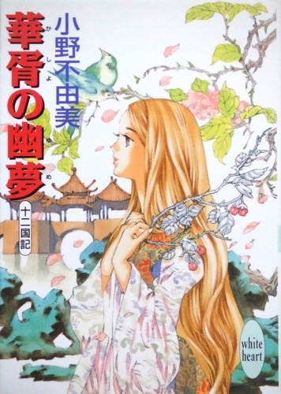
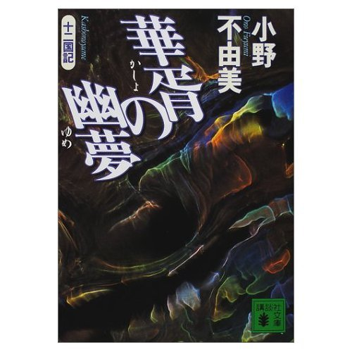

| [小野不由美] 十二国記シリーズ10 | |
| 小野不由美 | |
| (2015) | |
|
十二国記 華胥の幽夢
小野 不由美
|



|
華胥の幽夢 |
目 次
冬 栄
乗 月
書 簡
華 胥
帰 山
|
冬栄 |
泰麒が建物を出ると、宮城の様子は一変していた。
回廊に踏み出した足を止め、泰麒は瞬き、あたりを何度も見渡した。建物に変化があったわけではない。立ち並ぶ巨大な宮殿も、広々とした庭院の様子も変わらない。白い壁に紺の甍宇、そこを行き交う下官の姿、いつもどおりの光景だった。──ただ、それらはいま、淡い光を内側から放っているように見えた。
何もかもが柔らかな光を帯びている。珍しくすっきりと晴れていた冬空は紗の幕にでも覆われたよう、青い色は薄まって太陽は白く滲んでいる。泰麒の足許に落ちる影も薄墨色をしていた。それなのに周囲の景色は午に見たときより明るい。
霧──とは違う。けれども何かそんなものが、あたりを包んでいる。それは目に見えないほど細かく、微かに光を帯びている。泰麒には、そんな気がした。
「どうなさいました」
背後からかけられたのは、泰麒に続いて宮殿を出てきた正頼の声だった。
泰麒は正頼を振り返る。これはどうしたことだろう、と広い庭院を無言のまま示した。
「おや、珍しい。白陽ですね」
正頼は笑って空を仰いだ。正頼は泰麒につけられた傅相で、この戴国の首都が置かれた瑞州の令尹を兼ねる。泰麒のようなまだ小さな宰輔には、養育のために傅相がつけられることが多い。傅相はずっと傍らに控えて私生活上の諸事から政務にわたるすべての面倒を見てくれ、同時に教師となってくれるのだった。
「白陽？」
「こういうお天気のことを、そう言うんです。下も晴れたんですね」
なおも首を傾ける泰麒に、
「雲海の下の雲が切れたんですよ。下界の雪の照り返しでこんなふうになるんです」
「へえ......」
泰麒は白い幽光に包まれた周囲を改めて見回した。まるで障子越しの陽脚のようだ、と思う。異界になってしまった遠い故郷、そこでとびきり天気の良い朝に目覚めると、ちょうどこんなふうだった、と懐かしく思い出した。
「すっかり雲が切れないとだめです。そして、うんといいお天気でないと。年にそう何度もあることじゃないんですよ。儲けましたね」
「いまなら下の景色が見えると思う？」
「確かめに行ってみますか？」
泰麒は大きくうなずいた。王宮は海のただなかに、島のように浮かんでいる。取り巻いた雲海を透かして下界の景色が見えるはずだったが、冬に入ってそれも絶えた。雲海の下を雲が覆って視界を遮ってしまったのだ。
正頼は笑って手を伸ばす。泰麒はその温かな手を握って傅相を見上げた。
「急がないと、また雲が出てしまうんじゃないかしら」
正頼は心得たように微笑む。
「じゃあ、近道をして行きましょうか」
泰麒は喜んでうなずいた。泰麒はこの傅相の言う「近道」が好きだった。下官しか使わないような小道や裏道を通り、時には閉められた宮殿や、府第の庭先をこっそりと通り抜ける。王宮にはこんな場所もあったのか、と珍しいのが興味深かったし、下官を驚かさないよう、人がやってくるたびに物陰に身を隠すのも楽しかった。
この日も正頼に手を引かれ、府第の片隅を掠め、裏を忍び足で通り抜けて「近道」をした。阿閣の露台の下を潜り抜けて庭院に出ると、ちょうど間近の建物から数人の人影が騎獣を伴って出てきたところだった。
「──台輔」
驚いたように足を止め、声を上げる者がある。慌てて隠れたものの、泰麒と正頼は物陰で顔を見合わせた。
「見つかっちゃったね」
「穏和しく出ていって、お叱りを受けるしかなさそうですねえ」
笑い合って、泰麒は正頼と植え込みを出た。すぐ近くの石畳の上では、皮甲をつけた数人がふたりを待つように佇んでいる。禁軍将軍の巌趙と阿選の姿が見えた。共に騎獣を伴っている。ひとりだけ交じった皮甲の女は瑞州師将軍の李斎で、やはり騎獣の飛燕を伴っている。大司徒の宣角が一緒だということは、軍事のための集まりではないのだろう。そして──その背後には笑みを浮かべた泰麒の主の姿があった。ひときわ異彩を放つ灰白色の髪と紅玉の眼。
「台輔は神出鬼没でいらっしゃる」
真っ先に、李斎が膝をついて一礼しながら破顔した。
「珍しいお天気だから、雲海を見にきたんです。下の景色が見えるんじゃないかと思って。──飛燕を撫でてもいいですか？」
「もちろんですとも」
李斎は気安く答えて、
「けれども台輔──畏れながら、雲海にいらしてもこのお天気ですから、何も見えないかと存じますが」
泰麒は飛燕の毛並みを撫でながら首を傾けた。
「雲がないんでしょう？」
「はい。ですから地上の照り返しで、何も見えません」
怪訝そうに言われ、泰麒は正頼を見上げた。正頼は悪戯っぽい笑みを噛み殺すようにしてあらぬ方向を見ている。唐突に、巌趙が大きな身体を揺すって笑った。巌のような巨躯にふさわしい、朗々とした声だった。
「正頼めに謀られましたな」
慰めるように飛燕が鳴く。泰麒は、その首筋のあたりを撫でながらひとつ息を吐いた。
「正頼ったら、酷いんです。前にもぼくが令尹って何って訊いたら、それは子守のことだって言うんですよ。驍宗さまにそう言ったら、笑われてしまいました」
「きっとその後、正頼は主上にお叱りをいただいたでしょうから、痛み分けですね」
そう笑って言った阿選の言葉に、泰麒も笑った。正頼もまた、くつくつと笑っている。阿選はもともと禁軍の将軍、先ごろ登極した驍宗もまた禁軍の将軍だったから、同輩として親しい間柄だった。李斎も驍宗とは親しく、巌趙、正頼らはそもそも驍宗の麾下だった。近しい者の間に特有の、和やかな空気が人々を包んでいる。
笑ったまま正頼が泰麒を促した。
「また主上にお叱りを受けないうちに退散しましょうか。残念ながら下界の景色は見えませんけど、珍しい様子が見られますよ。雲海が白く光ってとても綺麗なんです」
「ついでに禁門を降りて下の様子を見に行っちゃ、だめ？」
ちょうど内殿の奥まで来ていた。たったいま、李斎らが出てきた建物を抜けると禁門に出る。正頼は眉を上げる。
「下はうんと寒いんですよ。台輔はお小さいから、芯まで凍るのなんて、すぐです」
「ちょっとだけ」
泰麒が言うと、驍宗が足を踏み出した。この戴国の王──泰麒の主。
「私が連れていこう」
泰麒は嬉しかったが、同時に申し訳なくも感じた。登極したばかりの王は忙しい。泰麒に付き合って割く時間などないはずだ。
「でも......あの、御用事では」
「李斎たちも騎獣を厩に戻す時間が欲しいだろう。ちょうどお前に用もあったしな」
主の笑みに誘われて、泰戴も顔を綻ばせる。無二の主だから、側にいられれば無条件に嬉しい。泰麒は正頼を振り返る。正頼は目を細めて、ここで待っていますから、と笑んだ。
「お帰りになったところなのに、ごめんなさい」
構わない、と振り返って微笑んだ驍宗の向こう、たったいま、開かれたばかりの扉の先には広々とした窓が設けられていた。その外には雲海が広がっている。異国生まれの泰麒には、空の上にこうして海のあることが、とても不思議なことに思われる。
その海は静かな波音を立てていた。いつもは陰鬱な灰色をしているのに、今日はそれが白い。真珠色の海面は、水底から照らされたように淡く輝いて見えた。
歓声を上げて窓辺に駆け寄った泰麒の肩に、重みのある旗袍が被せられた。
「着ていなさい。外は本当に寒い」
「でも、驍宗さまが寒くないですか？」
「なに、私なら大事ない」
申し訳なくも思ったけれども、驍宗の心遣いが嬉しかったので、泰麒は頷いた。先に立って階段へと向かう驍宗の背を追いかけて、長い旗袍の裾を踏み、転びそうになる。それを見てとって、驍宗はしっかり旗袍を掻き合わせて泰麒ごと抱えあげた。
「まだまだ軽いな」
「それは、ぼくが麒麟だからだと思うんですけど」
泰麒の本性は──自身にとっても意外なことに──人ではない。麒麟という獣で、だから鋼色の奇妙な髪も、実は髪ではなく鬣でそして天翔る獣が並べてそうであるように、そもそも身体の目方自体が軽いのだ。
そうか、とだけ言って、驍宗は泰麒を抱えたまま広間の一隅にある白い石の階段を降りる。決して短くはない階段を下る間に、それに何十倍する距離を下降している。こういう不思議が王宮には随所にあって、泰麒も当初は珍しくてならなかったが、少しずつ慣れてきた。空を飛ぶ獣がいたり、空の上に海があったり、人々が変わった色の髪や眼を持っていたり──ここはそんな世界なのだ、と。
広く緩やかな階段を下ったところは、大きな広間だった。その正面には巨大な扉がある。両脇に控えた門卒が、驍宗と泰麒の姿を認めて門扉を開いた。途端に刺すような風と、鋭利な光が押し寄せてきた。
禁門は凌雲山の中腹、雲海に近い高所に穿たれた巨大な洞窟の奥に建っている。門前は岩盤に三方を囲まれた大きな広場で、唯一開かれた一方の縁の先は、落ちこむようにして途切れていた。驍宗の腕を滑り降り、温かい手をしっかりと握って覗きこめば、眼下には雪に覆われた鴻基の街が広がっている。急峻な起伏を繰り返す周辺の山々は雪に覆われて白銀に輝く。青い空との対比が鮮やかだった。
「......綺麗」
呟くのと同時に、喉の奥へと冷たい外気が流れこんできた。その刺激に、思わず咳きこみそうになる。禁門を出て縁のほうへと進む間に、もう膚が悴んでいる。冷気が目に沁みる。眩しいのと寒いのとで痛いほどだった。
「本当に、寒いんですね」
口許も強張って思うように動かない。驍宗はうなずいた。
「戴は極北の地だ。冬が来れば早々に雪が降り、里廬は雪の中に閉ざされる。こんな晴れ間は幾日もない。天上の王宮にいれば、さほどには感じないだろうが、民は皆この寒さの中で生活している」
「大変ですね......」
「家を失えば、たちまちのうちに凍えてしまう。山野は雪に覆われ、地面ごと凍って草の根を掘ろうにもそれすらできない。秋に蓄えた食糧が尽きれば飢えるだけ、なのに秋の収穫は天候しだいだ。冬に対する備えが民の生死を決める──ここはそういう国だ」
泰麒は、白く凍りつき無機物のように輝く街を無言で眺めた。
「こうして眺める国土は無垢で美しいが、同時に無慈悲で恐ろしい。──それを決して忘れないように」
はい、と泰麒はうなずいた。どこか粛然とした気分になっていた。
ほどなく泰麒は、背中を押す手に促されて禁門の中に戻ったが、しんとした気分は寒気が途切れても変わらなかった。ほんのわずかの間に、手足は冷えきり、指先は痛いほどだが、胸の中に冷たい塊があるように感じるのは、そのせいばかりでもあるまい。
「寒かったろう？」
驍宗は問い、そうして、どうだ、と明るい声を上げた。
「暖かいところに行ってみたくはないか？」
「暖かいところ？」
首をかしげる泰麒に、暖かくて雪がなくて花が咲いているところだ、と言う。
「でも、いまは冬ですよね？」
泰麒が言うと、驍宗は軽く身を屈め、泰麒の肩に手を載せて微笑った。
「蒿里に頼みたいことがある」
泰麒はさらに首をかしげた。「暖かいところ」と「頼み」の間にどういう関係があるのか、よく分からなかった。
「──漣へ行ってもらいたいのだ」
「漣......漣国ですか？ うんと南の」
驍宗はうなずく。
「蒿里は以前、蓬山で廉台輔のお世話になっている。そのお礼も申しあげたいし、おかげで戴は落ち着いたことをお知らせもしたい。だが、私にはその暇がない」
「それで、ぼくが？」
「本来ならば登極して、早々にお礼の使節を向かわせるべきところを、聞けば漣国には争乱がおありとのこと、乱そのものは平定したとのことだったが、しばらくは御多忙であろうと思って御遠慮を申し上げた。だが、どうやらそれも落ち着かれたらしい。それで、私の代わりに使節として廉王をお訪ねしてもらいたいのだ」
「ぼくひとりで......ですか？」
泰麒は少し口籠もった。
「もちろん、供はつける。──大任だろうが、行ってくれるな？」
驍宗と別れ、泰麒はとぼとぼと正頼の待つ庭院に戻った。泰麒を認めて歩み寄ってきた正頼は、すぐに不思議そうに首をかしげた。
「どうなさいました？」
「僕、漣に行くことになったの」
泰麒が言うと、正頼は心得たようにうなずく。
「ああ、そのお話が出ましたか」
「知ってたの？」
「台輔には大任すぎるだろうか、って主上から相談されましたからね。台輔なら絶対にだいじょうぶです、と太鼓判を捺しておきました」
言って、正頼は泰麒の顔を覗きこんだ。
「──ひょっとして漣に行かれるのは、お嫌ですか？」
「ううん」
泰麒は強く首を振った。本当に嫌なのではなかったし、嫌がっているとは思われたくなかった。
「不安でいらっしゃる、とか？」
泰麒は俯いたまま、頭を振った。
「......そういうわけじゃ、ないんだけど」
「大任ですからねえ。なのに驍宗さまは御一緒でないし」
正頼は、そもそも驍宗軍の軍吏だった。だからときどき、「主上」が取れる。
「......漣は遠いから、行って帰るまでに、うんと時間がかかるよね？」
「そうですねえ。騎獣を使っても、片道に半月はかかるでしょうねえ。急いで行って帰っていらしても、新年の祭礼には間に合いませんでしょう」
「ぼく、いなくていいの？」
「本当は、主上と台輔と揃ってお迎えになるものですけどね。けれども主上も、だからこそいまのうちに使節を、と思われたんでしょう。ちょうど、いまは祭礼続きで、もともと重大な御用事の少ない時期ですからね。──ほら、こんな時期でもないと、相手方にも御迷惑ですから」
「そうだね......」
「それとも、驍宗さまと離れておしまいになるのが、お寂しくていらっしゃる？」
泰麒は正頼を見上げた。正頼はひとり得心したようにうなずく。
「驍宗さまは近頃、お忙しくてらっしゃるからなあ」
実際、驍宗はこのところ、ひどく慌ただしげにしていた。冬至の郊祀の前から本当に忙しそうで、それは郊祀が終わってからも変わらなかった。正頼が傅相としてついて以来、午後の公務に付き合ってくれることもなくなった。食事も必ず一緒というわけにはいかず、朝議の前後に少し言葉を交わすのが精一杯、ということが多かった。
「ゆっくりお話しする暇もない。そのうえ長い旅に出されてしまうから、心細くなってしまわれたんですね？」
「うん......」
忙しいことは、重々承知している。それでも不安になる。何か気に障ることをしただろうか──と、ついそう思ってしまうのは、郷里の家で、泰麒はいつもそんなふうだったからだ。
泰麒は常に、期待に応えることのできない子供だった。周囲から期待されていることは分かるのに、何を求められているのか分からない。良かれと思ってしたことが、得てして家族を落胆させた。自分がいるせいで、何かが巧くいっていない──そういう直感を泰麒は抱いていたし、それは今も変わっていなかった。
「......ぼく、いたら邪魔なんだと思う？だから漣に出されてしまうのかしら」
まさか、と正頼は破顔した。
「それでそんなに、気落ちしてらしたんですか。──そんなことがあるはずないじゃ、ありませんか。台輔はかけがえのないお方なんですから」
「それはぼくが、麒麟だから？」
「そうですとも」
「でも......」
言いかけて、泰麒は言葉を途切れさせた。正頼は首を傾けて続きを待っていたが、結局、泰麒は首を横に振って口を噤んだ。正頼は柔らかく苦笑する。
「よほど心細くていらっしゃるんですね。だったら、なおのこと、頑張って大任を果たされることだと思いますよ。そうしたらたぶん、いいことがありますから」
「いいこと？」
はい、と笑って、正頼はおどけたように手を挙げる。
「これから先は秘密です」
「ええ？」
泰麒は思わず正頼の袖を握った。
「──あのね、正頼」
「だめだめ。台輔はおねだりがお上手なので、私としちゃ聞いてあげたい気持ちでいっぱいですけど、言ったら驍宗さまに叱られてしまいます」
そこから、めまぐるしく戴と漣の国府の間で青鳥がやりとりされて、日程が決まり、人員が決まった。
泰麒を正使に、傅相の正頼と、泰麒付きの大僕である潭翠が従う。それに副使として瑞州師左軍の霜元と禁軍右軍の阿選で四人。その四人がそれぞれに下官をひとりずつ連れて、総勢わずかに九人、特に勅使の幢は揚げず、平服で漣に向かう。正式な使節とはいっても、あくまでも泰王個人が廉王個人に使いを出す、という体裁である。
漣国は世界南西に位置し、戴と同じく大陸からは虚海によって隔てられている。戴にとって最も遠い国──それが漣だった。実際のところ、戴は漣とはいかなる関係も持たない。これまでただの一度も国交を持ったことがなかったし、要不要で言うなら、この先も交わりを持つ必要はないだろう。ただ、泰麒はかつて、個人的に廉麟の世話になったことがある。異国──泰麒にとっては故郷──に流されていた泰麒を、この世界に呼び戻してくれたのが廉麟だった。
「廉台輔はどういう方だと思う？」
鴻基を出てすぐ、泰麒は正頼に訊いた。漣までは騎獣を使うが、もちろん泰麒はまだ騎獣に乗ることができない。それで二頭の、牛に似た騎獣の背に載せた籠のような輿の中に穏和しく納まっていた。同伴した正頼は、おや、と不思議そうな声を上げる。
「台輔のほうがご存じじゃないんですか？」
「ううん。ぼくもお会いしたことはないの。ええと、お顔を見たことはあるんだけど、ぼくはこちらに連れ戻されたばかりで、すごく驚いてて、それでろくにお顔も見てなくて」
言ってから、泰麒は少し恥じ入って告白した。
「本当は、泣いちゃったんだ。どうしてなのか、自分でもよく分からないんだけど。泣いてるうちに眠ってしまって、目が覚めたら廉台輔はもう漣にお帰りになってたの」
「そうだったんですか。......私も廉台輔は存じ上げないからなあ。きっと戴で、廉王や廉台輔がどんな方だか知っている人は誰もいないでしょうねえ」
「王さまも麒麟も、たった十二人ずつしかいないんだから、仲良くすればいいのにね」
泰麒が言うと、正頼は破顔した。
「まったくですねえ。......でも、簡単に仲良くできない理由は、いずれ台輔にもお分かりになると思いますよ」
泰麒は言われて、きょとんとしたが、確かにやがて納得しないわけにはいかなかった。
頻繁に行き来するには、あまりにも遠いのだ。
足の速い騎獣を使っても、戴を出るだけで一昼夜がかかった。そこから、さらに一昼夜をかけて海を越え、以来、柳国の港町を皮切りに虚海の沿岸を辿って恭へと向かう。岸辺づたいに範を南下し、さらに海を渡り、空行半月を経てやっと見えた岸辺が漣だった。
「......とってもよく分かった」
漣国の首都、重嶺に舞い降りながら、泰麒が呟くと、正頼は首をかしげる。
「仲良くできないわけ。......こんなに遠いんじゃ、遊びに行って帰るだけで、ほかのことをする暇がなくなっちゃうものねえ」
でしょう、と正頼は笑った。
「大変な長旅でしたね。お疲れじゃないですか？」
泰麒らは重嶺を囲む閑地で乗騎を降りた。目前に見える重嶺の街は、新年を間近に控えて華やかな飾りで彩られている。
「ううん。今日は半日しか飛んでないもの」
そうですか、と正頼はさも気落ちしたように溜息をついた。
「台輔は辛抱強くていらっしゃるので、じいやは大助かりで、つまらない」
泰麒はきょとんと正頼を見上げた。
「正頼、つまらないの？」
「もちろんですとも。腕白小僧の首根っこを捕まえて、がみがみ言うのが私のお役目なんですから。たまには大変な悪戯をしでかして、尊いお尻をぶたせてくれなくちゃ、じいやには楽しみがありません」
正頼がおどけたように顔をしかめるので、泰麒はくすくすと笑った。
「心掛けてみるね」
「よろしくお願いしますよ」
正頼と笑っているとき、すぐ側の巨大な正門──午門のほうから、一足先に重嶺に向かっていた下官がふたり、やってきた。四人の下官のうちの二名が交替で一足先に宿を発ち、その日の逗留地に先着して宿を調達する。
「ああ、出迎えだ。──今日の舎館は、良いところだといいですねえ」
重嶺は信じられないほど暖かかった。柳、恭、範と、ひとつ国を経るたびに、暖かくなるのがはっきりと分かった。戴の冬には絶対に必要な、羽毛を入れ羊毛で内張りした旗袍も、範の南部に入ったのを最後にとうとう脱いでしまっている。
そんなふうだったから、舎館に入り、白圭宮を出た日以来、久々に朝服に着替えた正頼は、それだけですでにうんざりした顔つきだった。
「......暑そうだね」
臥室を出てきた正頼に泰麒が声をかけると、はあ、と正頼は情けなさそうにする。
「漣は暖かいとは聞いてましたが、ここまでだとは思いませんでした。これじゃあ、戴の春や秋の気候ですねえ」
「そうだねえ」
「ともかくも、これが戴のこの時節の朝服なんですから仕方ありません。私はちょっと国府をお訪ねして、到着の御挨拶をしてきます」
「ぼく、行かなくていいの？」
「とりあえず先触れをするものですからね。台輔がお出ましになるときには、礼服を着ていただかなくちゃなりませんから、いまのうちに涼んでいらっしゃい。たぶん、夕刻には戻れますでしょう」
「でもってぼくは、正頼が戻るまでに、いっぱい悪戯をしておくんだね」
泰麒が言うと、正頼は声を上げて笑った。
「そうです。潭翠たちをうんと困らせてやるんですよ」
言って正頼は、起居の隅に影のように控えている大僕に目をやる。潭翠はいつものように無言で、正頼の軽口にも言葉を挟むわけでなく、それでもちらりと苦笑めいたものを浮かべた。
「潭翠には内緒ですけど、私は一度、潭翠が血相を変えたところを見てみたいと、常々思っていたんです」
「潭翠がかんかんになるような悪戯をするんだね」
「頑張ってくださいまし。そうしたらじいやが、戻りしだい、園林の木に吊して差しあげますから」
同じく朝服に改めた下官をふたり連れ、正頼が出掛けていったのと入れ違うようにして、旅装を解いた霜元と阿選が泰麒の房室を訪ねてきた。
「お疲れは出ていらっしゃいませんか」
訊いてきたのは霜元のほうだった。霜元はもともと驍宗軍の師帥で、新朝廷では瑞州師の要となる左軍将軍に就いている。禁軍左軍を預かる巌趙ほどの巨漢ではないものの、上背のある偉丈夫で、どことなく品格のある落ち着いた物腰をしていた。泰麒は霜元に会うたび、故郷で読んだ物語に出てくる「騎士」という言葉を思い出すのだった。
「ううん。──それより、ほら」
泰麒が窓辺から外の園林を示すと、ふたりの将軍は気安げな調子で窓辺にやってきて泰麒の示したほうを見る。
「お庭に花があるんだよ」
驍宗は「花の咲いているところだ」と言ったが、本当にこの季節、ごく当たり前のように花の見られる国があるとは思わなかった。雪に覆われた場所もない。こうして窓辺にいても、寒いとは感じない。戴の窓辺では、隙間風や冷気で身震いするものなのに。
霜元は外を見やって目を細める。
「......何の花でしょう。これから咲き揃うところのようですね。こんな時節に雪のない国があるとは、思ってもみませんでした」
ぼくも、と泰麒は窓枠に頬杖をついた。
「戴がどこも真っ白だから、こちらはそんなものなんだって思ってた」
「こちら？」
「うん。蓬莱のお家では、雪が降るのは、ときどきのことだったんだよ。雪のないのが普通だったの。だからって、こんなに暖かくもなかったけどね。でも、戴はああでしょう？だから、こちらはどこの国も、みんなあんなふうなんだろうと思ってたの。ぼく、こちらの冬は初めてだから。でも、あんなに寒いのは戴だけなんだね」
そうですね、と霜元は生真面目そうにうなずく。
「世界は広いと改めて思いました」
「外の農地もまだ刈り取ってなかったし......」
「南の国では、冬も農地を休ませないのだそうですよ」
そう言ったのは阿選だった。
「雑穀を植えるのだと聞いたことがあります」
へえ、と泰麒は瞬く。
「じゃあ、冬にも植物が育つんだね。ということは、真冬でも畑に出て、野菜を採ってきたりできるのかしら」
「そのようです」
「戴もそうだといいのにねえ......」
泰麒が溜息をつくと、ふたりの将軍も感慨深げに同意した。
「子供は外を走り回っているのかな。ひょっとしたら、家畜だってまだ放しているのかもしれないね」
どんなふうに暮らしているのだろう、この暖かい国の人々は。泰麒が窓の外にその片鱗でも窺えないかと見入っていると、何でしたら、と阿選が言った。
「少し外をお歩きになりますか？ お疲れでないのでしたら、お供いたしますが」
「本当に？ いいの？」
泰麒が振り返って飛び跳ねると、阿選は笑ってうなずいた。
前王のもと、驍宗と同じく禁軍の将軍をしていた阿選は、驍宗とともに双璧として鳴らした人物だったと聞いていた。人望も篤く、武勇も同格、そのせいか風貌もどこか驍宗に似ている。ただ、時に驍宗は怖い。息を呑むような覇気を表すのだが、阿選にはそれがなかった。それで泰麒は、阿選に対しては物怖じしないですむのだった。
泰麒は期待をこめて霜元を見る。霜元は是非を思案するように考えこんでいたが、
「重嶺を御覧になるのは、悪いことではないだろう？台輔の見聞が広いのは、むしろ良いことだと私は思うが」
阿選がそう口添えしてくれ、霜元もうなずいた。
「我々と潭翠がいれば、滅多なこともございませんでしょうね」
重嶺は──鴻基と同じように──凌雲山の麓に広がっていた。真冬だというのに人通りは多く、街はどこかしら開放的な空気に包まれていた。泰麒にはそれが物珍しい。
鴻基とはあまりに違う、と泰麒は思う。鴻基の家々は凍った雪に覆われ、民は厚い璧の中の温もりに頼って生活している。山野を覆うのも雪ばかり、家畜を戸外に放つこともできず、ましてや、なにがしかの実りを期待することもできなかった。往来を行くのは、已むを得ぬ所用のある者だけ、それも厚い媼袍を着こみ、襟を立て、布や毛皮で頭を覆い、身を辣めて先を急ぐ。何もかもが内へ内へと強い力で押しこめられているよう──それが、戴という国だった。
漣は逆だ。冬のこの時期でも、いろんなものが開かれている、と泰麒は思う。板戸を開け放した窓からは建物の中を窺うことができ、店舗の戸口もまた開放され、大勢の民が出入りしている。街頭で立ち話をする者たち、走り回る子供たち、閑地には家畜がたむろし、たっぶりと地面を覆った枯れ草を食んでいる。
「すごいねえ......」
泰麒が溜息混じりに呟くと、そうですね、と阿選の微苦笑が返ってきた。
「この半分でも、戴の冬が柔らかければ、民の暮らしもずいぶんと違ってくるでしょうに」
本当にそうだ、と泰麒は思う。国の様子は決して豊かには見えなかったが──恭や範のほうがよほど豊かだった──どこかしら余裕のようなものが、街にも人々にも漂っていた。漣ではつい先頃まで内乱があったはずだが、その緊張感を引きずっている様子はどこにもなかった。戴ではこうはいかない。王朝が代わって間がないとはいえ、鴻基のような街でさえ、凍死する者が出る。物資が尽きて餓死者の出る里があり、そのために里を捨て、危険を承知で深い雪の中、列をなして近隣の街に向かう人々もいる。
大地からの収穫は、そもそも民が暮らすのにかつかつの程度、余裕は玉や金銀が作る。その余裕を先王がことごとく占有して、戴の民は長くぎりぎりの生活を強いられてきた。それは新王が践祚した今もまだ、さほどに改善されてはいない。
「天の神さまが、戴を暖かくしてくれればいいのにね」
泰麒が言うと、霜元が微笑んだ。
「天帝はその代わりに、戴に新王を授けてくださいました」
そうだね、と泰麒は声を落とし、視線を落とした。
「良い王さえおられれば、国と民が手を携えて苦難を乗り越えることができます。これ以上のお恵みはないでしょう」
「......うん」
「どうかなさいましたか？」
ううん、と泰麒は首を横に振っただけで答えなかった。怪訝そうな霜元の眼差しを避け、逸らした視線の先には緑地が広がり、鍬や鋤を持った人々がおっとりと働いている。
──戴もああだといいのに。
阿選らと舎館に戻り、戻ってきた正頼らを迎え、翌日に備えて臥室に退ってからも、泰麒はそればかりを思っていた。
恭や範のように豊かなら。あるいは、漣のように気候に恵まれていれば。
驍宗に禁門へ連れていってもらって以来、泰麒の胸の中には冷えた痼りができている。あの寒気の中、暮らしている人々がいる。官吏から耳にする限り、民の暮らし向きは良くない。凍死者が出たと聞き、餓死者が出たと聞けば、いよいよ寒々しかった。
（......たくさんの人が困っている）
あの非情な白い景色の中で。
なのに自分は、何もできない。
泰麒は麒麟だ。天が造り、民に授けたのだと言う。天意に通じ、よく天命を聴く。天帝の子と言われ、天の代理人だとされるが、泰麒には民を救ういかなる力も具わっていなかった。天候を変えることはもちろん、どんな奇蹟を施すこともできない。
戴麟は王を選ぶ──ただ、それだけ。そして泰麒は驍宗を選び、王にした。奇蹟はそこで使い果たされたのだ、という気が、泰麒はしている。
（もう何の力も残ってない......）
泰麒がすべきことは、もう何もなかった。いや、宰輔としての公務、州侯としての公務、役割がないわけではない。だが、それらを果たせるほど泰麒はまだ大きくなかった。実際に全ての実務を取り仕切るのは、正頼であり驍宗であって、泰麒自身は言われることにうなずいているだけ、むしろ泰麒に説明をして呑みこませねばならないぶん、正頼らは余計な労を背負いこんでいる。
王を選んでしまった麒麟は、何のために存在しているのだろう、と思う。
自分に大きな期待がかかっていることは分かっている。それは正頼や、阿選や霜元──そんな大人たちの振る舞いを見れば分かる。立派な大人が、子供にすぎない泰麒を恭しく扱う。それは正頼の言うとおり「かけがえのない」ものに対する礼節なのに違いない。
だが、泰麒の「かけがえのなさ」はどこにあるのだろうか。かつてはあったかもしれない、将来万が一、驍宗が先帝のように道を失い、王ではなくなり、新たな王が必要になったときにはまた「ある」のかもしれない。けれども、今の泰麒はやっと十一になろうとしている子供にすぎない。何もできず、何も分からない。周囲の人々の荷物でしかない──自分。
泰麒の不安の根はそこにあった。
期待されていることは分かっている。なのに何をすればいいのか分からない。できることも何ひとつなく、ただ見守っているだけ、自分は無用の存在で、いれば邪魔になるだけなのだという気がしてならなかった。そう思ってはいないだろうか、思っていて当然なのではないだろうか、正頼も──驍宗も。
明けて翌日、泰麒は礼装を整え、重嶺の街の北に聳える宮城への入り口──皋門を潜った。漣国の王、廉王の居宮を雨潦宮という。
一行は出迎えに現れた漣の官吏、大行人たちに導かれ、五門をひとつずつ潜り抜けていった。門を潜るたびに重嶺山の内部を通る階段状の隧道を抜け、雲海を貫く巨大な山の、三合目、五合目、七合目と登っていく。最後の隧道を登って、五つ目、路門を越えると、そこはすでに雲海の上──島のように聳える山頂、そこに広がる燕朝と、王宮の構造は雨潦宮も白圭宮も基本的に変わりがない。
雲海の上は下界よりさらに暖かかった。重嶺山は鴻基山よりも起伏に乏しく、なだらかな広い山頂を持っていた。そこに広がる王宮の建物は白圭宮のそれよりも大きく、ゆったりと配置されていて、その間を冬であるにもかかわらず、豊かな緑が埋めている。その風景は、泰麒に懐かしい感じを抱かせた。
こんもりとした緑の合間に広がる宮、建物はどれも開口部が多く、回廊や四阿は壁を持たないものが多かった。それが緑と渾然一体になったさまは、泰麒がいっときを過ごした蓬山の景色に似ている。
泰麒一行は路門を出ると、まっすぐに外殿へと通された。広くひんやりとした空気の籠もった正殿の中央には荘厳な玉座が据えられていたが、そこには誰の姿もなかった。
空の玉座を見て泰麒は驚いたし、正頼たちは困惑したようだったが、泰麒らをここまで先導してきた漣国官吏のほうが、さらに驚いたようだった。狼狽すらした様子で顔を見合わせ、おろおろと広大な正殿の内部を見渡す。がらんとした正殿の脇のほうから、ひとりの官吏が走りこんできた。彼は大行人に耳打ちをする。大行人は驚いたような顔をし、官と押し問答をした末、困りきった気配を漂わせて泰麒の前に平伏した。
「まことに御無礼なことで申し訳ありません。どうぞお気を悪くなさいませんよう。さらに無礼を申しあげて恐縮の至りなのでございますが、その......どうか奥へお進みください」
「奥へ、ですか」
正頼は言って、阿選、霜元と顔を見合わせた。通常、他国からの賓客を招き入れる掌客殿は外殿の西にあるもので、これより奥へといえば内殿のこと、よほど懇意であればともかく、たとえ他国の王といえどもそこから先へ軽々しく足を踏み入れることはない。
「はあ。主上の御在所にお連れするように、ということですので」
そう答えた大行人は、困り果てた様子で額に汗を浮かべていた。
慌てて輿が用意された。泰麒らは、さらに粛々と進んで、宮城内の隔壁を越え、内殿へと向かわねばならなかった。その内殿を奥へ奥へと進むと、最前見掛けたよりももっと高く堅固な隔壁が二重に見えてきた。
「あのね、正頼」
泰麒はそっと、輿の横に座った傅相に耳打ちをした。
「......はい？」
「さっき見えた建物は、仁重殿じゃないかしら、と思うんだけど」
はあ、と正頼は困惑したようにうなずく。
「......実は私も最前からそう思ってました」
「仁重殿があるってことは、ここは路寝だよね？」
「はあ......そういうことになります」
「路寝の奥の門を抜けたら後宮に入ってしまうのじゃないかしら」
「の......はずですけど......まさか」
そうは言ったものの、正頼の顔は引きつっている。額にうっすらと汗が浮かんでいるのは、どうやら気温のせいばかりではなさそうだった。
雲海の上に広がる王宮の最深部──燕朝は何重もの隔壁と門によって幾つかの区画に分かたれている。最奥にあるのが王后の住まいとなる北宮で、その手前が小寝、これを総称して後宮と言う。後宮の東には、王の親族の住まいとなる長明宮、嘉永宮などの続く東宮が、西には鳳凰や白雉など五種の霊鳥が住まう宮で構成される梧桐宮、王が礼拝する太廟、あるいは子や実りを願う路木のある福寿殿などで構成される西宮があって、後宮、東宮、西宮を併せて燕寝と称する。燕寝の中心は後宮であるところから、後宮と一括して呼ぶこともあったが、戴国白圭宮の後宮は現在、西宮を除いて閉められている。たとえ開いていても、西宮以外の後宮は、そもそも宰輔ですら気安く立ち入ることはできない。さすがの泰麒もそれくらいのことは知っていた。
だが、その後宮へ向かうとしか思えない門の前で、大行人らは足を止めた。そうして、輿を下ろさせ、一様に叩頭したのだった。
「あの......大変失礼とは存じますが、どうかこのまま中へ。私どもは、ここから先へ立ち入ることができません」
「ええと、ですが」
狼狽える正頼を遮り、大行人は、
「お招きせよとの仰せですから。中の門殿に取り次ぎの閹人がおりましょう。なにとぞ、このまま」
「......私どもだけで、参るのですか？」
まことに申し訳ございません、と大行人は深々と頭を下げた。赤らんだ額には滝のように汗が流れていた。彼が真実、困り果てているのを見て取って、泰麒は正頼らを促した。
「いらっしゃいって、お招きいただいたんだから......ね？」
「そうです......けど」
正頼は門の内と外を見比べる。では、と静かな声を上げたのは阿選だった。
「下官はここに留め置いておいたほうがいいでしょう。このまま連れていったのでは、こちらも失礼にあたる」
いえ、と大行人が声を上げた。
「みなさま、ということですので」
言って彼は再度、汗にまみれた頭を石畳に擦りつけた。
「──お困りあそばすのは重々お察し申しますが、どうぞ中へ」
後宮は閑散として人気がなかった。下官のひとりに出会うこともなく、まっすぐに石畳を辿って内側の門殿に着いたが、周囲に官の姿は見えなかった。門の守備をしているはずの門卒の姿すら見えない。見渡したかぎり、取り次いでくれる者はどこにもいそうになかった。
「誰もいないね......」
泰麒は開け放したままの門の中を覗きこむ。緑の多い前庭の向こうに、小寝の建物が続いているのが見えたが、人の姿はおろか、気配すらない。
「どうするの？」
泰麒は周囲の大人を振り返ったが、彼らのほうが自失している。
「正頼？」
「どうする......と言われましても」
「ぼく、後宮には入ったことがないんだけど、正頼はある？」
「ええと......入るだけなら、何度か。白圭宮の後宮を閉めるのに、立ち会ったことならございますけど、後宮は空っぽでしたし......余所のお国の後宮でもありませんでしたし......」
顔色を見る限り、霜元や阿選も同様のようだった。下官たちなどは、あまりのことに色を失っている。
泰麒は、ちょっと門内に足を踏み入れてみた。周囲を見回し、誰もいないのを見て取って、仕方なく前庭を渡り、次の建物まで行ってみる。
「台輔」
基壇を登って建物の中と、さらにその奥の庭院を眺めて、軽く声を上げた。
「あのう──すみません」
「......た、台輔」
泰麒は振り返る。
「だって誰もいないんだもの、とにかく呼んでみないと仕方ないでしょう？」
「ですが」
「あの、誰かいませんか？ ごめんください」
なんと意外にも大胆なところのある麒麟だ、と正頼たちは目を丸くしたが、何のことはない、泰麒は故郷で他人の家を訪ねたときの習慣に従っただけのことである。
「すみません」
泰麒は声を張りあげてみたが、答えはどこからも返ってこなかった。
「誰もいらっしゃらないみたい。どうしよう？」
「どうしよう、と申されましても」
「失礼して、お庭づたいに行って誰か探してみる？」
「そんな、まさか」
「でも、このまま帰るわけにはいかないでしょう？」
「それはそうですが」
「お部屋の中に入らなければ、だいじょうぶじゃないかしら。とにかくぼく、行ってみるね」
そんな、と正頼は呟いて、唐突に拳を握った。
「私もお供します。──霜元たちは、とにかくここで待っていてください」
「しかし」
「なに、仮にも一国の台輔ですから、厳しい処罰をいただくことはないでしょう。......私は腹を括りました」
自分も、と言ったのは潭翠だったが、正頼はそれを止める。
「こうして開け放しにしてあるぐらいですから、滅多なこともないでしょう。台輔には使令もおありだし、とにかく私と台輔で行ってきます」
泰麒は正頼と手を繋いで、とりあえず中へと進んでみた。庭院をふたつ越えると祀殿だったが、この中にも誰もいない。まったく無人というわけではなさそうで、きちんと掃除はされているようだし、祖霊を祀った供案には、真新しい香と緑が供えられている。
特に理由があったわけではないが、泰麒らは西へ歩いて北宮へと向かった。回廊を横切り、別の庭院に出、あちこちを覗きこんで、北宮の園林に出たところで足を止めた。
泰麒はきょとんとその光景を見守る。次いで、正頼を見上げた。
「......畑があるよ」
「ありますね......」
「白圭宮には、畑なんてないよね。それとも後宮にはあるものなの？」
「ないのが普通だと思うんですけど」
「内乱がおありだったって言ってたよね？ お城で野菜を作るほどお困りなのかしら」
「ど......どうでしょう」
ともかくも泰麒は正頼と手を繋いだまま、見事な植え込みの間近まで迫った菜園を、畦に沿って歩いてみた。建物の角を回るとそこには、まごうことなき田園風景が広がっている。きちんと整えられた畦をさらに辿っていくと、低い樹木が整然と並んだ一郭に出た。それはいかにも果樹園の風景に似ていた。
「正頼」
泰麒は正頼に示した。ようやく人間の姿を見つけた。何の木だろう、赤い実をつけた樹木の下で、農夫がひとり、枝に鋏を入れている。
「あのう」
泰麒は声を上げた。正頼の手を放して、ぱたぱたと明るい林の中に駆けていく。
「あの、すみません」
泰麒が声をかけると、袍子に身を包んだ人物が振り返った。泰麒に目を留め、背後の正頼に目をやって、にこりと笑む。袖で顔を拭い、切り取った枝を手近の草の山に載せて、青年は頭を下げた。
「勝手に入ってきてごめんなさい。ぼくたち、人を探していたんです。あの、門殿に誰もおいでじゃなかったので」
おや、と彼は首を傾けた。
「誰もいませんでしたか。じゃあ、きっとみんな昼寝でもしてるんでしょう」
「お仕事のお邪魔をして申し訳ないんですけど、誰か取り次ぎをしてくださる方はいないでしょうか。ぼく──いえ、私は戴国より参りました、泰麒と申します」
ああ、と彼は人懐っこい笑顔を浮かべた。
「そうか、あなたが泰台輔ですか。お小さい方だとは聞いてましたけど、本当にお小さくていらっしゃるんだな」
「あの、あなたは？」
「ああ、俺は鴨といいます。鴨世卓」
「とても良いお庭ですね」
泰麒が言うと、にこにこと青年は笑う。
「そうですか？」
「あの赤い実はなんですか？」
「紅嘉祥ですよ。ひとつ、差しあげましょうね」
世卓は気軽に手を伸ばして、きらきらと赤い実を枝からもいだ。すぐ傍の水桶の中に放りこんで、手巾で拭ってくれる。
「さ、泰台輔、どうぞ。中に種がありますから、お気をつけてくださいね」
「はい」
言って、泰麒は世卓を見上げた。
「でも......ぼくが貰ってもいいんでしょうか。王さまのものではないんですか？」
「俺が作ってるんだから、誰に迷惑がかかるわけでもないでしょう」
「でも、王さまに叱られたりしませんか？」
世卓は少し、困った顔をする。
「王さまは俺だから、叱られようがないです」
泰麒は赤い実を掌に受けたまま、ぽかんと世卓を見上げた。
「あの......廉王でいらっしゃいますか？」
「はい、そうです」
対応に困って泰麒は正頼を振り返ったが、正頼は目を丸くしたまま立ち竦んでいる。泰麒はさらに困って再び世卓の、にこにことした笑顔に目を向けた。正殿で拝謁するための礼儀は習ってきたけれども、こういう場合はどうしたらいいのだろう。
泰麒の困惑に気づいたふうもなく、世卓はさらに手を伸ばして赤い実をもぎながら、正頼を振り返った。
「そちらの方もいかがです？」
「......はい、あの......いえ」
「ああ、立ったままでは失礼かな。近くに四阿がありますから、そこに行きましょう」
泰麒はとりあえずうなずいた。
手桶の中に紅嘉祥の実をいくつも入れて、それを提げたまま世卓は果樹園を抜ける。いくらも歩かないうちに、綺麗に石で整えられた池の畔に出た。複雑な幾何学模様を描く池のあちこちには橋が架かり、四阿や露台が水を慕うように周辺に集まっている。
そのうちのひとつに向かい、世卓は池の縁から手招く。
「台輔、こちらにお坐りください。そんなお召し物では暑いでしょう。旗袍を脱いでは、いかがです？」
「ええと......はい、でも」
泰麒は正頼を振り返った。正頼は引きつった笑みを浮かべる。
「そうさせていただきなさいまし」
「──あなたも」
「いえ、小官のことは、お気遣いなく」
「でも、暑いでしょう？」
「あの──はい、そうですね。では、お言葉に甘えまして......」
しどろもどろになった正頼を明るい目で見やって、世卓は池で手を洗い、桶の中の果実を洗う。それを池の縁にある石案の上に載せた。
「台輔がきちんと礼装を召してらっしゃるんだったら、こんな恰好では失礼でしたね。公用ではなく、個人的においでになるって聞いていたものですから」
「いえ。......あの、こちらこそ、ごめんなさい」
世卓は笑った。
「台輔がお詫びになるようなことじゃないです。俺はどうも迂闊なんです。御公務ではないって聞いたんで、隣の人がお茶を飲みにいらっしゃるような気分で考えてました。台輔に叱られてしまうな」
「......ぼくが？」
ああ、と世卓は笑う。
「うちの台輔です。......そうか、ややこしいな。俺はこんなふうなんで、始終、廉麟に叱られてしまうんです」
言いながら、世卓は明るく笑った。
「紅嘉祥が気になったものだから、何も考えずに、こちらにお通ししてください、って言ってしまいました。やっぱり廉麟の言うとおり、礼服を着て外殿でお待ちしていないといけなかったんですね」
「さっきは何をしていらしたんですか？」
「枝を詰めていたんです。大きくなりそうにない実のついた枝を切り詰めると、ほかの実が太るんですよ」
「廉王はそういうことにお詳しいんですね」
「俺は農夫ですからね。農夫はこれが仕事ですから」
泰麒はきょとんとした。
「王さまがお仕事ではないんですか？」
世卓は意外なことを聞いたように目を見開き、そして首を傾ける。
「......それはお役目なんじゃないかな。たぶん、べつに仕事じゃないと思いますよ。それで食ってるわけじゃないですから」
意を取りかねて泰麒が瞬いていると、世卓は笑う。
「農夫の仕事は、作物を作ったり家畜を飼ったりすることでしょう？」
「ええと......そうですね」
泰麒はうなずき、
「でも、その......お役目を果たすこともお仕事ではないんですか？」
「たぶん違うと思うな」
「お役目とお仕事は違うものですか？」
世卓は笑った。
「仕事は自分で選ぶものです。お役目は天が下すものです」
泰麒がぽかんとしたところで、聞き慣れた声がした。いち早く振り返ったのは、黙って控えていた正頼で、やってきた人影を見て、霜元、と縋るような声を上げる。同時に軽やかな女の声がした。
「まあ──そんな恰好で台輔をお迎えになったの？」
呆れたように言った女は、陽光のように明るい金の髪をしていた。
「おまけに、こんなところで。だから、私的なお訪ねといっても限度があるでしょう、と申しあげたのに」
「うん、そうだね。台輔の言ったとおりだった。とても失礼をしてしまったみたいだよ」
「おまけに、お供の方たちが門の前で途方に暮れてらっしゃいましたよ。──本当にもう、困った方ね」
子供のように、ごめんなさい、と詫びた世卓はしかし、やはりにこにこと笑っている。それを見やって困ったように微笑った女は、泰麒の前に膝をついて視線の高さを同じくした。
「泰台輔でらっしゃいますか？ ようこそおいでくださいました。どうぞ、お気を悪くなさらないでくださいましね」
「廉台輔でいらっしゃいますか？」
「はい。お会いできて嬉しゅうございます」
「ぼくもです。あの──ありがとうございました」
「はい？」
「蓬山の玉葉様にお聞きしたんです。以前、玉葉様が汕子にぼくを迎えにこさせたとき、廉台輔が大切なものを貸してくださったんでしょう？」
ああ、と廉麟は微笑った。
「呉剛環蛇のことですか？ あれは主上に貸していただいたんです。お礼なら主上に、と言いたいところですけども、主上にはそれより先に着替えてきていただかないと」
苦笑混じりの視線を受けて、そうか、と世卓は呟く。
「ごめんなさい。ちゃんとやり直しますから、少し待っていてくださいね」
照れたように笑いながら世卓は正寝に戻り、泰麒らは改めて外殿へと導かれて、そしてようやく、とりあえずは儀礼どおりに万事が進み始めたのだった。
泰麒の滞在は三日の予定だった。公式のもてなしを受け、あるいは公式の行事に参加もしたが、とりあえず泰麒らは私的な客人として迎えられていた。宿泊する場所として与えられたのも掌客殿のある一郭ではなく、正寝の大園林の中で、周囲に遣わされた官も、世話をするための下官が最低限、しかも世卓は、燕朝ならどこでも、好きなように出入りしてください、と呆気ないほど簡単に言う。
「......こんなに無防備でいいのだろうか」
霜元は理解に苦しむ様子だった。大人たちは概して戸惑っていて、それで居心地が悪そうだったが、泰麒は逆に、気持ちよく過ごすことができた。いろいろな儀礼や、決まり事の多くが泰麒にはよく分からない。知識として知ってはいても馴染みがなく、常に失敗をしないよう気を張っていなければならないのだが、雨潦宮ではそういったことの一切を気にしないですんだ。
「無防備でいらっしゃるのは、それだけ宮城の中が安全だ、ということなのだろうが」
阿選が苦笑混じりに言ったが、正頼は溜息をつく。
「安全なのか、暢気なのか。......どうも漣の方々は何事にも鷹揚なようで......」
「それだと、だめなの？」
泰麒が訊くと、正頼は情けなさそうに肩を落とす。
「だめなんてことはありませんとも。じいやはちょっと慣れないだけです。ほら、私はもともと軍の文官の出身ですから。規律で締めあげられて、きりきり追い立てられるのは慣れっこですけど、逆だとどうも......」
そのとおりだ、と言うように、霜元も阿選もうなずいた。
「身の置き所がない、と言うんですかね。......まあ、私たちはここで小さくなってますから台輔は遊んでいらっしゃい。台輔はこちらのほうが性に合うようですから」
「べつに、白圭宮が嫌いなんじゃないんだよ」
「分かっておりますとも。私だって、雨潦宮が嫌いなわけじゃありませんよ。何しろ私はこの二日で、あの潭翠が途方に暮れているのを三度も見ましたからね」
そうだね、と泰麒は笑う。
「昨日、廉台輔が朝御飯を持ってきてくださって、お茶を注いでくれたときなんて、潭翠、固まってたもんね」
「大きな声じゃ言えませんが、あんな潭翠は滅多に見られるものじゃありませんよ」
くすくすと泰麒は笑う。当の潭翠は戸口の脇に控えたまま、例によって聞こえない素振りをしていたが、どこか憮然とした様子だった。
「じゃあ、行ってくるね」
言って泰麒は広々とした楼閣を出る。無言で潭翠が蹤いてきた。泰麒はまっすぐに北宮に向かう。世卓は公務でなければ、きっと畑にいるはずだ──そう思って畑に向かうと、案の定、袍子に着替えて働いている世卓の姿があった。
「こんにちは」
声をかけると、にこりと笑う。少しも気取りのない笑顔が、泰麒には嬉しい。公務の間、そして公式の行事の間も、暇さえあれば世卓は畑に出ている。泰麒は始終、畑に入り浸ってそれを手伝わせてもらっていた。
いや、手伝うというよりも、世卓の周囲をうろうろしていて、ときに何かをさせてもらう、と言ったほうが正しいのかもしれない。泰麒には農作業をした経験がない。そもそも手伝おうにも、何をしたらいいのか、分からない。世卓に言われるまま右往左往するしかないところは、戴でのありさまと少しも変わらなかった。
「ぼく......お邪魔をしてますね」
泰麒がぶつかったせいで、散らばってしまった枝を拾い集めながら、思い至って泰麒は言った。一緒に拾いながら、世卓は、いいえ、と笑う。この王は、始終笑っている、という印象が泰麒にはあった。
「とってもお邪魔だとは思うんですけど、明日にはもう帰らないといけないし......もう少しだけ我慢してもらってかまいませんか？」
「少しも邪魔だなんてことはありませんよ。俺も小さい頃、近所の人が働く傍にいて、泰台輔みたいに手伝いをしながら仕事を覚えたものです」
言ってから、世卓は、あ、と声を上げ、照れたように笑う。
「そうか、台輔が農夫の仕事を覚えても仕方ないですよね。ひょっとして、俺は台輔を妙なことで引っ張り回しているのかな」
「そんなことはないです。あの......ぼくはお手伝いさせてもらうの、すごく楽しいんですけど......」
それは本当だった。泰麒は農作業を間近で見るのが初めてだったし、だから物珍しかった。暖かい風の中で動き回るのは心地よく、世卓がきびきびと働くのを見ているのも、同様に心地よかった。何よりも、世卓の少しも構えたところのない空気が、泰麒には心安い。この世界の常識にも大人の世界の常識にも疎い泰麒にとって、ただ大人に囲まれているだけのことが、ひどく緊張を強いられる大事業なのだった。
「でも......お邪魔をしているだけなんだったら、ぼく、どこかに行っていたほうがいいのかな、って」
悄然と言った泰麒に、世卓は首を傾ける。
「......何かあったんですか？」
え、と泰麒が問い返すと、世卓は、
「だって、手伝ってもらって邪魔だなんてことが、あるはずないでしょう？なのに何で、そんなふうに仰るんですか？」
「だって僕は、何もできませんし......」
「でも、さっきからあんなにたくさんの枝を運んでくださったでしょう？水を運ぶのだって手伝っていただいたし、藁だって運んでもらって」
「本当に運んだだけです」
「つまりそれだけ俺を手伝ってくださったんじゃないですか。なのに、そんなふうに仰るなんて、台輔はまるで、自分のことを役立たずのように思ってらっしゃるみたいです」
世卓の温かく澄んだ目に見つめられて、泰麒はうなだれた。
「......そうじゃないといいんだけど、......たぶん、そうなんだと思います」
「なぜです？」
「ぼくは、何もできないんです。農作業のことだけじゃなく、本当に何ひとつできることがないんです。......まだ小さいから、と驍宗さまは言ってくださるんですけど、きっとがっかりしてらっしゃると思うんです」
「そうなんですか？」
世卓に問われ、泰麒は俯いた。世卓の手が軽く泰麒の背中を叩く。
「少し休みましょうか」
言って世卓は、草の山を示した。
「いえ、お仕事を続けてください」
「俺が疲れたんですよ。お茶でも飲みませんか？」
笑って言って、世卓は畦の向こうに声をかける。
「お供の方も、お茶をいかがです？」
離れた場所に控えていた潭翠が、固辞するような仕草をした。
「あの方も大変ですね。ああしてずっと座ってらっしゃるんだから」
世卓は言いながら、大きな土瓶に入れて持ってきたお茶を振る舞ってくれた。
「大僕のお仕事は危険だから大変だって思っていたんですけど、どっちかというと、何も危険のないときのほうが大変なのかもなあ」
そうですね、と笑いかけ、泰麒はすぐにその笑みを萎れさせた。世卓が渡してくれた茶杯の中を覗きこむ。
「......廉王は、お仕事とお役目は違う、って仰いましたよね」
はい、と世卓はうなずく。
「それを聞いたとき、そうだな、って思ったんです。麒麟は王を選ぶのがお役目です。そして、ぼくの役目は終わってしまいました。だからお仕事だけでも一生懸命やれればいいのだけど、宰輔としても州侯としてもぼくは小さくて、ちゃんとお仕事をすることができないんです」
世卓は泰麒をまっすぐに見たまま、首を傾けた。
「......麒麟のお役目は、憐れみを施すことなんじゃないかな」
「王さまを選ぶことじゃなく？」
「だって、王を選ぶのもその一部でしょう？ だから、民にとって一番いい王さまを選ぶわけですから」
「じゃあ......ぼくのお役目は終わったわけじゃないんでしょうか」
「そうは思いませんが、今はお仕事に向かう時なんじゃないでしょうかね。」
「じゃあ、麒麟の仕事はなんでしょう？」
「泰麒のお仕事は、大きくなることです」
世卓は言って笑った。
「子供はそういうものでしょう？」
世卓は頭上に垂れた枝から紅嘉祥をひとつもいで、泰麒の掌に載せてくれる。
「......たくさん、お悩みがおありなんですね。でも、それもお仕事のうちです。たくさん食べて、たくさん寝て、たくさん泣いたり笑ったりするのがお仕事なんだと思いますよ」
泰麒は掌を見る。艶やかに赤い綺麗な果実。
「......それだけでいいんでしょうか。民はとても大変なのに。戴はとても寒いんです。たくさんの民が雪の中で辛い思いをしています。ぼくは宰輔で州侯なのに、何もしてあげられないんです。何もしてあげられないまま、ただ大きくなるだけなんて......」
でも、と世卓は言う。
「俺だって、大したことはしてないです。俺は農夫だから、政治のことなんて分かりませんからね。政治のことは、廉麟のほうが詳しいぐらいですから、台輔に頼りっぱなしです。俺も作物や家畜の世話をするぐらいしか、できることがないんですよ」
「王さまなのに？」
そうなんです、と世卓は笑った。
「これしかできないから、こうして畑を作っているわけですけど。これが少しは役に立っているとしたら、園林を潰しちゃったから、手入れをする手間が省けたのと、公費がちょっぴり助かることぐらいじゃないかな。きっと重嶺の商人から買うより簡単で安上がりだと思うんで」
「あの......膳夫に売っているんですか？」
はい、と世卓は大真面目にうなずく。
「売らないと生活できませんから。だって、俺は農夫ですからね？そりゃあ、お役目に使うものは、国に与えてもらいますけど。たくさんの下官の給金だとか、絹の礼服だとか、賓客のおもてなしするための豪勢な食事だとか。俺の働きじゃあ、とても維持できませんし、だからって俺の働きで賄える範囲内にするわけにはいかないって、廉鱗も言うんで。国が面目をなくすんだそうです」
「そう......でしょうね」
「だから俺だって、ほとんど役には立っていないんです。──でも、天帝がおられるとしたら、俺にこれしかできないことなんて、お見通しだったんじゃないかな」
泰麒は、はっとして世卓を見上げた。
「農夫の俺が王さまになったってことは、きっと天がそれをお望みだったってことなんでしょう。だから俺は何もしない。しないでいいってことなんだろうと思ってるんです。作物の世話をするように、国の世話をするだけでいいんだろうって」
「国の世話......」
「木は勝手に伸びます。そんなふうに国も勝手に伸びるんじゃないかな。一番いいやり方は木が知ってます。俺はそれを助けるだけなんです。葉が萎れていたら、水が欲しいっていう合図なんですよ。だから俺は水をやる。国もたぶん、そんなふうなんだと思うんです。そういうやり方で育ててほしいと思ったから、天帝は農夫の俺を選んだんじゃないかな、って」
「......廉台輔は？」
泰麒は呟いて世卓を見る。
「廉王が世話をなさっているときに、廉台輔はどんなふうにお手伝いするんでしょう」
何も、と世卓は明るく答えた。
「廉麟は農夫じゃないですからね。良い枝と悪い枝の区別もつかないし、水をやっていい時期とやってはいけない時期の区別もつかないし」
「では、できることはないんですね」
いえ、と世卓は眩しく笑った。
「良い実が生ると、喜んでくれます」
泰麒は、ぽかんとした。
「......それだけ？」
「それだけが、とても大きいんですよ。すごく外が寒かったり、お役目で疲れていたりすると、畑に出るのが億劫になることもあるんです。でも、それで実が落ちてしまうと、廉麟ががっかりするだろうな、と思うから、やっぱり踏ん張ろうという気になります」
言って世卓は果樹園の木々を仰ぐ。
「俺は国を見守っています。悪いことの先触れはないか、足りないものはないか見守っている。それが世話をする者の役目だからです。そして、台輔は見守っている俺を見守っています。俺がきちんと役目を果たせているか、悪いことの先触れはないか、見守っていてくれるんです。見守っていてくれる目があるからこそ、できること、というのがあるんですよ」
見守る、と泰麒はその言葉を口の中で転がしてみた。
「ぼくも......それでいいんでしょうか。それだけのことで？」
「それだけのことじゃないです。ほら、大僕のあの人みたいに、見守っているだけだって、すごく大変なお仕事なんだと思いますよ」
そうですね、と泰麒は潭翠を見る。泰麒がこうしている間じゅう、ああしてじっと控え、周囲に目を配っている。
「動き回って何かをすることだけが大変なことじゃあ、ないでしょう？」
「......はい」
うなずいて、泰麒はおずおずと世卓を見た。
「ぼくが見守っていれば、それで驍宗さまも喜んでくださるでしょうか」
もちろんです、と世卓は笑った。
「俺は政治のことも、麒麟のことも分からないけど、農作業のことと王さまのことなら分かります。きっと泰王も台輔の目をとても頼みにしているんだと思います」
そうだろうか、と泰麒は思う。驍宗が泰麒のような子供を頼みにしているなんてことは、およそ想像ができないのだけれども。
「俺が国の番人だとしたら、廉麟は俺の番人です。ひょっとしたら、それこそが麒麟のお仕事なんじゃないかな」
ひと月以上の時を経て泰麒が鴻基に戻ったとき、やはり鴻基は真っ白な雪の中に埋もれていた。白い山野を見下ろし、禁門へと辿り着く。
泰麒らが乗騎を下ろすと、即座に門卒たちが出てきて、白い息を吐きながら整然と出迎えてくれた。閹人が呼ばれ、乗騎は兵卒に受け渡され、粛々と門扉は開かれる。
「漣とすごく違うのは、寒さだけじゃないって、改めて思っちゃった」
泰麒が言うと、正頼は笑う。
「まったくですねえ」
「正頼、ほっとしてるでしょ？」
「ちょっとだけですよ」
笑いながら禁門を抜け、そのまま内殿へと向かった。遺漏なく帰国の報が届いていたとみえて、内殿に入れば官吏が居並び、玉座には王の姿がある。
殿内の空気に、ぴりりと引き締まるものを感じながら、泰麒は玉座の前に進む。その場に跪いて礼拝した。
「ただいま、戻りました」
うなずいて、驍宗は壇上へと手招きをする。泰麒は立ちあがって玉座の傍に向かった。不思議なことに、やっと居場所に帰ったという気がした。
「漣はどうだった？」
「本当に花が咲いていました」
そうか、と笑い、
「詳しいことは後で聞こう」
言って、驍宗は冢宰に声をかける。
「詳細は文書にすればよい。彼らも疲れているだろうから、早々に休ませてやれ」
はい、と歯切れ良く答えて、冢宰が大任を終えた泰麒を言祝ぐ。霜元からは諸官へ向けての簡単な報告があった。ほとんど儀礼どおりのやりとりだけで、驍宗は珠簾を下ろさせる。それが終わりの合図だった。
「疲れたろう。今日はゆっくり休むといい。部屋まで送っていこう」
軽く背中を押して泰麒を促し、驍宗は内殿を出る。
「いいえ。ぼくは全然、疲れてなんかいないんですけど......でも、そうか、驍宗さまはお仕事ですよね」
話したいことは山ほどあったのだけど。思いながら言うと、驍宗は笑う。
「せっかく蒿里が戻ってきたのだから、今日ぐらいは私も休んでかまわないだろう」
泰麒は嬉しくて、舞いあがる気分がした。
「廉王、廉台輔はどんな方だった？」
「とっても良い方でした」
泰麒は驍宗の裾にまとわりついて歩きながら、矢継ぎ早に話す。いきなり後宮に行く破目になったこと、宮城に畑があったこと、あるいは朝に廉麟が泰麒たちを起こしにやってきて、窓を開けたり洗顔の水を汲んできたり、お茶を淹れたりして潭翠たちがすっかり困惑してしまったこと。
「畑仕事を手伝わせていただいたんです。廉王は──」
言いかけた泰麒の背中を驍宗が押した。
「蒿里、こちらだ」
え、と泰麒は周囲を見る。仁重殿に戻るのはこの道でいいはずだ、と思いながら首をかしげて驍宗を見上げた。
驍宗は笑う。
「こちらへ」
「あ......はい」
驍宗が向かったのは、正寝へ続く道だった。正寝に寄っていけということだろうかと、そう察し、泰麒は深く気にも留めず、雨潦宮の様子や重嶺の様子、あるいは途中で立ち寄った柳や恭、範の話をとりとめもなく続けた。ひと月は、泰麒にとって、とても長かった。話すことはたくさんあったし、そうして話をしていると、傍にいなかったぶんの時間を埋められるような気がした。
「それで、正頼が──」
言いかけ、泰麒はふと足を止めた。驍宗に背中を押されるまま歩いてきたけれども、あまり見たことのない場所に入り込んでいたからだ。辺りを見回すと、間近に正寝の正殿が見えていた。正殿のすぐ西隣にある建物のようだった。
「正頼がそれで？」
驍宗は言いながら、建物を抜ける。こぢんまりとした庭院に出た。泰麟がきょとんと足を止めたのは、その正面、主楼と思しき建物の戸口に、潭翠が立っていたからだった。禁門で別れた潭翠は、てっきり仁重殿に戻ったものだと思っていたのに。
どうした、と笑い含みに促され、泰麒はあたふたと主楼に入る。入って驚いて声を上げた。そこには見慣れた世話係の女官や、泰麒の荷物が揃っていたからだ。
「......どうして」
泰麒は驍宗を振り仰いだ。漣に行く前に、正頼が、「いいことがある」と言っていたことを思い出しながら。
「ひょっとして、ぼく、ここに引っ越すんですか？」
「仁重殿が恋しくないのならな」
泰麒は嬉しくて顔が赤らんでくるのが分かった。驍宗のいる正殿まで、あんなに近い。王宮は広く、ほんの少し話をしたいと思っても、泰麒の足では遠すぎて、ずっとままならなかったのに。
「しかも、州庁のある広徳殿までは遠くなる」
「ぜんぜん平気です。うんと急いで行きますから」
「さて、急いでも泰麒の足で間に合うかな」
「間に合わないようなら、走っていきます」
「毎日では大変だろう？」
「だいじょうぶです。きっと健康にいいし、ぼくだってそのうち大きくなると思うし毎日走っていればきっと早く大きくなれて──、ええと、それに」
「輿は相変わらず嫌か？」
笑って言われ、泰麒は小さくうなずいた。どうしても泰麒は輿に慣れない。大人たちに担がれるというのが、何となく申し訳なくて居心地が悪かった。
「では、蒿里はしばらく潭翠に弟子入りしなくてはならないな」
「潭翠？」
「子馬がいる。教えてもらえ」
えっ、と泰麒は飛びあがった。
「ぼく？ 馬に乗ってもいいんですか？」
驍宗はうなずく。
「騎獣のほうが乗せてもらえるから楽だろうが、宮中では騎獣への乗騎は許されないのが慣例だからな。それに蒿里の身体ではまだ少し大きすぎるだろう。旅でそうしていたように鞍に輿をつければいいのだろうが、それではつまらないだろう？」
泰麒は嬉しくてぼうっとしてしまった。
「よく長旅を辛抱してくれた」
「でも......そんなに大変でもなかったし、それに楽しいことがいっぱいあって......なのにこんな御褒美を貰っていいんでしょうか」
いいんだ、と笑って、驍宗は二階へと向かう。階上は玻璃の入った折り戸が巡らされた明るく暖かな部屋だった。周囲の園林が一望できる。
「なにもお前のためばかりというわけでもない。私が、傍に来てほしかったのだからな」
泰麒は目を見開く。咄嗟に感じたのは、驍宗にまた気を遣わせている、という思いだった。自分が始終寂しがり、心細がっているから。だから驍宗はこんな形で気を配ってくれたのだと思った。
「あの......でも」
喜んでいないのだとは思われたくない。けれども、そんなふうに気を配られれば負担ばかりをかけているようで心に重い。それをどう伝えればいいのか言葉を探していると、驍宗が苦笑した。
「私は性急すぎるのだそうだ」
言って驍宗は、椅子のひとつに腰を下ろし、隣の椅子を示す。泰麒は穏和しくそこに座った。
「急ぎすぎ、果敢すぎる、と言う者がある。それはあながち間違っていないと思う。だが、どうも私は昔から、手綱を緩めることが得手でない。だから蒿里の顔が見られたほうがいいのだ」
「......ぼくの？」
「白圭宮に入ったばかりの頃のように、始終蒿里が、それは何だと訊いてくれ、話し相手になってくれたほうがいい。そうやって重石になってもらい、急いた気を静めてもらわないと、私はすぐに官を置き去りにして、ひとりで走ってしまうからな」
泰麒はぽかんと驍宗を見上げた。
「......どうした？」
いいえ、と泰麒は首を振る。
「とりあえず今日は、蒿里に旅の話を聞かせてもらって気を抜こう。この頃の私は気配が尖っていて、傍に寄るのは怖くて嫌だと臥信に言われてしまった」
「臥信？ 瑞州師の？」
確かもともと驍宗軍にいた人物だ。瑞州師の右軍を率いている。
「腹を空かせた虎の傍にいるような気分がするそうだ」
驍宗が苦笑し、泰麒も思わず笑った。何となく、そうだったのか、という気がしていた。泰麒は驍宗の番人で、彼が飢えてしまわないよう、見守っていればよかったのか、という気が。
「じゃあ、ぼく、驍宗さまのお腹がいっぱいになるよう、頑張りますね」
そうしてくれ、と驍宗は笑って、そして急に手を挙げた。
「ああ──お前、漣から持ち帰ってきたな」
「え？」
何のことか分からずに驍宗が示したほうを見ると、玻璃の入った窓の外、高欄のすぐ傍に大きな梅の木が迫っているのが見えた。ほど近い枝に、ほんの二つ──白い小さな花があった。
載の長い冬が、ようやく終幕へ近づこうとしていた。
|
乗月 |
「国政を恣にすることは、天道に悖る」
男は、国権の頂点──玉座の下にいた。金銀玉を象眼した四柱に支えられた壇上、四方の珠簾は上げられていたが、その御座は空である。贅を極めた玉座とその背後、飛龍を彫りこんだ白銀の衝立が白々とその姿を明らかにしていた。
広大な外殿の床の上、そこには慣例に従い、諸官が綺筵を膝に当てて跪き、うなだれている。空の玉座に礼を取る自分たちの虚しさを、諸官も、また玉座の下に立って諸官に向かった男も、もとよりよく分かっていた。
「そもそも我が国土は、峯王のもの、たとえ御座に主上がおられずとも、我らのような一介の官吏が意のままに動かして良いものではない」
言った男は、いまや芳国の国権を掌握しているに等しかったが、あえて壇下に席を設け、決して壇上に足を踏みこまなかった。
──この男を月渓という。先の峯王によって恵州州侯に任ぜられ、四年前、諸侯を纏めて峯王を討った。
「朝の混乱を収めるためには、権限を越えた振る舞いも多少はあって已むを得まい。そもそも、自ら招いた混乱であれば、これを収拾するのは義務の範囲内だろう。だが、四年を経て、朝はようやく鎮まり整った。我々はこれ以後、権を越えることなく、専横に堕することなく、朝と国土の双方について可能なかぎり現状を維持し、粛々と新王のもとに進まねばならない」
空の玉座を正面に、広間に並んだ官吏のうち、数名がその前にあって俯いていた。
「法ひとつを取っても、これを設けることも、廃することも、本来ならば主上の裁可なしに行なってよいことではない。主上は悲しむべきことに徒に民を苦しめるだけの酷法を多数残されたが、これについては、運用せずとも咎めず、と広く申し渡してある。我々に許されるのはそこまでで、酷法そのものを廃することは、将来御位に就かれる王に委ねられるべきだろう。軽はずみに法を廃し、法を設けることは我々に許された権の範疇にない」
言って月渓は、官吏の前に跪いた老齢の男を見た。
「──小庸」
呼ばれて男は顔を上げ、月渓を見返した。
「同様にこれより以後、我々が定められた分を越えることは、厳に慎むべきだろう。また、あえて分を越える必要があるとも思われない。主上は法において過酷であったが、その一方で邪な官吏に対してもまた過酷であった。清廉潔白が行きすぎたことは確かだが、おかげで芳国は、猾吏によって国権を荒らされることを最大限免れた。幸い、数は減じたりとはいえ、朝廷には徳高い官吏が多数、残っている。ならばこれ以上は必要なかろう。国を治めるは、国府を預かる諸官の役目、私に与えられた責務は恵州を治めることであって、国を治めることではない。そもそも州侯にすぎない私が国政に口を差し挟むこと自体、天道を踏みにじるに等しい行為だ。これ以上、私が鷹隼宮に留まることは許されないと思う。──違うだろうか」
小庸は視線を落とした。
「......国には王が必要でございます」
「主上はおられない」
「百官には、主たるお方が必要でございます。諸官を束ね、決意をもって国政にあたり、法を整え、国土を治め、朝廷を導く方なくば、国が傾くをいかにして止められましょう」
「芳国百官の主は、峯王しかおられない」
小庸は月渓を仰ぎ見る。
「峯王はすでに御座にはあらず、なぜならほかならぬ私どもが、弑し奉ったからでございます」
「──小庸」
「確かに、臣下が王を討つ以上の罪悪はなく、芳は現在、唾棄すべき逆賊の国でございます。恭国供王の内々の承認はいただけても、公には存在しない王朝──恵侯はその主となることを厭うておられるのですか」
「そのようなことを言っているのではない」
「──では、仲韃を討ったことを後悔しておいでですか」
月渓は視線を逸らした。
「峯王仲韃は我らが討った。ここにある官吏一同は、大逆に荷担した逆臣でございます。ですが私は、それを恥じてはおりません。仲韃の設けたあまりにも過酷な法によって、どれほどの民が失われ、苦しんだか。これを義憤と呼ぶか、私怨と呼ぶかはともかくも、仲韃はあれ以上、玉座にいてはならなかった。──恵侯もまた、そう思われたからこそ、あえて天道に背いて弑逆の盟主となられたのではないのですか」
小庸の問いに、月渓は答えない。
「天命なく玉座に就けば、確かに文字どおりの簒奪でございます。玉座を盗んだと誹られることを、それほど恐れておいでですか。ならばなぜ、そもそも大逆を決断なさったのです。王に虐げられる民への慈悲から兵をお挙げになったのなら、なぜその慈悲を王を失った民にも施してはくださらないのですか。民から王を奪ったのだから、恵侯はたとえ紛い物とはいえ、民に王を施す義務がおありではないでしょうか」
返答に窮した月渓が俯いたとき、ひとりの下官が入ってきた。下官は一礼して月渓の傍に寄り、微かな声で耳打ちをする。
「......慶国の」
月渓は目を見張って下官を見返し、いくぶん慌てて小庸らのほうへと視線を転じる。中座を伝えて、下官を伴い、小走りに外殿を退出した。
「......景王の親書？」
月渓は改めて下官に問い返した。下官は深く頭を下げて、これを肯定した。
「私にか？」
天下の条理を踏みにじり、王を惨殺して玉座を奪った逆賊が、慶国の正当な王から親書を受け取る謂れがなかった。ましてや、芳は慶国とは何の縁も持っていない。にもかかわらず、月渓を名指しにして親書を携えた使者が来ているという。
下官も困惑しているのだろう、どこか心許ない表情でうなずいた。月渓もまた困惑した思いで、ともかくも別殿に使者を迎えるよう申しつけた。
官服もそのまま、月渓は別殿へと赴き、釈然としない気分で下座に控えて使者一行の到着を待った。下官に導かれ、現れた使者もまた簡素な官服、随従ともども文官のしつらえだったが、禁軍将軍を名乗った。
「公事ではございません。景王より内々の沙汰があって、参りました」
言って将軍は、上座を辞退する。
「私は、青辛と申します。我が主上より、恵侯への親書がこれに」
月渓に対面した男はそう言って、一通の書状を差し出した。月渓は慶の将軍と親書を見比べる。
「......御無礼を承知でお尋ねするが、これは私に下されたものに相違ないのだろうか」
月渓が問うと、青辛は不思議そうな表情で顔を上げた。
「恵侯にお届けするよう、承っておりますが」
「私個人に？ 小国にあててではなく？」
月渓が重ねて問うと、青辛はわずかに怪訝そうな表情を浮かべた。
「貴国を統べておられるのは、恵侯だと伺いました。ですから、その双方の意味だとお取りくだされば」
月渓は軽く息を吐く。
「......では、私がそれをお受けするわけにはいかないようだ」
言って、月渓は下官に小庸を呼ぶよう申しつけた。
「どうぞお楽に。ただいま、冢宰が参ります」
はあ、と頷いた青辛は、対応に困っているようだった。月渓は軽く笑う。
「私は恵州侯にすぎません。恵侯、とお呼びになる以上、将軍も重々御承知では」
「はい......それは、そうです」
そう答えたものの、青辛はひどく困っている様子だった。──無理もない、と月渓は思う。王を失った朝廷にも、朝を統べる主が要る。単に王が天命を失い、玉座から退いたのであれば、残された朝臣が仮朝を開いて仮王を立てるのが通例だった。冢宰がいれば、冢宰が百官の主として玉座に就く。言葉の上だけではなく、実際に冢宰が壇上に登って玉座に座る。王が玉座に着席するための儀礼はすべて省略されるが、真実、そこに座るものだった。言葉の上での「玉座」はともかく、現実に存在する玉座は、王の座る場所ではない。それは国を導く施政者の就く席なのである。
王が天命を失ったわけでなければ、偽王が立つ。いまだ天命尽きていない王が倒れるのは、玉座に野心ある者が王を討ったときだ。──中には月渓らのような例もあるだろう。必ずしも簒奪を目論んだわけではなく、ただ道を失った王を取り除こうとして大逆が行なわれた例も多いに違いない。だが、その場合にも普通は大逆を目論んだ者が玉座を埋める。そもそも大逆という行為は、王を討って自らが玉座に就くという、そういうものだ。道義を失った王に成り代わり、自らが玉座に就こうとする者があればこそ、大逆は行なわれる。
では、と青辛は心許なげな声を上げた。
「恵侯が仮王として立たれたわけではないのですね」
月渓は眉をひそめた。思いのほか、青辛の言葉は胸に痛かった。
「仮王の立つ道理がない。小国のこれは仮朝ではありません」
大逆によって玉座を埋めた国主には天命がない。天命ある王があるべき場所を天命のない者が埋める。ゆえにこれは偽王と呼ばれ、偽王率いる朝は偽朝と呼ばれる。
「強いて言うなら、偽朝と呼ぶべきでしょう。誰ひとり、主上に成り代わりたいと思ったわけではないが」
はあ、とうなずいて、将軍は何事かを言いかけ、そして慌てたように口を噤んだ。
「いかがなされた？ 口を噤まれることはない。伺わせてください」
「あの......では、お言葉に甘えさせていただくのですが。私は、現在の芳の国主は恵侯であると聞き及んでおりました。主上もそのように思われていらっしゃいます。主上よりお預かりいたしました親書は、芳国国主である恵侯に向けてのもので、冢宰にお渡ししてよいものかどうか、私には判断がつきません。その......こういう事態は想像していなかったので」
月渓は微かに失笑した。
「王を討った以上、玉座までも奪って当然だと？」
青辛は狼狽したように身じろぎをした。
「いえ、──あの、そんな」
「確かに私は、諸官を煽動して峯王を討ったが、だからといって、そのうえ玉座を望むほど恥知らずではない。自身の罪深さなど、もとより承知している。大罪ある身で御座を汚すわけにはいかないことも、分かっている」
言ったそこに、小庸が小走りにやってくるのが見えた。
「冢宰が参じたようだ。......私は失礼を申しあげる」
一礼して退った月渓は、堂の入り口で小庸とすれ違った。呼ばれて駆けつけてきた小庸は、硬い表情で出ていく月渓と、困惑したように佇んでいる慶からの客人を見比べる。気まずい空気を嗅ぎ取ったが、退出していく月渓の後ろ姿は、問いかける隙を与えなかった。
「──芳国冢宰でございます。遠路はるばるのお越し、まことにいたみいります」
小庸はとりあえず礼を取ったが、対する相手のほうは、いまだに月渓が出ていった戸口のほうが気になるようだった。随行する下官たちも浮き足立っている。
「あの......何か？」
「申し訳ありません。......私のせいで恵侯は御気分を害されてしまったようです」
小庸が首を傾げると、官服に身を包んだ男は、改めてその場に膝をつき、頭を垂れて跪拝する。
「失礼をいたしました。私は慶国禁軍に将を拝命しております、青辛と申します」
「よくぞお越しになりました。──何か失礼があったのでしょうか」
いえ、と青辛は笑う。
「私が失礼をしてしまったのです。加えて、私は冢宰にも失礼を申し上げなくてはなりません。実は主上より親書を預かってきたのですが、恵侯に、ということだったのです。ですが、ただいま恵侯から伺ったところでは、朝を率いておられるのは冢宰だとか。ならばこの親書は冢宰にお渡しするべきなのでしょうが、恵侯に対するお願いも含まれておりますので、冢宰にお渡ししたものかどうか、判断に困っております」
ああ、と小庸は息を吐き、軽く頭を振った。
「......とにかく、お楽になさってください。随行の方々も、お休みになられますよう。──これ」
小庸は下官を呼び、随行を別所で休ませ、もてなすように命じる。将軍に対しては殿堂の奥、新緑が影を落としている庭院を示した。
「どうぞ。芳も良い季節になりました。お座りになってください。いま、何か持ってこさせましょう」
はあ、とうなずく将軍を、庭院へと誘う。石案を置いた庭院には、柔らかな風が吹いている。
「......将軍には失礼をしてしまったようです」
「いえ、むしろ私のほうが」
「将軍が恵侯を訪ねていらしたのは、当然のことでございます。正当な新王をお迎えになったばかりの貴殿には御不快でしょうが──我々は恵侯を主として、峯王を討ったのですから」
「......峯王は、ずいぶんと民に対して厳しい方だったと」
小庸はうなずいた。
「見苦しい言い訳になることを承知で申しあげれば、主上の登極以来、芳では六十万の民が些細な罪によって裁かれ、命を落としました」
「──六十万」
国土は屍で埋め尽くされたと言っていい。民の数人に一人が殺された計算になる。
「主上は罪を憎まれた。どんなに些細な罪であっても、お許しにはならなかった。物を盗んでも死罪、田畑を放り出して芝居を見ても死罪──芳はそういう国だったのです」
青辛はうなずいた。おそらくは、すでに聞いていたのだろう。
「ついに恵侯が諸侯諸官に呼びかけて起たれ、我々は主上を弑し申しあげました。恵侯は弑逆の盟主であられた。その恵侯が主上から国を引き継ぐ──慶のお方がそう思われるのは当然のことです。ほかならぬ私どもも、そうなるものだと思っていたのですから」
四年前、すでに仲韃の奉ずる道は道にあらず、という月渓の呼びかけに応じて、余州八侯と小庸ら国官は起った。仲韃と王后佳花を弑し、峯麟をも討ち取って彼らは仲韃の王朝に幕を引いたのだった。
災いは取り除かれた。だが、仲韃は王だった。王が失われれば、国は傾く。仲韃の圧政と小庸らの起こした乱によって朝廷は破綻していた。何とかそれを立て直し、空位の時代の受難に備えなくてはならない。──もとより、弑逆に連座した者たちは、自らがそれを行なうつもりだった。王を討ち取って国を傾けた以上、それを救済するのは彼らの責務だ。
にもかかわらず、弑逆の盟主であった月渓は、最低限の事後処理を終えると、その後の処置を半数に減った国官に委ねて、恵州に退去してしまったのだった。
「......恵侯には、国を引き継ぐおつもりなど、毛頭なかったのです。恵侯は単に、王の虐殺を止めるために起ったのであって、王に成り代わり、芳を治めるために起たれたのではなかった」
「ですが、芳の朝廷を指導しているのは、恵侯だと聞き及んだのですが」
「そのとおりです。仮にも大逆を犯した罪人が国を治めるわけにはいかない、と恵侯は仰るのですが、実際問題として、恵侯がおられなければ芳は立ち行かないのです。我々にとって、恵侯は盟主という名の主ですから。すでに主を戴いてしまった以上、恵侯が朝を指揮してくださらなければ、朝は纏まって動くことができません」
先王を討ったのちの混乱のただなか、小庸らは月渓に置き捨てられて茫然自失した。月渓は彼らにとって唯一の盟主だった。月渓が諸侯諸官に呼びかけ、大逆を果たさんと集った有志を組織し、行動を指示した。その主を突然失い、朝は甚だ混乱した。誰かが国を継がなくてはならないが、誰がその任に就けばいいのか。無数の意見と思惑が錯綜し対立し、小庸らは一歩も身動きならなくなった。
小庸らは窮状を訴え、月渓の帰還を請うた。帰還を請うべきだ、という声だけが、朝に残された者たちの唯一の合意点だった。悲鳴混じりの要請に応じ、月渓はようやく王宮に戻った。以来、四年、月渓の指導のもと、芳は進んできた。
「ですが、恵侯は国府にいかなる地位もお求めにはなりませんでした。我々がお勧めしても、拒まれるのです。国を治めるのは国官の務めであり、自分はただ、それを助けるだけだ、と申されて。実際、恵侯は今も恵州州侯でいらっしゃいます。常には恵州城におられ、国政の節目節目、あるいは我らが求めた折にのみ鷹隼宮にいらっしゃる。それでも月日の半分は王宮でお過ごしの勘定になりますが、──それももう」
小庸は言葉に詰まった。慶からやってきた客人、芳とは何の縁もなく、ましてや小庸自身とは何の誼もない使者の前で、自分が感情に押し流されようとしているのが分かった。それを押し止めるためには、ただ口を引き結んでいるしかなかった。
「......もう？ 失礼でなければお聞かせください。私は主上から親書を託されて参りました。これを誰かにお渡ししなければ、戻ることができません」
柔らかく言われ、小庸は自身の両膝を掴んだ。
「──恵侯は恵州にお戻りです。こちらを完全に引き払ってしまわれるのです」
「それでは、皆様、お困りでは」
「もちろんです。恵侯以外に、芳を率いていける方はおられない。なのに恵侯は、私にそれをせよと仰る」
四年を経て、ようやく混乱は収まった。しかるべき者がしかるべき地位に就き、朝廷はとりあえず体裁を整えた。民を救済するための道も敷かれた。そのほとんどは、とうに動き出している。まるで区切りをつけるように、それまで一度も口にしたことのない冢宰の必要を月渓は切り出した。小庸らは喜んで賛同した。これまでも、月渓は事実上の冢宰だった。空位の王朝における冢宰──そう表現するのが最も正しい。それが名実共に冢宰になるという意味だと諸官は考えたのだが、月渓が挙げたのは小庸の名だった。
「恵侯は、私に冢宰をお命じになりました。恵侯を差し置いて、どうして私などが冢宰になれましょう。官とて、決して同意などいたしません。ですが、私どもは驚きつつも喜んで恵侯の命に従いました。我々は、ついに恵侯が玉座に就く決意をしてくださったのだと勘違いしてしまったのです」
それまでも、小庸らは再三、月渓に仮王として空位の玉座を埋めてほしいと要請してきた。芳の隣国──恭の国主である供王もまた、そう勧めた。だが、月渓は常にそれを一蹴してきた。やっとのことで気を変えてくれたのだと、そう──。
「冢宰が国を治めるのであれば、恵侯こそが冢宰であるべきです。にもかかわらず、私ごときを冢宰に推挙なされた以上、恵侯は冢宰の上──御位にお就きになるのだと、私たちはそう思い込んでしまいました。恵侯もそれを否定はなされなかった。なのに、今日になって突然、宮城を引き払って恵州に戻ると仰る！」
月渓は分かっていたはずだ。小庸らが月渓の申し出を誤解してしまったことを。にもかかわらず、月渓はただの一度も、それを訂正しようとはしなかった。今になって思えば、月渓は承知していたのだ。そういう誤解をしなければ、決して官が小庸の冢宰就任に同意などするはずがないことを。だからあえて、誤解を解こうとはしなかった。──いや、ひょっとしたら、最初から誤解させようとしたのかもしれない。
「自分は州侯であって国官ではない、州侯の務めは州を治めることであって国を治めることではない、混乱を収めるために権を踏み越えることは已むを得ないが、混乱が収まった以上、州侯の自分が権を踏み越えて国を治めることは許されない、と──いまさらになって！」
固く膝を掴んだ手の甲に、失意の涙が落ちた。小庸は、自身が決して月渓の跡を埋めることなど、できはしないことを知っている。仲韃を弑し虐殺を止めた月渓に対する官と民の信頼は篤い。いまさらここで、月渓が州侯の地位に退き、小庸が冢宰として立っても、官も民も束ねきれるものではない。王が失われ、国はこれからひたすら傾いていくというのに。
月渓ならば助けてくれるだろう、という期待が、月渓に対する依存であることは、小庸も否定しない。月渓らが仲韃を討ったその年、峯麟失道に焦った仲韃は実に三十万もの民を刑場に引き出して虐殺した。それでも、小庸らは起つことができなかった。民を哀れみ、国を憂えても、仲韃討つべし、と声を上げることはできなかったのだ。それを口にし、行動に移したのは月渓がただひとりだった。その月渓に対し、信を置き、期待して何が悪い。官は月渓が、大逆のときのように自分たちを導いてくれるものだと思っている。民は、どんなに国が傾いても月渓が救ってくれるのだと思っている。にもかかわらず、月渓は、それらの信と期待を踏みにじり、捨て去ろうとしているのだ。
小庸には、なぜ自分がここまで苦しく、悔しいのか分からない。振り返ってみれば、争乱の直後、月渓が恵州城に退去した時点で、月渓の意図は明らかだった。希って宮城に引き戻したときにも、月渓は国にどんな地位を得るつもりもない、助言をするだけだ、と言明している。月渓が恵州侯を降りることはなかったし、誰かを自らの代わりに恵州侯にしようという話が出たこともなかった。振り返ってみれば月渓が徹頭徹尾、恵州侯としての立場を貫こうとしていたことは確かだった。あれほど断固として意図を明らかにしていたにもかかわらず、小庸らは、それをうかうかと見過ごしてきた。期待したのは、月渓の意図を受け止めようとしなかった小庸らの落ち度だ。──頭では、そう理解できる。なのに。
小庸の胸には、裏切られた、見捨てられたという思いしかない。恨めしく思う自分の怒りが理不尽なものだと分かっていても。そう感じるのは小庸だけではないはずだ。事実、この日の朝議で月渓にそれを言い渡され、議場は凍りついた。下官がやってきて月渓が外殿を退出すると、堂内は嘆く声と罵る声で騒然とした。
月渓は外殿に戻ったのだろうか。残った官は、何としても月渓を引き留めようとすることだろう。月渓は、その声に、少しは心を動かしただろうか──。
小庸は思い、そしてはっと顔を上げた。狼狽して顔を向けた先では、慶の将軍が静かな貌で庭院を見ている。
「......申し訳ない。とんだ失礼を」
小庸が慌てて言うと、青辛は振り返り、笑む。
「何が、ですか？」
いや、と言葉を濁す小庸に、将軍はうなずいた。
「どうやら、大変なところにお邪魔してしまったようです。お騒がせをしてしまって申し訳ありません」
「とんでもございません。こちらこそ──」
「これは、やはり冢宰にお渡しするべきでしょう。主上は、恵侯が芳を治めておいでだと思っていらっしゃるので、冢宰がお読みになれば御不快な箇所もあるかもしれませんが、お許しいただければ幸いです」
差し出された書状に、小庸は狼狽した。
「しかし──」
「冢宰がお受け取りになったうえで、恵侯にお渡しになるのも御自由です。主上は、それでかまわないと仰るでしょう」
小庸は逡巡した末に、将軍の差し出した書状を受け取った。
「......確かに」
押し頂いた小庸に、それから、と青辛は続ける。
「憚りながら、こちらに、いま一通の書状がございます。これまた、冢宰には御不快を与える書状やもしれませんが、お受け取りいただけますでしょうか」
「......失礼ですが、それは？」
「慶国下官からぜひにと。やはり恵候に当ててのものではございますが、これも冢宰にお預けするのが筋のようです。──僭越を承知で申しあげれば、おそらくは主上からの親書も、ぜひとも下官からの書状をお受け取りになり、お読みいただきたいとのお言葉であろうと存じます」
小庸はぽかんとした。そもそも芳の国官が景王から書簡を受け取る謂れがないのはもちろん、ましてやその下官から書簡を受け取る謂れがあろうはずがない。
「青辛将軍、──私は」
言いさした小庸を、青辛は笑んで止める。
「下官を孫昭と申します」
小庸は一瞬、その名が誰を示すものなのかを把握できなかった。それは誰だ、と問い返そうとして、刹那、それがほかならぬ自分たちが王宮から追放した先の峯王が一女、公主祥瓊の名であることを思い出した。小庸は驚いて、思わず腰を浮かせる。
「──祥瓊さまが、慶国に」
はい、と将軍の笑みは、事情を了解しているふうだった。
「一切合切、冢宰にお預けいたしました。とんだ御無礼をいたしましたが、無事、役目を果たすことができて、嬉しく存じます」
青辛は立って、深く一礼する。小庸は二つの書状を両の掌で固く捕らえた。
「将軍は、急いで慶へお戻りでしょうか」
「私に命じられました用件は、非公式に鷹隼宮をお訪ねして、親書をお届けすることだけですから、役目は終わりました。ただ、同行した下官は、この機会に貴国の様子を見聞せよと命じられておりますから、しばらくは城下に滞在しております」
「お急ぎでないなら、お待ちください。ぜひとも──ぜひとも恵侯にお会いになっていらしてください」
「しかし......」
「祥瓊さまを最も気にかけておられたのは恵侯なのです。お連れしますから、なにとぞ」
将軍の承諾を受け、小庸は慌てて下官を呼んだ。
朝議はすでに散会していた。月渓は官邸に戻ろうとしていて、自分を捜す下官に会った。小庸がぜひとも来てくれと言っているという。いまさら他国の使者に会う必要があるとも思われなかったが、慶の使者に対しあまり無礼な振る舞いもできない。特に、先ほど会った際の振る舞いは、我ながら礼を失していたと思われたので、仕方なく踵を返した。
殿堂に入ると、使者と小庸は庭院にいた。小庸は月渓を見るなり立ち上がり、意外な名前を口にした。
「恵侯──祥瓊さまが」
思いもよらぬ名前を出されて、月渓は驚いた。
「祥瓊さまが慶におられると」
我知らず、月渓は足を速めていた。小庸の傍へと急ぎ、それはどういうことだ、と問おうとして、思い留まった。改めて使者に一礼する。
「先ほどは失礼を申しあげた」
「とんでもありません。こちらこそ、事情も存じあげず、非礼を申しました」
いえ、と月渓は答え、
「──それで、祥瓊さまが慶におられるというのは」
月渓が、その場の二人を見比べると、小庸が書状を差し出す。
「祥瓊さまから──と」
いや、と月渓は手を振って、それを受け取る意思のないことを伝えた。冢宰が決まった以上、月渓がそれを受け取るわけにはいかない。代わりに慶の将軍へと向き直った。
「公主は恭国にお預けした。恭国を出奔なされたとはお聞きしていたが」
「はい。現在は慶国に。女史を勤めております」
女史、と月渓は呟く。王宮にあって、王の近辺に仕えて執務の手助けをする、最下級の文官である。
正確には、と青辛の声は穏やかだった。
「主上御自ら女史にお召しあげにはなりましたものの、いまだ慶の民ではございません。祥瓊の戸籍がまだ芳にございますのでしたら、離籍をお許しいただきたく、こうして伺った次第です」
祥瓊、という声の親しげな調子に、月渓は青辛を見る。
「青辛将軍は、祥瓊さまをご存じか」
はい、と青辛はにこやかに笑った。
「恥ずかしながら、慶はまだ新王登極より日も浅く、いまだ内乱が絶えません。その内乱の折、祥瓊には助けてもらいました」
「祥瓊さまが、将軍をか」
「はい。主上におかれましても、その節の功をお認めになって、ぜひとも女史へと。すでに慶の仙籍に入ってはおりますが、貴国や恭とのかねあいもあり、戸籍の所在も明らかでないために、官吏として正式に登用できずにおります」
月渓は息を吐いた。仲韃が掌中の珠のように慈しんでいた娘。仲韃によって虐殺される民の悲鳴も届かない王宮の深奥で、あらゆるものを与えられ、守られていた。仲韃を討ち取ったのち、仙籍を剥奪して恵州の寒村に預けたが、そこで素性が周囲に知れた。民の仲韃に対する恨みは深く、公主と分かれば報復せずにいられない。仕方なく身柄を保護し、恭へと送り出したのだが、その処遇を怨んで恭を出奔したと聞いていた。
「恭を逃げ出すにあたり、こともあろうに供王の御物を盗んでいったという噂を聞いたが、将軍は本当のところをご存じだろうか」
「......本当のようです。ですから、供王のお許しをいただかねば、正式に官として召しあげるわけにはいかないのです」
「景王は、それをご存じでも、祥瓊さまを朝に迎えられようとしておられるのか？」
月渓は、祥瓊が逃げ出したと聞いたとき、やはり、と深く落胆した。祥瓊は、自身の置かれた立場、本人が自覚するとしないとにかかわらず、否応なく課せられていた責任を、ついに理解できなかったのだと、そう思った。その祥瓊が、内乱を収めるために手を貸し、その功をもって景王に迎えられる。どうしても、月渓の知る祥瓊と、それが結びつかなかった。
将軍は、そんな月渓の困惑を見透かしたように笑う。
「人は変わることができるんです──幸いなことに」
そうか、と月渓は答えた。その傍ら、小庸は依然として書状を差し出している。月渓はそれを受け取ろうとして──やはり思い留まった。
「それが、芳の主に向けた手紙なら、私が受け取るわけにはいかない」
しかし、と言いかけた小庸を制したのは、青辛のほうだった。
「冢宰がお納めください。そうするべきだと判断して、私は冢宰にお渡ししたのですから」
はあ、と無念そうにうなずいて、小庸はようやく手を下げた。それを見やり、月渓は将軍を振り返る。
「将軍は、しばらくこちらに滞在なさるのだろうか」
「蒲蘇にはおります。私の用はすみましたが、同行した者たちは別の役目がありますから」
「では、掌客の──」
王宮に部屋を用意させたほうが、と小庸に声をかけようとした月渓を、青辛は軽く止めた。
「いえ。主上から、芳は大事の折なのだから、いささかも国庫に御迷惑をかけることがないようにと、命じられておりますから」
そうか、と月渓は呟いた。だが、非公式のものとはいえ、一国からの使者を王都の舎館に留め置いたのでは、あまりにも無礼にすぎよう。とはいえ、峯王亡きいま、広大な王宮のほとんどは閉めてある。内乱の痕跡を拭い、整えたのち、政務に関係のない建物は一度たりとも使用してない。一国の王から遣わされた使者なら、賓客をもてなす掌客殿に迎えるのが礼儀だが、長く閉め切った建物のこと、至急整えても間に合わない。
「では──失礼でなければ、私個人の賓客として、官邸においで願えないだろうか。そもそも将軍は、私を訪ねてこられた。景王からの親書を私が受け取るわけにはいかないが、このままお帰しするには忍びない。......もっとも、大したおもてなしはできないが」
「ですが......」
ぜひ、と月渓が重ねて言うと、将軍は軽く笑む。
「では、お言葉に甘えて私だけ。随行の者たちは所用もありますので、蒲蘇に滞在することをお許しください」
月渓は、鷹隼宮にやってきたとき滞在するため、燕朝の一郭に官邸を借り受けていた。雲海にほど近い官邸は、最低限の小さなもので、しかも同行する下官は最小限だから、手狭なくせに閑散としていた。
「殺風景なところで申し訳ないが」
夕暮れの中、案内した青辛にそう言ったが、これは謙遜などではなかった。大門から花庁まで、通り抜けたあたりには備えつけの家具があるだけで、書画の一幅もない。使いをやって客人のあることを告げておいたので、さすがに花庁には花などを生け、灯火を点し、酒杯や茶器を揃えてあったが、寒々としたありさまは嫌でも目に入っただろう。
「冢宰から、恵侯はこちらを引き払われるとお聞きしましたが、もう準備をなさっているのですか？」
園林に面する露台に席を勧めながら、ええ、と月渓はうなずいた。
「もともと仮住まいですから、あまり私物を持ちこんではいなかったのですが」
「恵州とこちらを往復なさっていたとか。ずいぶんと大変だったのでは」
いえ、と月渓は苦笑しながら茶を淹れる。露台には潮の匂いを含んだ夕風が立っていた。薄藍に染まった空に、花庁の甍宇を掠めて丸く月が昇ろうとしている。
「騎獣を使って雲海の上を越えてくれば、さほどの距離ではありません。留守を守る州宰や州六官のほうが大変でしたでしょう」
「......それでも、国を統べる気にはなれなかったのですね」
茶杯に湯を注ぐ手が止まった。
「当然です。天命を踏みにじった者が、天命によって下される座に就けようはずがない」
「それを仰るのなら、現在、芳を治めておられる方々も同様なのでは。恵侯が位を拒んで朝をお去りになるのなら、冢宰をはじめとする方々も朝を立ち去らねばなりません。しかしながら、それでは国が成り立ちませんでしょう」
言った青辛に、月渓は苦く笑む。
「将軍も私に簒奪者になれと仰る？」
「簒奪と言えばそうなのかもしれませんが。......本当に出すぎたことだとは思うんですが、冢宰がお困りのようだったので。冢宰は、自分では国を束ねられない、と仰っておられましたが、そう考えられるのも無理はないという気がしました。確かに恵侯が罪を理由に朝を退けば、残った官は罪を省みない不逞の輩ということになってしまいます。同じ罪を抱える官はともかく、それでは民が納得しませんでしょう」
そうか、と苦笑しながら、月渓は茶杯を差し出した。
「そういうふうに考えたことはなかったが、そうなのかもしれません。だからといって、官が大挙して朝を去るわけにはいかない。──だからこそ、首魁の私がすべての罪を引き受ける。そもそも首魁というものは、そういうものでしょう」
「......そうですが」
青辛は呟いて、軽く首をかしげた。
「恵侯のお言葉はもっともですが──でも、どうも得心がいかないな。そう、そもそも大逆だから罪だ、という仰りように違和感があります」
「大逆は罪でない？ 将軍はそれを景王に対しても言えましょうか」
とんでもない、と青辛は手を振る。
「罪でないとは言いませんが。ただ、先の峯王は......」
月渓はうなずく。
「主上は確かに多くの民を法に背いたとして虐殺なさった。どんな些細な罪にも残虐な刑罰が科せられ、最終的には死を賜る。事情は一切、考慮されない。罪を割り引かれるということは、およそなかった。......だが、一方に罪があるからといって、それを殺してよいということにはなりますまい」
「それは、そうなのですが」
「主上は──理想に対して頑なな方だったのです。自らは生命を賭しても正義に忠実であろうとしたから、民にもそれを求めた。どんなに些細でも、罪を犯した以上、生命を奪われる覚悟があって当然だと、頭から思いこんでおられたように思う......」
言って月渓は切なく笑う。
「私は主上が登極なさる前から官の末席におりましたが、空位の当時、腐敗しきった朝の中にあって、あの方だけは眩しいほど潔白であられた。目の前に剣を突きつけられても、罪に与するぐらいなら死を選ぶ──そういう方で」
「それは......すごいですね」
「あの方の信を得る、ということは、罪がない、ということと同義だった。心ある者にとって、あの方の信を得る以上の誉れはなかった──」
その仲韃が登極したとき、仲韃を尊崇する者たちは快哉を上げた。仲韃は正義によって整えられた世を目指した。天道に即した法によって国に枷を填めることで、天道に即した国を造ろうとした。
「一分の汚れもない国を造ろうとなさった。些細な汚れも許されなかった──そして悲しむべきことに、主上が念頭に置いておられた正義とは、形のことだったのです」
「......形、ですか」
「ええ。主上がそういう方であったにもかかわらず、邪な官もおりました。主上は例えば、その者が自分に対して見せる態度、聞かせる言葉が正義に適っていれば、それでその者は潔白だと思いこんでしまうところがおありだった。自身が表も裏もなく潔白な方だったので、表が潔白ならば裏もそうに違いない、と思いこんでしまわれるような人の好いところがおありだったのです」
その最たるものが、仲韃の妻──王后の佳花だろう。仲韃に見せる顔は何の汚れもなく美しかったが、その内実はどす黒かった。
「主上は芳を白く整然とした国に整えようとなさったし、次第にいっかな汚れの消えない世に苛立つようになられた。法は過酷になり、罰は苛烈になった。特に台輔が不調になられてからは、国を立て直そうと本当に躍起になられた」
「法と罰によって立て直そうと──？」
そうです、とうなずいて、月渓は苦く笑う。
「それでも主上は最後まで、失道によって自身が位を失うこと、生命を失うことには拘っておられなかった。そういう意味では、自身の信じる正義に私心なく忠実な方だった」
だが──国土は死が席巻した。なまじ仲韃に保身を図る気がなく、正義に殉ずる覚悟だったことが事態をいっそう悪化させた。すさまじいばかりの虐殺が起こった。
「このままでは、芳の民は死に絶えてしまうように思われた。誇張ではなく、この勢いで事態が悪化すれば、民のほとんどが殺される勘定になる、というありさまだったのです。誰かがそれを止めねばならなかった──」
だから、玉座を望んだわけではない。仲韃に成り代わりたいと思ったことは、月渓自身、ただの一度もなかった。ああするしか、仲韃を止める方法がなかった、それだけだ。
「......主上を──最悪の方法で──お止めした以上、自分の役目は終わったように思う。本来ならば、大逆の罪人として裁かれる──あるいは、仙籍を返上するのが筋だろうが、私がそれをすれば将軍の言われたとおり、荷担した者のすべてもそれに倣わなければならない。だから、せめて州城に退去する。それがそんなに変でしょうか」
月渓がそう言うと、慶の将軍はまじまじと月渓を見る。
「......何か？」
「いえ。峯王のことは冢宰からもお聞きしたのですが、なんだか少しばかり、受ける印象が違うな、と思って」
「違う？」
「ええ。冢宰からお聞きしたときには、なんて酷い王だろうという気しか、しなかったのですが。恵侯が仰るのを伺っていると、そうとばかりも言えないような」
言って、青辛はひとり納得したようにうなずいた。
「──そう、恵侯は峯王を悪だと言い捨てるような仰りようをなさらない。それだけ罪悪感を感じておられるからなのですか？」
「それは......もちろん」
答えながらも、意外なことを言われた、という気が月渓にはした。罪を犯したという自覚はあるが、それは「罪悪感」という言葉とは、どこかそぐわないような気がした。だが、否定すれば自分でも、どこかしら嘘があるような気がする。戸惑っていると、青辛はしみじみとした声を漏らした。
「大逆という行為は、それほど重いものなんですね......」
言って、軽く笑む。
「私は何しろ根が単純にできていますから、民のためだと言えばそれでいいような気がしてしまうんです。民を虐げるだけの王など討ってしまえばいい。王は民を助けるためにいるわけでしょう。私たち兵卒が戦うためにいるように。戦う能力を失った兵卒は軍を辞める。本人に辞める気がなければ辞めさせる──そういうものです。王もそれと一緒だろうという気がしてしまうんです。もっとも王の場合は、自ら辞めるわけにはいかないのですが」
「私は小心者なのです」
「そういう意味ではありません。──私は、もともと慶国麦州の出身でして。実は私は半獣なのですけどね」
月渓は唐突な告白に瞬いた。
「将軍が──？」
「はい。慶では、先王の時代、半獣は官吏になれなかったんです。もちろん将軍になど、なれません。兵卒として軍に入ることはできますが、位を得ることはできなかったんです。ただ、私は麦州師の将軍に任じられておりましたが」
「位を得ることができないのに？」
「麦侯が、かまわないと言ってくださったんですよ。先王はなにぶんにも政治向きには興味をお持ちでなかったし、国府の役人は私腹を肥やすのに忙しい。諸州にまで目が及ぶことはあるまい、だからかまうものか、と」
言って青辛は笑う。
「ちょっと戸籍を弄って、半獣という記載のところだけ破っておけばいい、どうせ調べはしないだろう、と言うんです。国府に目をつけられたら、知らぬ存ぜぬ人違いだ勘違いだで通すだけ、それでのっぴきならなくなったら小金を握らせればすむことだから、と」
「しかし......それは」
「はい。堂々の法令無視で。確信犯ですからね、質が悪い。まったく、なんて人だと思っていたんですけどね、ただ──その麦侯でさえ、先王を討つことは嫌がりました。それだけはできない、と言うんです」
青辛は表情を硬くした。
「......迷っておられたとは思う。特に、先王が女を国から追放せよと仰って。それでもみんな、なんとか国に留まろうとするわけですけど、それを見つけたら捕まえて殺せという話になったときには、本当に迷っておられるようだった。──麦州は青海に面していましてね、国を出ようという女たちが港に集まっていました。もちろん、誰ひとり本当に国を出たかったわけではありません。残れば殺されることになるから、仕方なく国の外を目指していた。それを麦侯が憐れまれて、船が出ないとか、船の数が足りないとか適当なことを言って、みんな国から出る意思はあるのだけど出られない、船に乗る順番を待っているだけなんだ、という体裁を作ったわけです。そういう体裁にして港町で保護した。なんとかそれで通ったからよかったですけど、そこにまで手出しされたら、さすがに麦侯も決断せざるを得なかったかもしれないです」
言ってから、青辛は自身でも自らの言に違和感を覚えたかのように首を傾けた。
「いや......そうなったら考えねばならない、とは言っておられたけど、必ず討つと仰ったことは一度もなかったな。そうですね、今から考えると、保護した女たちを殺されて、それで本当に麦侯が決断なさったかどうかは疑問です。恵侯のお話を伺っていると、ひょっとしたらそれだけはなさらなかったのじゃないかという気がします」
「......そうか」
「そのときにも思ったんです。弑逆というのは、そんなに重いことなのか、と。麦侯には、民を救う意思がおありでした。けれども自分が玉座に就こう、王になろうなどというお考えはなかった。欲がないとできないことなのか、と思ったのを覚えています」
言って青辛は、月渓に笑む。
「......なのに恵侯は、決断なさったんですね」
月渓は返答すべき言葉を失った。
「私はきっと、麦侯に討てと言われれば、あっさり先王を討ちにいったでしょう。──そうですね、それでも確かに、麦侯の命を待たず独断で討ちにいこうとは思えませんでした。民が可哀想だ、討ってしまえ、とは思っていましたが、麦侯が討つべきなのだと思いこんでいましたから。だから下命さえあれば、迷わず従ったと思います。そして、討ったあともそれを罪だと感じたり、自分を責めたりはしなかったでしょうね。それは、命じた麦侯が罪を負ってくれるから、というばかりではなく、私は麦侯や恵侯ほど利口でないから、罪の重さが分からないからなんです、たぶん」
「そういうことでは......」
青辛は首を横に振る。
「そういうことなんです。──そして、そのほうが罪は重い。そういう気がします。よく、そんなつもりじゃなかった、とか、そんな大事だとは思わなかった、と私たちは言うわけですけど、罪の重さを知らずにいること自体、それがひとつの罪なんじゃないかな。罪の重さを分からないで罪を犯すことは、二重の罪悪なのかもしれません。その重さを充分に分かっておられて、それでもなお決断なさったからには、よほどの思いがおありだったんでしょう」
言って青辛は、率直な好意のこもった眼差しを月渓に向けた。
「それだけ民のことを思われたのでしょう？ ならば、そういう方こそ、玉座に座るべきだ」
月渓は思わず席を蹴って立ち上がっていた。
「それは......違う」
「違う？」
「これはそんな美談にすべきことではない。私は天命ある王を討った。台輔が御不調であったとはいえ、主上のありようからして天命を取り戻す望みが少なかったとはいえ、その可能性は皆無ではなかった。なのに私は、結果も見ずに為にならぬと断じて、主上を弑した」
青辛は困ったように月渓を見上げている。
「これは単なる大逆であって、褒められるようなことではない。諸官も将軍も──供王までもが、私に玉座に就けと言うが、あれに座れば私は本当にあの方から位を盗むことになってしまう。位がほしかったわけではない、望んで討ったわけではない。ほかに術が──」
月渓はふっと言葉に詰まった。自分でも、激するままに吐いた言葉の、どこかが捻れている、という気がした。
青辛は動じる様子もなく首を傾けた。
「恵侯のなされたことは、単なる大逆なのですか？それとも、ほかに術がなかったから行なった仕方のないことだったのですか？」
まったくだ、と月渓は座りながら顔を覆った。
「申し訳ない......取り乱したようだ」
いえ、と柔らかく言った青辛は、しばしを措いて、そうか、と呟く。顔を上げた月渓に、彼は痛ましいものを見るような視線を投げかけた。
「恵侯は、峯王を敬愛しておられたのですね」
今から思えば──と月渓は四年前を振り返る。彼は、仲韃の転落を、あれ以上見ていたくなかったのだ。なぜそんな、自らに泥を塗るようなことをする、自らを玉座と誉れから追い落とすようなまねをするのだ、と叫びたかった。
仲皺が民を虐げていることは動かしがたい事実だった。法は過酷すぎ、罰は残虐にすぎた。このままではいずれ天命を失うのではないか──月渓はそれを危惧せざるを得なかったし、事実、台輔は病んだ。かなうことなら仲韃に道を改めて欲しかったが、仲韃はさらに法と罰を重くした。
「このままでは、芳の民は死に絶えてしまうと思った......」
露台の先、小さな園林の向こうには雲海が月光に輝いている。その下──はるか下界には芳の国土が広がっている。そこにはかつて、無数の骸が敷きつめられ、花の香の代わりに死臭が、風音の代わりに挽歌が満ちていた。
なんという無慈悲な王だ、と憤ったことは偽りのない事実だった。積み重ねられていく民の骸に、月渓は怒った。その行為には憎悪すら感じていたが──そう、確かに月渓は、仲鞭自身を憎むことができなかったのだ。依然として、月渓にとって仲韃は、清廉潔白の官吏だった。腐敗を極めた王朝の中で、決然として清かった孤高の存在。
「......私はたぶん、主上にかつてのような存在に戻ってほしかったのだと思う。それが私の期待だったが、主上はそれを裏切り続けた。いっそ、あの方が権に驕り、腐敗してくださればよかったのに、と思うことがある。そうすれば、もはや主上に期待を抱くこともなかっただろう。だが、あの方は無欲で無私であることにかけては、些かの変わりもなかった......」
「だから、恵侯にとって大逆は、ほかに術のない大罪だったんですね」
青辛の言葉に、月渓はうなずく。
「民のために、というのは、たぶん私にとって言い訳にすぎないのだと思う。決意をさせたのは、憎みたくない相手を憎まねばならない苦しみだったように思う。義憤ではない。私怨だ。だから、これは単なる罪であって、どんな美名に守られる値打ちもない......」
「けれども、そこまで峯王を憎まずにいられなかったのは、民を哀れめばこそではないのですか？民が哀れで、憎まざるを得ない──そういうことだったのでは」
月渓は首を横に振った。
「それは違うと思う。......いや、まったく民のことが念頭になかったのではないが。罪と呼べないほどの罪で刑場に引き出されていく民を見るのは辛かった。だが、もっと堪えたのは、引き出されていく民、その親しい者たちが主上を怨むことだった。彼らの怨みはあまりにも当然のもので、それがいたたまれないほど辛かった......」
「峯王が憎まれることが苦しかった？」
「そう──だから、私は民や官が信じてくれるほど、民の味方などではない」
「でもそれは、民のために、ということと同義なのではないのですか？」
青辛の言に、月渓は虚を衝かれた。
「だって、恵侯は峯王に、民に良くしてやってほしかったのでしょう？慈悲をもって賢治を恵み、民は幸福になり、満たされた民は峯王を慕う。それを望んでおられた」
「......それは、そうだが」
「民と一緒に峯王を褒め称えたかったのではないのですか。つまりは、それだけ恵侯は民の側におられた。民の安寧が自身の安寧であり、民の幸福が自身の幸福だった、ということでしょう。恵侯にとって良い王とは、民のためになる王だった。峯王にそうあってほしかったということなのでは？」
青辛は言って、言葉を失った月渓に微笑む。
「では、それは民のため、と同義です」
月渓はしばらく返答に困り、そして俯いた。
「......だが、私が御位に就けば、主上から位を盗むことになってしまう」
仲韃を諫めることができなかった。為す術もなく主に道を踏み誤らせ、ついにそれを正すことができずに私怨から討った。このうえさらに、主のものを──彼の唯一にして最大のものを盗むのか。
「文字どおりの簒奪だ。もはや、どんな言い訳も許されない......」
「言い訳？ 誰に対する言い訳なのですか？」
青辛に問われ、月渓は言葉に詰まった。
「私には、恵侯が言い訳すべき相手を間違えてらっしゃるように見えます」
言ってから、青辛は慌てたように身を竦めた。
「失礼を。──出すぎたことばかり言っていますね」
いや、と月渓は首を振る。軽く額を押さえた。
「将軍の仰ることは正しい。そう──確かに私は、主上に対して言い訳をしたいのだ。決して悪心で討ったのではない、と。憎かったのでも軽んじたのでも、ましてや位を盗もうと思ったわけでもない、と詫びたい。だが、確かにそれは相手を違えているのだろう......」
言い訳をするなら、天に対して、民に対してであるべきなのかもしれない。天意を踏みにじったこと、その咎によって芳から天の恩寵を奪ったことを詫びるべきだとは思う。──頭ではそう理解できるのだが。
「どれほど詫び、言い訳をしたところで、主上は私をお許しにはなるまい。それが分かっていても、私はせめて自分に対して申し開きがしたい。そう──言い訳とは、自分自身に対してするものなのかもしれない。このうえ位を盗めば、その言い訳のしようすらなくなる。祥瓊さまとて、決してお許しにはなるまい」
むしろ公主は、嗤うだろう。かつて祥瓊は、月渓に対し、簒奪者だ、と言い放った。王を妬み、王のものを盗もうとしたと断じた。やはり、と言うだろう。やはりそういうことだったのではないか、と。
青辛は不思議そうに首を傾げる。
「祥瓊が許さない？ なぜです？」
「当然だろう？」
「祥瓊が恵侯を許すか否か、それが意味のあることとも思えませんが、恵侯が気になると仰るのなら、私が恵侯を訪ねてきたことを思い出していただきたいのですが。祥瓊は恵侯が芳の国主だと言っていました。自分が芳にいた時分には、仮王として立たれたわけではなかったけれども、今頃は御位にお就きだろう、と。だからこそ主上は、恵侯に当てて親書を認められたのです。恵侯がおられる以上、芳が荒れ果てているということもあるまいと、そう祥瓊が言ったから、相手をしてくださる余裕がおありだろうと言って私を芳に遣わされた」
月渓は驚いて青辛を凝視する。
「だからこそ、芳を見てこい、と主上は仰ったのです。恵侯が芳を支えるために何をなさっているか学ぶために見聞してくるように、と」
言葉もない月渓に青辛は微笑む。
「恵侯が、崇敬する峯王を討った御自分をとても厭うておられることは、よく分かります。確かに罪は罪なのでしょう。ですが、罪を遠ざけるのも道、罪を悔いて正すことも道でございましょう」
言って、青辛は園林の上に朧に昇った月を仰いだ。
「陽が落ち、深い闇が道を塞いでも、月が昇って照らしてくれるものです」
暈をまとった月の光は淡い。どこか冷たく陰欝な色を帯びていて、真昼の陽光とは比べるべくもなかった。だが──確かに、たとえこれだけの明かりであっても、夜道を往く者の助けにはなる。
視野の端で、そうだ、と青辛が声を上げた。
「月陰の朝というのはどうでしょう」
意味を取りかねて瞬く月渓に、青辛は笑う。
「仮朝と偽朝と、二つしか呼び名がないのは不便です。王が玉座にある朝を日陽の朝だとすれば、王のいない朝は月陰の朝じゃないかな。月に乗じて暁を待つ──」
なるほど、と月渓は微かに笑った。
渓谷には、静かに靄が流れている。雲烟から顔を出した大小の峰、切れ切れに覗いた渓流は流れ下って小さな亭に辿り着き、そこで淵を造る。
月渓は、ひとり書房の書卓に向かい、箱の中から現れたその景観に見入る。
両掌に載るほどの硯だった。石は舜国に名高い彰明の産、翠を帯びたその石には、靄を思わせる斑紋が流れている。縁に彫りこまれた雲烟に沈む渓谷、佇む小亭、小亭が覗きこむ淵──墨池の底には月が沈んでいる。墨を擦る墨堂にも斑紋が描く靄が漂う。その裏側──硯背には功を褒める詩が彫ってあったが、それもろとも、硯はまっぷたつに割れていた。
月渓は硯を裂いた亀裂を見つめる。耳には、それを割ったときの切ないまでに美しい音色が残っていた。
この硯は峯王仲韃から贈られた。月渓が恵州侯に任ぜられた折に賜ったものだった。十数年後、その恵州で月渓は硯を割った。割れば硯は、もはや用をなさず、こうして破片を取っておいたところで、その見栄えまでが損なわれる。失われてしまうに等しく、それを取り戻す術は存在しない。それを承知で割ったのは、宮城の門前で罪人百名余が処刑されたと、知らせを受けたときだった。ほとんどの罪人が、課役を休んだ、農地を離れた──などの怠惰の罪によって裁かれた。病にあった、親しい者に不幸があったなどの個々の事情は、一切斟酌されなかった。罪から遠ざがるためには、まず罪を憎むことだとして、王都の住人は門前に集められ、罪人たちに石を投げるよう強要された。罪人のすべてが死ぬまで投石を強いられたのだった。罪人の遺体はその場で首を落とされ、そこに曝されることになった。
それを聞き、月渓は怒りに任せて硯を割った。澄んだ高い音色を聞きながら、月渓は引き返すことのできない道に踏みこむ決意をしたのだった。
挙兵じたいは後悔しない。だが、そうせざるを得なかったことに対する悔いがあった。
そこまで王朝が傾く前に、どうして仲韃を止めることができなかったか。恵州を任されるほどに重用されて、その恩義ある王のために大逆をもってしか報いることのできなかった己が憎い。仲韃は間違いなくこの芳国の王だった。芳の玉座は仲韃のものだ。王が道を失うを止められずに不忠をなし、大義をかざして弑逆をなした自分が、仲韃のものを掠め盗ることは許されない──そう思ってきた。
弑逆はこれ以上はない大罪、割れた硯はその象徴だった。硯が元の形に戻ることがないように、天意を踏みにじった月渓の罪が消えてなくなることもない。民のため、国のためと言い訳をしたところで、それが破壊にすぎず、醜悪な罪悪にすぎないことは、硯に残る無惨な亀裂を見れば明らかだった。
亀裂に見入っていると、微かな足音がする。書房の入り口に小庸が姿を現した。
「......私をお捜しだったとか。府第から戻ると、官邸に使いがあったということなので」
小庸はそう言いながら、書房の中に踏みこんだ。灯火に照らされた書房からは、私物の一切が取り払われ、片隅に纏めあげられている。すでに官邸を引き払う準備をしているのだと、月渓の決意を見た思いで、ひどく憂欝な気分になった。
振り返った書房の主は、静かに笑う。
「それでわざわざ来てくれたのか。すまなかったな」
いえ、と呟いた小庸は、月渓の手の中に目を留めた。
「──それは」
「主上から賜ったものだ」
ああ、と小庸は声を上げた。
「私も天官長に命じられた折に、硯をいただきました」
「それは、──いまは？」
月渓に問われ、小庸は複雑な気分で笑う。
「ございますよ。何度も捨ててしまおうと思ったのですが、できなかったのです」
私もだ、と月渓は答え、硯を納めた箱に蓋をし、丁寧に書卓に載せた。
「主上が臣下に何かを下されるときは、必ず文房四宝のどれかだったな」
「左様でございましたね......」
思い返すと、奇妙に懐かしかった。思わずしんみりとしてしまった小庸を見やり、月渓は酒杯を引き寄せた。
「──小庸、付き合わないか？」
「何か御用だったのでは」
これが用だ、と月渓は言って小庸に酒杯を差し出す。
「では、ありがたくいただきますが──青辛将軍は？」
「お休みになられた。ひとしきり話をしたあと、疲れたので休ませてもらいたい、と言って夕餉も召しあがらず臥室に退られた。......とんだ気遣いをさせてしまったようだ」
小庸は首をかしげる。青辛が早々に寝たことと、「気遣い」の関係がよく分からなかった。怪訝に思った小庸に気づいてか気づかずにか、月渓は穏やかな貌で手にした酒杯を見つめた。
「主上は御酒を嗜まれることもなかったし、高価な御物を集められることもなかった。我々に何かを下されるときにも、玉や金銀などであることは、まずなかったな」
「......そうですね。彰明産の硯は、玉に比べ、決して安いということはないのですが」
答えて、小庸は微かに笑った。
「そう、禁軍の将軍が、やはり硯をいただいて呆れていたことがあります。特に将軍は、彰明産の硯がいかほどの値かご存じなかったので。ご存じであっても、武官に高価な硯では、いっそう呆れただけのことかもしれませんが」
まったくだ、と笑い含みに言いながら、月渓は小庸の杯に酒を注ぐ。
「......硯や墨だけでなく、高価な筆や紙をいただいたこともあったな。主上が贅沢をなされるのは、文具と書物ぐらいで、身を飾ることにも身辺を飾ることにも興味がおありでなかったから。......后妃はそうではなかったようだが」
そうですね、と小庸は頷く。仲韃が華美を嫌ったので、王后の佳花も質素なふうを装ってはいた。だが、佳花の身につけていたものは、なまじの品よりもはるかに高価だった。
「主上は、后妃が召しておられるものがいかほどのものか、ご存じなかったでしょう。そうでなければ后妃こそが、真っ先にお叱りをいただいたところです。華美でないから質素にしておられるのだろうと、そう思っておられたのでしょうね」
月渓はうなずく。
「主上はそういう人の好いところがおありだった......」
小庸は怪訝に思って月渓を見た。月渓は仲韃を懐かしんでいるように見える。──そう、惜しんでいるように。訝しむ小庸に気づいたのか、月渓は視線を上げてふっと笑んだ。
「小庸にとっては、主上はいまや憎いだけの王か？」
小庸は胸を衡かれた。唐突に、かつて──仲韃が登極したばかりの頃が思い出された。
「私はいまも、主上御自身を憎いとは思えない......。兵を挙げたこと、それじたいは後悔しないが、そうするしかなかったことが悔しい」
「......私もそう思います。実を言えば、いまもとても無念です」
「お前もか？」
「強いて考えないようには、しておりますが。主上のお顔を思い出すと、いたたまれないのです。そういうときに思い出すのは、良いときのことばかりなので......」
懐かしく思うし、いまだに慕わしくも思う。だからこそ、仲韃から下された硯を捨てることはできなかった。何度も怒りに任せ、捨ててしまおうと思ったが。
小庸が正直にそう言うと、月渓は自嘲するように笑う。
「妙なものだな。......私は、后妃を主上ほどには憎いと思わなかった。后妃が讒言で、ありもしない罪を捏造していたことは知っていたが、許せぬ、と思ったことはない。悪辣であったという意味では、后妃のほうが数倍、悪辣だったと思う。だが、主上が無慈悲をなされるほどには腹が立たなかった」
「そうですか？ 私は許せない、というふうに思っておりましたが。后妃は主上に罪を唆しておられた。それを腹立たしく思いましたよ。実を言えば、恵侯が公主を恵州に迎えられたのも、手緩いと思っておりました。後宮の深部で外界と切り離されていた公主に積極的な罪はない、と仰る恵侯のお言葉には納得しましたが、心情としては憎く思っておりましたから。それはたぶん、なぜ主上を止めてくださらなかったのか、という──八つ当たりのようなものだったのでしょうが」
「......八つ当たりか」
「だと思います。──そうですね、私も主上をお止めしたかった。良い王になっていただきたかったのです。ですが、主上は自らを汚すようなまねばかりをなさった。お止めしたかったが、私にはそれができませんでした。罰が重すぎるのでは、罪を論いすぎるのでは、と申しあげれば、私がすべての罪を許すかのようにお受け取りになる。邪悪に堕したと仰るのです」
「私もそう言われたことがあるな......」
小庸はうなずく。ついさっき、懐かしく思い出されたことが嘘のように、苦いものが胸の中にこみあげてきた。
「心ある官だと目をかけていたお前さえそうなら、民の堕落はそれ以上だろうと仰って、余計に法を厳しくなされるのです。諫言は、すればするだけ事態を悪化させるだけのことのように思えました。私にはとても、それ以上、お諫めすることができなかった。ですから、私以外の誰かがそれをしてくれないだろうか、と祈らずにはいられなかったのです」
「だから、八つ当たりか。──后妃と公主にそれを期待した」
ええ、と小庸はうなずいた。
「実際のところ、后妃や公主が諫言なさっても、結果は変わらなかったのでしょうし、身近なお方であるだけに、いっそう悪い結果になる可能性もございました。きっとそうなったのでしょう、台輔が主上を諫めれば、諫めるだけ法は過酷になりました。台輔の失道は、最大の諫言だとも申せましょう。しかしながら、台輔の失道さえ、主上をお止めすることはできませんでした」
「そうだったな......」
「八つ当たりだと分かっておりましたが、私は后妃や公主をお恨み申しあげましたよ。そうですね──ですが、確かに憎むことが苦しくはなかった。主上を憎むことは、このうえない苦痛でした。苦痛のあまり、なぜ私にこんな思いをさせる、といっそう憎く思いました。主上が民に慈悲を施してさえくだされば、憎まずにすむのに、と。より強い憎しみがより深い苦痛を招く。その苦痛がまた憎悪になるというふうで。......そうですね、確かにそれに比べれば、后妃や公主に対する憎しみなど、どれほどのことでもございませんでした」
「まったくだ......」
月渓の声は、どこか痛々しい響きをしていた。その声音に、小庸はようやく、月渓が頑なに国権を拒もうとするのがなぜなのかを理解した。
「......恵侯は、とてもお辛かったのですね」
仲韃を討たねばならなかったこと、討ってしまったこと。だからこのうえ、仲韃のものを盗み、さらなる不忠を重ねることができない。
「恵侯のお気持ちが、いまになって少しだけ分かったような気がします。──ですが、どうか私たちの気持ちも御理解ください。私たちにとって、恵侯は決して止められない主上を止めてくださった唯一の方です。諸官にとっても民にとっても、果てしない苦痛を終わらせてくれ、救ってくださった方なのです。恵侯が恵州にお戻りになってしまうと聞いて、諸宿は嘆き悲しんでおります。泣きながら──怒る」
月渓は息を呑んだようにして小庸を見た。
「お願いですから、私たちに同じ苦しみをお与えにならないでください」
言って立ち上がり、小庸は懐から二通の書状を取り出した。
「どうか、これを」
「......小庸」
「私はすでに拝読いたしました。青辛将軍は、私が受け取り、そのあとで恵侯にお渡ししてもかまわない、と仰ってくださっています。どうか取ってお読みください。これは私がいただいて良いものではありません。恵侯のお手にこそ、渡るべきものです」
どうか、と重ねて言って、小庸はそれを書卓の上、蓋を閉ざした箱の横合いに載せた。身動きできない月渓を残し、小庸は一礼すると書房を出ていった。
二つの書状と取り残され、長く迷ったすえに、月渓はそれを開いた。
景王からは、簡単な前置きのあと、祥瓊の現状を説明したうえで、祥瓊からの手紙を受け取り、読んでやってほしい、思うところもあるだろうが、遺恨を捨てて配慮をしてもらえると嬉しい、とあった。慶もまだ波乱の中、芳のために割く余剰の国力を持たないが、心から芳の安逸を願っている、と。
──一国の統治は、天命の後ろ盾があっても困難が多く、国土と戸籍を預かる不安は、いかにしても去らない。ましてや王のいない国土と戸籍を預かる困苦はどれほどだろう。若輩の自分にはかける言葉もなく、有益な助力もできないが、慶の微力でもなにがしかの役に立つことがあれば、使者に申しつけてもらいたい。
「......労ってくださるのか......」
責める口調ではない。皮肉でもなかった。真摯な書簡は、どこかしら月渓に温かかった。御名はそこだけ筆跡が違う。本文は誰かが筆写したのであろう、几帳面な達筆で、対する御名はどこかたどたどしい筆致だったが、新王の若さを象徴しているようで好ましかった。
わずかに慰められた気分で、月渓は次いで、祥瓊からの厚い書簡を開いた。
そこには彼女の悔恨が、あまりにも率直に綴られていた。
公主としてありながら、父王を諫めることのできなかった悔い、それは自身が公主としての責務を心得ていなかった不明によるもの、そのために王が討たれ、父母に対しては不孝をなし、民に対しては無用の嘆きを与え、月渓らには大罪に踏みこむ苦痛を与えた。さらにはその咎によって公主の座を追われ、本来ならば父母に従って鬼籍に入るところを月渓に救われたにもかかわらず、その恩を顧みず、私怨にとらわれ、引き渡された恭国においても短慮を起こして月渓の温情を無にしたこと、心底、申し訳なく存ずる......。
「そうか......お分かりくだされたか」
──なるほど、人は変わることがあるのだ、慶の将軍が言ったとおりに。
人を諫めることは難しい。仲韃への諫言はことごとく無になった。それどころか、そうやって不信を表明することが、いたずらに仲韃を暴虐へと追いこんでいきはしなかったか。だが、諫言が無意味だとは思いたくはなかった。諫めるための言葉には、諫める相手への期待と情愛が語るまでもなく含まれている。
手紙にはさらに、恭国を出奔するにあたって罪を犯したこと、これを贖うことなく、景王朝の末席を汚すわけにはいかないこと。自分はまず、供王の許に罰を受けにいく。そうなれば、自分はどうなるか分からない。対面して述べたいこともあるが、だから書状を託した、と結んであった。この書簡を月渓が手に入れる頃には、堯天を発っているだろう、とも。
「......恭へ」
驚いて呟き、月渓はその書簡を幾度か目で読み、そして立ち上がって書房の外に声をかけた。
「──誰ぞ」
仮にも王宮の中で、王の御物に手をつけた。それは解釈のしようによっては王の玉体に手をかけたに等しい。単なる窃盗とはわけが違う。王に対する造反だと断じられれば、大逆に匹敵する罪だと判じられることもあり得た。実際にどう判じられるかは、王と秋官の気分しだいと言ってもいい。「だから書状を託した」というのは、それを承知してのことだろうが、いくら罪を悔いても、それによって自らを正し景王の信任を得たとしても、終生を牢の中に閉じこめられ、懲役に費やすのでは意味がない。
「誰か、これへ」
声を上げると、回廊の向こうから下官が駆けつけてきた。官吏をひとり呼ぶよう、そう申しつけようとして月渓はわずかに躊躇した。
──自分は恵州侯にすぎない。国官に対して命を下す権限など持たない。
そう、自分自身がそれを拒んだのだ。
月渓はこのとき、改めて自分が拒んだものの大きさに気づいた。その権がなければ、誰のために何をしてやることもできない。どれほど哀れに思っても、救ってやることはできないのだ、と。州侯としての自身はある。だが、月渓の権が届くのは恵州のみ、ならば月渓の手で救ってやれるのも恵州の民だけ、それも国の方針に逆らいとおすことなどできない。事実、仲韃の布いた酷法は、恵州においても法だった。月渓の一存で廃することはできず、存在を無視することも許されなかった。可能な限り、罪に当たらずとして処置はしたものの、それでも恵州の民が仲韃の虐殺を免れきったわけではない。ましてや、恵州の外においては、ただの一人も月渓の手で救ってやることはできなかった。
──言い訳をする相手を間違っている。
確かにそうだ。詫びる相手、気にかける相手を完全に違えている。
唐突な沈黙を訝しんだのだろう、下官は何か、と尋ねる。
その目を見返し、月渓は小さくうなずいた。
「司会をこれに。供王に親書を差しあげる。草案を用意せよと伝えよ」
はい、と歯切れよく答えて、下官は叩頭する。
月渓は退出する下官の背に呟いた。
「......ぜひとも、祥瓊さまの減刑を」
月渓はそのまま、園林を抜けて花庁を訪ねた。疲れたから休む、と言っていたはずの客人は、やはり灯を点して、書面に向かっていた。
「......まだお休みでなかったのか？」
回廊から窓を叩くと、青辛は筆を置いて顔を上げ、そして照れたように笑う。
「はあ。......休むつもりだったのですが、妙に目が冴えてしまって」
言いながら、青辛は扉を開ける。それに促されて花庁に踏みこみ、月渓はおもむろにその使者を跪拝した。
「......恵侯？」
「景王からの親書は、確かに拝受いたしました」
言って顔を上げると、青辛は心得たように笑んで、さらりと居住まいを正す。
「突然まかり越した非礼をお許しいただき、快く親書をお収めくださいましたことを、心より御礼申し上げます」
「祥瓊さまからの使りも確かに。よろしければ、祥瓊さまには返信を差し上げたい。青辛将軍にお頼みしても、失礼にはあたらないだろうか」
「もちろんでございます」
「もしも御不快に思しめすのでなければ、畏れながら景王にも──」
「主上はたいそうお喜びになりますでしょう」
月渓は一礼して立ち上がる。改めて青辛を見た。
慶の新王はまだ若い娘だと聞いた。それ以上の噂は伝わってはこないが、使者の品性からは新王の品性が見え、青辛の言葉の端々からは新王に対する信任が見える。
「青辛将軍は良い方でいらっしゃる。景王もさぞ良い方であらせられるのだろう」
青辛はにこりと笑う。
「私はさておき、主上はたいへん良い方ですよ」
そうか、と月渓はうなずいた。
「ときに、将軍はお休みになられないのであれば、御酒などいかがだろう。夕餉もお摂りにならなかったので、せめて夜食なりとも御用意したいが」
青辛は破顔する。
「喜んでいただきます」
うなずいて、月渓は下官を呼び、酒肴を命じる。そうして青辛を振り返った。
「もしも慶の皆様が、黴くさい褥でもお許しくださるのなら、やはり掌客殿にお移り願いたい。なにぶん、四年ほど閉め切っているので居心地が良いとも思えないが」
「いえ、そればかりは」
「他国の賓客をお迎えすることは、この先、滅多にないことだと思われる。せめて今回ばかりは、随行の皆様ともども国賓として滞在いただき、冢宰以下の六官にもお引き合わせしたい。官も慶の勅使とお会いできれば励みになろう」
芳は王を失くしたゆえに、孤立した王朝だ。慶が朝として認めてくれるというだけで、官はどれほど安らぐだろう。
「......ですが」
「それに、私は住まいを移そうと思う。王宮の北のほうへ」
月渓が言うと、青辛はちらりと笑ってからうなずいた。
「そういうことでしたら、喜んでお言葉に甘えさせていただきます」
月渓から供王に送られた親書は、翼伝えに使者が運んだ。その使者が戻るまでに三日ばかり、戻った使者は肩を落として内殿を訪ねてきた。
──閉めてあった内殿を開けさせ、月渓はごくわずかの私物とともにそこに移った。官には不明を詫び、恵州侯を任じたいと求めた。官は喜んで賛同してくれた。明後日には、正式に位に就く。
「──いかがだった」
月渓は使者を迎え、書きかけた書簡を押しやって立ち上がった。月渓の問いに、使者に立てた官吏は深々と叩頭する。
「それが......あの。供王におかれましては、減刑は断じてならず、と。供王より直々にお言葉をいただきましたが、大層なお怒りでございました」
「さもあろう......」
「なんでも、景王からも御親書があり、これまた公主の減刑をお望みだったとか」
だが、供王は、月渓、景王に対して、国事への干渉にあたる、と立腹していたらしい。
「恭の罪人を裁くは、恭の秋官、ひいては供王の権、断じて他国よりの干渉に屈して法を曲げるようなことはせぬ、と」
そうか、と月渓はやるせなく息を吐いた。減刑を願った自分の行為が僭越にすぎることは、充分に了解していた。供王の立腹も予想はしていた。それでも情として、祥瓊のために何かをしてやりたかった。できることなら──助けてやりたかった。
それは、不忠をもってしか報いることのできなかった仲韃に、せめても娘に良くしてやることで報いたかったのかもしれず、あるいは、同じく罪を抱えた者に対する同情だったのかもしれない。犯した罪が消え去ることはないが、本人の自覚と悔いによって許されることもあるのだと思っていたかったのかも。
官吏は月渓の落胆を受けたかのように、さらに深く頭を垂れる。
「慶国も芳も、今は国の行く末を決める大事の折、にもかかわらず一介の女子の、しかも明らかに罪ある者の行く末を、道理を曲げてまで案じている場合ではあるまい、とそれは厳しいお叱りをいただきました」
「そうか。......すまなかったな」
使者は黙ってうなずくように頭を下げ、言葉を続ける。
「公主の罰は国外追放、以後一切、恭国への入国はまかりならず、恭国にあるを発見されれば、委細かまわず──その」
月渓は目を見開き、そうして言いよどんだ使者に先を促した。
「どうした？」
「叩き出す、......だそうです」
困惑したように口を閉ざした使者を見つめ、月渓は微かに笑んだ。
「そう、仰ってくださったか......」
「お役に立てず、申し訳ございません」
さらに深く首を垂れた使者を、月渓は労う。
「そうではない。供王は祥瓊さまに、陳謝には及ばず、と言ってくださったのだ」
「しかし」
「どこへなりとも行け、と」
干渉は許さぬ、と言うのだから、謝辞など受けつけてはくれないだろう。景王、月渓の嘆願を容れての温情ではなく、あくまでも刑罰だと言ってのけるところが、王の矜持というものかもしれなかったし、干渉であるという叱責は、あるいは雑事にとらわれず、自国のことに専念せよとの諫言なのかもしれなかった。──おそらくは後者なのだと思う。峯王を弑した月渓を、責めることなく、むしろ非難を恐れず国権を掌握せよ、国の荒廃を止める一柱になれ、と叱咤してくれたのも供王だった。
「供王には、陰よりお礼申し上げよう......」
言って、改めて使者を労い、退らせてから月渓は書卓に向かう。中途で筆を置いた書簡に目を通し、苦笑した。
筆の赴くまま書き綴ったそれは、改めて見返してみると、大逆に至った自身の心境について、くどくどと申し開きをするものでしかなかった。月渓は我ながら失笑して、それを裂いて丸める。
「......いまに至っても、主上に詫びるか......」
祥瓊の理解がほしいのは、仲韃の理解がほしいからだ。祥瓊に報いることができれば、仲韃に対する償いになるかのように感じているのと同様に、祥瓊に心情が届けば仲韃にも届くかのように感じている。だが、祥瓊にしてみれば、父に向かっての言葉などほしくはあるまい。何かを詫びるなら、仲韃に対してではなく、祥瓊に対してでなくてはならない。
月渓は自身に溜息をついて、窓を見やる。急峻な山の斜面に建つ内殿、その窓の向こうには、鷹隼宮の官府とそこに波を打ち寄せる雲海が見えていた。雲海が暗く濁っているかのように見えるのは、下界に厚い雲が垂れ込めているからだ。春だというのに、下界では例年になく雨が多い。
そう──確かに、国を去った公主の先行きを思案してやる余力は、すでに芳にはないのだ。国を挙げて荒廃を押し止めようとしても、王を失くした国土には、蟻の一穴を窺うようにして、じりじりと荒廃が忍び寄っている。
芳はこれから止めようもなく傾く。すでに傾き始めている。これという産物もなく、民の暮らしは林業と牧畜によって成り立っている。だが、今年は雨が多い。日照が足りず莨の芽が伸びない。飼い葉が足りずに家畜が痩せれば、民は即座に食い詰める。夏の旱、冬の大雪、天は天命を踏みにじった王朝を決して見逃しはすまい。
月渓が王を弑し、奪った咎によって、これから芳の民は苦難を舐める。月渓には、せめても民に王を返す義務がある。国を支える決意と、民を守る意志を持った施政者を。
「祥瓊さまを見習いたいものだな......」
彼女が自身の罪を背負って供王の前に行く勇気を持ち得るのだから、自分ばかりが臆病でいるわけにもいくまい。祥瓊のように自分もまた、この罪を背負って、新たなる峯王の前に進まねばならない。
では、月渓が祥瓊に詫びるべきことは、ひとつしかない。
「あなたの父上のものを盗む。どうか許していただきたい......」
明日には東の国へ向けて発つ青辛に、祥瓊の旅は無為になる、と教えてやろう。どこかで出会うことが可能ならば、そのように伝えてほしい、と。祥瓊に対しては、これが最後の思案、それであの公主のことは忘れる。
国土には、祥瓊以上に救済を待つ人々がひしめいているのだから。
|
書簡 |
その王宮は、高く張り出した断崖の縁から、下界を覗きこむようにして雲海の上に浮かんでいた。
──慶国首都、堯天山。頂上に金波宮を戴く山の九合目、雲海の下方に、小さな高窓がある。白い岸壁に穿たれたその小窓が開いて、一羽の鳥が北西の方角に向かって飛び立っていった。
鳳凰にも似た色鮮やかなその鳥は、一路雲海の下、関弓を目指す。慶の国上を横切り、高岫山を越え、三日をかけて雁国首都、関弓山の麓へと辿り着いた。
関弓山の麓には、広大な市街が広がっている。鳥は街の上空を横切ると、巨大な山の基底部、市街よりもほんの少し小高い場所に連なる甍宇の群を掠め、その奥、山腹に穿たれた窓のひとつを目指して舞い降りていった。
窓の中は、岩盤を削って作られた部屋だった。関弓山は山そのものが、王宮の一部であり国府の一部だが、この部屋はさしたる広さもなく、簡素な構えの部屋だった。鑿で岩から削り出しただけの壁と床、そこには、細工はかなり良いものの、古びて飴色になった書卓と椅子だけが据えられている。岩壁を抉って設えられた書棚と牀榻、牀榻を覆った帳に夕陽が落ちて、埃に灼けた錦をいっそう古びた色に見せていた。
鳥は開いた窓の玻璃を、嘴で叩く。その音に、部屋の中で書卓に向かっていた人影が頭を上げた。──いや、灰茶の毛並みに椅子の端から垂れた尻尾、人ではなく鼠だ。彼は窓を振り返り、そこに鳥の姿を見つけて銀色の鬚をそよがせた。
「──よう」
彼が声をかけると、鳥は開いたままの窓から、堆く書籍の積まれた書卓まで飛んできて、その縁に留まった。彼は首を傾げた鳥の頭を撫でてやった。すると鳥は凛とした女の声で語り始める。
「お久しぶり。元気だろうか？」
彼は笑ってうなずいた。そうしたところで、この声の主に見えはしないのだけれども。
──私は、と鳥は語る。
私は元気です。なんとか、やってる。
......やっぱり、鳥に向かって喋るのは、独り言みたいで照れるね。こちらの人は、そんなふうに思わないんだろうか。
それはともかく──ええと、私はようやく金波宮に慣れてきたところです。少なくとも正寝から外殿まで、人に道を訊かなくても辿り着けるようになったよ。自分のいる場所くらいは分かるようになったかな。楽俊の勧めに従って、探検をしたのが良かったみたい。二日がかりの大事業になって、道案内してもらった景麒には、すっかり迷惑がられてしまったけれども。
そうやって二日がかりで歩いても、全部じゃないんだから、王宮は広いな。何しろ、私が寝起きする正寝だけでも、数えてみたら三十二、建物があったよ。おまけに短い橋──本当に宙に浮いた橋があって、それを越えた奥のほうには、後宮なんて場所まであるから笑ってしまう。さすがに後宮は未探検。後宮と、東宮かな。それと、府第。本当に自分に関係のあるところだけで、くまなく一巡りしたら二日。──こんなに広い建物を、私ひとりでどうやって使えばいいんだろう？
遊ばせておくのももったいないし、下宿人を置いて国庫の足しにしたらどうかとか、荒民の施設にしたらどうかとか、あるいは国立の病院にしたらどうかとか思うのだけど、景麒に言ったら一蹴されてしまった。そんなことをしてはいけないんだって。いっそ取り壊してしまえば維持費もかからないんじゃ、と思うのだけど、そういうこともしてはいけないんだそうです。慶は貧しいのだし、貧乏国の王にはそれなりの住まいってものがあるのじゃないかという気がするんだけど、景麒に言わせると、国には威儀というものが必要なんだそうだ。たくさんの着物や装飾品が、歴代の王から伝わっているんだけども、そういうものだって、全部売ってしまえば国庫の足しになるのにね。
私にはどうも、国の威儀だとか、王の威信なんてことが分からない。
この間も、部屋を掃除してくれる奚にありがとう、と声をかけたら、景麒に叱られてしまった。あまり気安いと侮られる、と言うのだけど、そんなものなのかな。──そうそう、手帳も禁止されてしまったよ。何しろ、何もかもが初めて見聞きすることばかりだから、とてもじゃないけど何かに書き留めておかないと、覚えていられない。なので手帳を持って歩いて、習ったことは全部、書いておくようにしていたんだけど、これも景麒に叱られてしまった。そういう姿を見ると、官が不安になるって。要は、王様は偉そうにしていないと、だめだって話なのかな。仕方ないから、知らないことを聞くたびに、大急ぎで物陰に行って、隠れて書きつけておくんだけど、それもちょっと間抜けな話だよね。
そんなふうで、景麒には始終がみがみ言われてます。麒麟って、あんなに口喧しいものなんだろうか。性向は仁──なんて言うけれども、実際に会った麒麟は景麒と延麒だけだから、どうも怪しい気がしてしまうな。おかげで、ときどき派手に喧嘩をして周囲の官をハラハラさせてます。
そうだな──でも、実を言えば、あまり優しくされると思いあがってしまいそうな気がするから、景麒ぐらいが私にはちょうどいいのかも。それでなくても、大勢の人間が頭を下げてくれるわけだからね。うん、わりと上手くやれてるんじゃないかな。ただ、あの堅苦しいところさえなかったら、もっと上手くやっていけそうな気がするんだけど。
景麒以外の官とは、喧嘩することなくやっています。ただ、こっちの場合は、衝突するほど互いに慣れていないってだけのことかもしれないね。いまは何も分からないので、六官がこうと言えば、そうなのかと思うしかないけれども、もう少しいろんなことが分かってくると、衝突することになるのかもしれないな。
身の周りの世話をしてくれる女官とは、わりと上手くいってる。無駄話もできるようになったしね。そう言うと、景麒は側近と癒着するのはよくない、と渋い顔をするのだけど、朝晩顔を合わす人に素っ気なくはできないから。
玉葉という人がいてね、いい人で、私はとても気に入ってる。いまは私の世話をしてくれているのだけど、もともとは春官で、学校関係の仕事をしていたらしい。──ああ、こういうとき、ぽんと官職の名前が出てこないのは、情けないな。ええと、学校を整備する官吏の下官だったんだって。それで、こちらの学校や、蓬莱の学校のことを話したりする。そのうち彼女には、春官に戻ってもらえるといいな。話をしていると、そう思える。下官を辞めたのもべつに落ち度があったわけじゃなく、予王の追放令で慶国を出されたというだけのことだから。慶を出てから、あちこちを転々としたみたい。いい機会だから、あちこちの学校を見学してみようって思ったんだって。──そういう、とても前向きな人なんだ。
──そういえば、前にも巧で玉葉という女の子に会ったけど、こちらにはよくある名前なのかな？女官の玉葉は、いろんな国の話をしてくれる。彼女の話を聞くと、一度旅をしたいと思うな。逃げ回るんじゃなく、ちゃんといろんなことを見聞できるような旅。慶のあちこちを見て回って、いろんな国を訪ねて。
けれども、残念ながらいまのところは、巧国の様子を見にいくのが精いっぱいというところです。
──これは楽俊も聞いたかもしれないけれど、とうとう塙麟が亡くなったそうです。先日蓬山に塙果が実ったという話を聞きました。塙王も御危篤だとか。これから巧国は荒れるんだろうね。楽俊も心配でしょう。私にできるかぎりのことは、させてもらうから。と言ったって、できることなんて知れているわけだけど。とりあえずいまのところは、目に見えて酷いというほどのことはなさそうだから、そこは安心してください。
──そう、行ってみたんだ、巧に。
巧がいよいよ危ない、という話を聞いて、景麒を拝み倒してこっそり巧に行かせてもらった。本当はそれどころじゃないし、だから、たった二日のことだったんだけど、巧の様子がとても気になったし──どういうわけか、もう一度行ってみないと、いろんなことに踏ん切りがつかないような気がしていたんだ。往復の間に慶の様子も見られるし、と思って。
そのときの感じでは、まだ目に見えるほどの変化はないようでした。街の人たちも、心配そうではあったけど、以前と変わりはないようだったし。収穫期に入った農地が綺麗だった。途中に通った慶のほうが寂しいありさまだったな。慶もせめて、早くあのくらいになれるといいのだけど。
途中、楽俊のお母さんを訪ねたよ。お元気そうでした。
突然行ったのに、とても歓迎してくれて、また蒸しパンをごちそうしてもらいました。何もご存じない、という感じだったけど、楽俊は何も知らせてないのかな。そんなはずはないよね、関弓から手紙を書いていたもの。お母さんが、久々に知り合いが訪ねてきた、というふうな態度だったので、私も結局、王さま業のことは何も言いませんでした。楽俊と雁に行ったときの話をして、雁で楽俊がどんなふうだか、それだけを話してきたんだけど。お母さんは、お変わりはないそうです。周辺にも災害があったり妖魔が出ることもなくて、今年は昨年より小麦の出来も良かったから、賃金も弾んでもらえたとか。塙麟が亡くなられたことはご存じだったけど、身ひとつだからどうにでもなるって、笑ってらっしゃいました。むしろ楽俊がちゃんと食べているか、生活できているか、大学には馴染めているか、そっちのほうが心配そうだったよ。──とにかく、久々に平伏しない人に会えて楽しかった。本当にいい方だね。パンもおいしかったよ。
楽俊のお母さんのところに寄って、槙県のあたりをひと回りしたのだけど。最初に流れ着いた里も遠目に見てみた。なんだか懐かしかったな。懐かしいと思える自分に、不思議な感じがした。──嫌な感じはしなかった。いろいろと思い出して、自己嫌悪には駆られたけどね。行ってみてよかったとは思うな。ここに至った自分に納得できたから。励みにもなったしね。巧を見たあとに慶を通って帰ると、率直に頑張らなきゃ、って思えて。せめて収穫期のこの時期、荒れたままの田畑がある、なんてことはないようにしないと。
──頑張るって、口で言うのは簡単なんだけどね。その前にしなくてはいけないこと、学ばなくてはいけないことが山積みで、正直言って、ときどき途方に暮れてしまうな。本当に、寿命が長くて助かったと思う。そうでなければ、国を運営していくために知っておかねばならないことを覚えるだけで、お婆さんになってしまいそうだから。
国のことについては、そんなふうで、報告できることがありません。先日、国鎮めの儀式をやったぐらいかな。これをやると、妖魔が出なくなるというのだけど、実際にはどうだろう。巧への行き帰りに見ただけでは分からないし。意外に王宮の中までは、民の様子が聞こえてこないね。もっと気軽に街に降りてみることができるといいんだけど。案外、王様は不自由です。ほかの王様は延王しか知らないから、そういう気がするのかもしれないけど。他の国の王様は、どうやって民の様子を知っているのかな。街に降りてみることができないなら、せめて民がどうしているのか、国のどこで何があったのか分かるような仕組みを作りたいと思うのだけど。
──何もかもこれからかな。なにしろまだ官職の名前も職分も、主立った官吏の顔と名前も、満足に覚えられないようなありさまだし。こうして口に出していると、こんなで本当に王が務まるのか、ものすごく不安になるな。まだ仕方ない、焦ることはないって、景麟はそう言ってくれるんだけど。......たまには景麒も慰めたり励ましたりしてくれます。本当に、たまに、だけどね。
ああ、そうか。
延び延びになっていた即位の儀式が、ようやく来月に決まりました。儀式のための礼儀作法を覚えるのが大変です。楽俊に来てもらえるといいんだけど。......大学があるから無理かな。景麒が、招待すれば、と言ってくれたのでそのように手配したけれども、私情で楽俊の勉強の邪魔をするのも申し訳ないので、無理はしなくていいからね。
ええと、それで、即位に際して改元をするのが決まりだって、元号を決めさせられました。そう言われたときから、楽俊の名前から一字貰おうと思ってたんだ。私は楽俊に会ってなかったら、絶対に山の中で死んでいたと思う。ちょっと私情に走った命名だけど、いわば国にとっても恩人だから許されるかな、と思って。景麒も反対しなかったしね。そういうわけで、景麒とも相談のうえ、赤楽ということになりました。
ああ、楽俊の渋い顔が見えるようだな。
──なんか、自分のことばかり喋ってるな。楽俊はどうですか？
実を言うと、ついさっきまで雁にいる慶の民のことを相談するのに、六太くんが来てたんだ。それで楽俊の入試の成績を聞いちゃった。一番だったんだって？それともこれは楽俊も知らないことなのかな。──とにかく、おめでとう。私もとても嬉しい。鼻が高いな。
それにしても、雁の大学って、どんなところなんだろう。なんだか、とんでもないことを教えていそうな気がするんだけど。
六太くんは楽俊を雁に引き抜こうかな、と言ってたよ。雁国に就職させるぐらいなら慶に欲しいと言ったのだけど。やっぱり楽俊は巧に帰るのかな。とにかく頑張ってください。
次はもっと実りのある報告ができるといいな、と思う。一国を立て直すことが、そう簡単にできることとも思えないけどね。
──ああ？
──いま、景麒が呼びにきました。楽俊によろしく、とのことです。
じゃあ、私はまた景麒に扱かれてくるね。
とにかく耳慣れない言葉ばかりなんで、いっそのこと全部用語を変えてやろうかな、なんて自棄になることがあるな。そうして、景麒に手帳を持って歩かせるんだ。手帳を首からぶら下げて始終書きつけをしてる景麒って、愛嬌があっていいと思うんだけど。
ああ、景麒が睨んでる。勉強しにいってきます。
──それじゃ、また。
ぴたり、と鳴きやんで、鳥は首をかしげて楽俊を見た。
「......陽子も元気そうだなあ」
鳥に向かって呟くと、青い鳥はただ首を逆の方向に傾ける。
「ちょっとは王様らしくなった感じだよ」
答えるように、鳥は、きゅるると鳴く。それに笑って、楽俊は棚の上の壺を取り、中から銀の粒を出して与えてやった。
銀しか食べない鳥だ。鳥の名前は楽俊も知らない。本来なら貴人の伝言に使われる鳥で、楽俊などに馴染みのある鳥ではないのだ。青い文のある羽、長い尾羽は濃い青に白の斑、嘴と脚だけが赤い。その赤い嘴で砂粒ほどの銀をついばみ、鳥は歌うように鳴く。それを見守っていたときだった。扉を叩く音がした。鳥は驚いたように書卓を飛び立ち、窓から飛び出していってしまった。
楽俊が返事をするより早く、扉が開いた。関弓山の山腹に穿たれたここは、雁国大学の学寮になっている。大学の府第があり、教師や府吏と共に過半数の学生が住んでいる。扉から顔を出したのも、同じく大学に学ぶ鳴賢だった。
「文張、届け物」
鳴賢はそう言って、書籍を抱えて入ってきた。
「だから、その文張ってえのは......」
まあまあ、と鳴賢は言って書籍を書卓の上に置いた。
「文張にって言って、蛛枕から託かってきたんだから」
鳴賢がそう言うと、灰茶の鼠は鬚を垂れて複雑そうに軽く溜息をつく。鳴賢はその様子を見て笑った。「文張」とは、「文章の張」の意味だ。ある師が楽俊の文章を褒めた。それが学生の間に伝わって、いつの間にかそういう呼び名がついている。
「褒め言葉なんだから受け取っておけば。──そりゃ、僻みや揶揄が含まれていることは否定しないけどさ」
「別に嫌だってわけじゃねえけど......」
「だったらいいじゃないか。蛛枕よりましだろ」
そう言って鳴賢は笑った。鳴賢の記憶によれば、蛛枕は確かもともとの字を進達といったと思う。ただし、そちらの字を使う者は、教師の中にもいない。勉学に熱中して寝食を忘れ、ある日、友人が部屋を訪ねてみると、枕に蜘蛛の糸が張っていたという。その逸話から献上された字だ。──なべて、大学内で流布する呼び名はそういうものだ。かくいう鳴賢も別字だった。鳴賢は十九で大学に入った。十九での入学は破格で、そのあたりからついた呼び名だったが、たぶん、頭でっかち、小賢しい、のような含みもあったのだと思う。なにぶんにも本人なので正確なところは分からないが。
「──そんで、これはいつ返せばいいって？」
「ああ。お前にやるってよ」
鳴賢は言って、勝手に部屋の隅から踏み台を引き出して座りこむ。楽俊は驚いたように鳴賢を振り返った。
「おいら、貸してくれって言ったんだけど」
「うん。いいんだ、蛛枕はもう要らないんだってさ」
え、と楽俊が声を上げる。鳴賢は苦笑した。
「辞めるんだってさ。──あいつ、今年も允許を貰えなかったから」
八年だしな、と鳴賢は呟いた。
学生はだいたい数年で卒業していく。卒業するためには、定められた教科でそれぞれの教師から允許を貰わなくてはならず、允許が揃わない限り卒業はできない。留まっているうちに学資が尽きて辞めていく者も多かった。
「蛛枕は女房も子供もいるからなあ」
「そっか......」
楽俊は蛛枕から譲られた書籍を複雑そうに見た。なにしろ大学の学生数は三百程度、国じゅうからたったそれだけが選抜される。一度や二度、試験を受けたぐらいでは入学できず、三十、四十になってからやっと入学する者も多かった。学生のうちの何割かは、入学するまでにすでに妻子を持ち、学費や生活費を妻の働きに頼っている。確か蛛枕も、そろそろ四十の声を聞こうかという頃合のはずだ。入学する年齢も、卒業する年齢も決められてはいないから、学生の年齢も二十代から四十代と幅広い。
「明日は我が身かな。俺も今年、允許をひとつも取れなかったからなあ」
鳴賢は二十六、破格の早さで入学し、「鳴賢」と呼び名を献上されたものの、三年で見事に脱落した。講義についていけなくなったのだ。一年目はいきなり六つの允許を受け、逸材だと騒がれたが、二年、三年と経つうちにそれも減り、一昨年はひとつ、昨年はとうとう允許を貰えなかった。三年間、ひとつも允許を貰えなければ、除籍になってしまう。だから蛛枕のように、問題の三年目が来る前に自主的に辞めていく者も多い。除籍になるよりそのほうが、外部への通りがいいからだ。自ら辞めれば、学資が尽きた、実家が心配だ、妻子の苦労を見かねたと、まだしも言い訳のしようもある。大学に行った経歴をよすがに職の探しようもあり、復学の道も残されている。
「今から頑張ればいいだろ」
楽俊に言われ、鳴賢は窓の外に目をやって「まあな」と顔をしかめた。頑張れば何とかなる、そう思えるのは最初のうちだけだ。寝食を削って遮二無二勉強したぐらいで、卒業できるほど大学は甘くない。大学を出れば、無条件に官吏──それも国官でかなりの地位──への登用があるから当然だろう。一年も経てば、この鼠も大学の厳しさが分かるようになる──そう鳴賢は思い、ふと、ちんまり椅子に座っている楽俊を振り返った。
「......なあ、お前、少学に行ってないって本当？」
「うん。巧じゃ少学に半獣は入れねえから」
「そうか──巧は特別、半獣に厳しい国だって噂だからなあ」
雁ならば、半獣だからといって学校に入ることができない、などということはない。楽俊のように試験に合格しさえすれば、大学にだって入れるし、無事に卒業でき、本人がそれを望みさえすれば官吏として登用もされる。──だが、そうでない国は多いのだ。
「巧じゃ、半獣は戸籍に入れてもらえない、ってのは本当なのか？」
「いんや。ちゃんと戸籍には載る。半獣って但し書きがつくし、成人になっても正丁の印はつかないけど」
「だって、それじゃあ戸籍があっても給田が受けられないじゃないか」
うん、と楽俊はうなずいた。
「受けられねえんだ。田圃は貰えないし、職にも就けない」
「職に？ まさか」
本当だ、とまるで何でもないことのように楽俊は笑った。鳴賢は少なからず驚いた。戸籍を持たない荒民や浮民でさえ、職を得ることはできる。賃金は最低限、時には家生として奴隷同然の仕打ちを受けることもあるが、それでも職を得られない、ということはない。
「半獣を雇うと、そのぶん税が課かるんだ。だから、雇う奴なんていないよ」
「じゃあ──巧の半獣はどうやって食っていくんだ？」
「親に養ってもらうしかないなあ」
「親が死んだら？」
「いちおう、里家においてくれるけど。下働きとしてだけどな」
「......驚いたな。そんな国があったのか」
言って、鳴賢は巧が危ないという噂を思い出した。宰輔である麒麟が斃れたと聞いた。そういう国だから、続かなかった──そういうことだろうか。
「でも、上庠までは行けたんだ？」
「本当は行けないんだけどな。特別に、隅っこにいて話を聞いてるぶんにはいいってことにしてくれたんだ」
「じゃあ、そのあとは？ 塾か？」
「いんや。うち、貧乏だからな。塾に入るような金なんてなかったし。雁と違って、巧は学資の援助なんかしてくれないからなあ」
鳴賢はぽかんとした。
「少学にも──塾にも行かず？」
鳴賢が問い返すと、目の前の鼠は、うん、とうなずく。
「......じゃあ、どうやって勉強してたんだ？」
鳴賢は心底、驚いていた。大学へは普通、少学を卒業してから入るものだ。そもそも大学に入るには、少学の学頭の推挙か、それに匹敵する人物の推挙が要る。その少学に入るには上庠からの推挙が必要、推挙されるにはまず優秀な成績を取って選士にならなければならない。上庠に入るあたりから、塾通いは欠かせない。さもなければ鳴賢の場合のように、家に教師が雇われているかだ。
「試験の前、ひと月ぐらい、先生についていたけど」
「それじゃ足りないだろ」
学校というものは、上の学校に行くための準備をする場所ではない。上庠には上庠が目標とする水準があり、それは少学に入るために必要とされる程度には足りない。この格差は学生が自力で埋めなくてはならないのだ。確かに雁では選士になりさえすれば、塾費を国が補ってくれるし、公立の少塾もある。それがなければ、家がそれなりに裕福でない者は、塾に通えないということになるのだろうが。
「......本はあったからなあ」
「本って」
書籍はそれなりに高価だ。塾に通う余裕がなくて、本を買う余裕があるというのも妙な話だった。
「父ちゃんの残してくれた本がいっぱいあったんだよ。母ちゃん、どんなに困っても本だけは手放そうとしなかったから。だから、何回も読んで写して、頭に入れちまう。そうするとその本は売ってもかまわないだろ」
言ってから、楽俊はふっくりと笑った。
「そだな。父ちゃんが先生みたいなもんかなあ。父ちゃんは、おいらが小さい頃に死んじまったんだけども、いっぱい書きつけが残っていたから」
言って、楽俊は書卓の上を示す。鳴賢が立ち上がって覗きこむと、ひどく手擦れのした本が広げられていた。おそらくは書きつけを纏めて素人が綴じたのだろう、粗末な体裁だったが、手跡は見事だった。内容は礼儀について、とりとめなく思うところを書き綴ったもののようだったが、文字だけでなく文章もまた見事だった。
「なるほどな。......お前、これを手本にしたから、文章が巧いんだなあ」
「父ちゃんに比べると、ぜんぜん下手だよ。──うん、これはすごく勉強になったな。父ちゃんの残した書きつけだけは、一冊も手放さないできたし」
そう言って笑う楽俊の傍の書棚には、本と同じ表紙を使った帙が、五つばかり並んでいた。どれも七、八冊は本が入ろうかという大きさだったから、四十冊近くの分量があることになる。──いや、と鳴賢は心中で訂正した。帙のひとつは書卓の上で開かれているから、五十冊近くある。
「これはすごいな。お前んちの父さん、教師かなんか？」
ざっと見たところ、書きつけられた内容もかなり高度だ。
「いんや。若い頃、ちょっとだけ県かどっかの役人だったことはあるみたいだけど」
「へええ」
「これがあったし、本もあったし。それに、勉強よりほかにすることもなかったからなあ。せめて自分ちの田圃がありゃあ、米を作るぐらいのことはできたんだろうけど、おいらは土地も家も貰えないし、母ちゃんは生活のためと、おいらの学資にするために、何もかも手放しちまったし」
そうか、と鳴賢は、暢気そうに笑う鼠を見返した。
「......大変なんだな、半獣をやるのって」
「半獣でなくても、こんなもんだろ」
笑う楽俊に、かもな、と鳴賢は複雑な気分で笑い返した。──だが、「文張」という字は半分以上が揶揄だ。半獣のくせに、という冷ややかな笑いが、奥底に隠されている。楽俊が蛛枕に本を借りなければならなかったのも、大学の図書府が講義に必要な本を貸し出すのを嫌がったせいだ。楽俊に限って、必ず期日までに図書を損なうことなく返却すると念書を書かされる。そこにあるのが、一部の学生が言うように、「書物を齧る」と思われているせいなのか、あるいは「売り払う」と思われているせいなのかは鳴賢にも分からない。前者ならば、鼠の外見からの連想をもとにした噴飯ものの偏見にすぎないし、後者ならば、国を脱出してきた荒民に等しい身の上に対する偏見にすぎない。
蛛枕が書籍を譲ってくれてよかった──そう思うと同時に、鳴賢は、自分や蛛枕や、結局のところ大学から落伍しそうな連中だけが、楽俊の周囲に集まっているのだ、という事実にもまた目を向けざるを得ない。着々と允許を溜めこんでいる連中は、楽俊を仲間だとは認識しない。教師もまた例外ではない。とある教師が、人の恰好をしなければ講堂に入れない、と言い放ったことを、鳴賢は知っている。
だが、この半獣の学生は俊英だ。特に法令に関しては、教師も舌を巻いている──そういう噂がすでに学生の間に広まっていた。
だからこそ、鳴賢は心配になる。入学したときに俊英だと言われる者ほど、のちに伸び悩んで脱落することが多い。鳴賢自身のように。たぶん、大学に入ることだけを目的に学び、そのせいで知識の幅が狭まるのだ。それで大学に入っても、基盤となる知識の広がりと厚みに欠けるために躓いてしまう。入学すると同時に目的を見失ってしまう者も多かった。底意地の悪い連中は、その事例を持ち出して、楽俊が脱落するのを待っている。
「雁に来て、がっかりしたろ」
鳴賢が言うと、楽俊はきょとんと目を見開いた。
「なんでだ？」
「いや、......巧と大差ないとか、思わないか？」
「大差あるだろ？ だって巧じゃ、絶対に大学なんて入れねえもん」
「そりゃあ、そうだけど」
楽俊は嬉しそうに目を細める。
「巧と雁じゃ、全然違う。本当に、まるきり違うんだ」
「......そうか」
うん、と鼠は笑う。本音なのだろう、と鳴賢は思う。楽俊は否応なく正直だ──鬚と尻尾が嘘を拒む。
「じゃあ、無事卒業できるように、頑張ることだな。......ただし、お前、前途多難かも」
「嫌なことを言うなあ」
「一番で入学して、卒業した奴はいない」
「というのは、単なる伝説だって、豊老師が言ってたぞ」
だといいがなあ、と鳴賢は大仰に溜息をついて、楽俊を指した。
「なあ、お前、それって巧と大差ある国に来て解放感に浸ってるってことか？」
「は？」
「いっつもその恰好でいるからさ」
ああ、と楽俊は灰茶の毛並みを見下ろす。
「べつに雁に来たからってわけじゃねえ。おいら、昔からずっとこうなんだ」
「半獣は差別される国で？」
「だって見掛けを変えても、戸籍に半獣って書かれちまってるもん。それに、うちは貧乏だったからな。この恰好だと着るもんが要らないんだ」
なるほどな、と鳴賢は失笑する。
「でも、それ、ちょっと考えないと、本当に前途多難だぞ。きっとお前、人間の形に慣れてないからだよ、弓射が下手なの」
弓射は、儀礼の際にも行なわれるもので、礼節のうちだ。大学では必須だし、求められるのは礼節であって的に命中させることではないが、それでもそれなりの腕は要求されるし、射る前後の立ち居振る舞いまでが問われる。
「ああ......うん」
「馬もそうだろ。できるだけ人の恰好でいて慣れとかないと、弓射と馬の允許が出ないぞ」
「やっぱ、そうかなあ」
楽俊は情けなさそうに鬚を垂れた。
「......そうじゃねえかという気は、実はおいらもしてたんだよなあ」
とにかく弓射や馬術のとき、やたらあちこちにぶつかっているのを見かける。どうも自分の身体を把握しそこねているようだ、と鳴賢などは思っていた。実際、と鳴賢は腰を下ろした踏み台を見る。楽俊は、鼠でいるときには、窓を開けるにも踏み台が要るのだ。それだけの背丈しかない。人であるときと鼠でいるときでは体格に差がある。それを本人もうまく呑みこめないでいる。
「とにかく慣れることだぜ。弓と馬はこなさないと、卒業できない」
「......うん」
「ま、ちっと踏ん張って、伝説を覆せよ」
鳴賢がにっと笑うと、楽俊もまた同様に笑う。
「鳴賢もな。──二十前に入学して、卒業した奴はいない、という話もあるってなあ？」
ち、と鳴賢は舌打ちをして立ち上がる。
「それこそ単なる伝説だ。くそう、覆してやるぜ、俺は」
勢い込んで戸口に向かい、振り返りざま、部屋の主に指を突きつけた。
「今晩、飯のあとでな」
指を突きつけられたほうは、きょとんと目を見開いた。
「飯の後──って何だっけ？」
「虚け者。弓の練習に決まってるだろうが」
言って、鳴賢は笑い、部屋を出ていく。楽俊は、鳴賢を引き留めかけて、そしてやめた。かりこりと頭を掻く。
「......人の面倒を見てる場合じゃねえだろうに」
ひとりごちると、きゅる、と声がした。振り返ると、窓から青い鳥が覗いている。
「びっくりしたか？ ごめんな」
声をかけると、首を傾げ、そして再び書卓へと飛んできた。楽俊は改めて壺の中から銀の粒を出して鳥に与える。高価な銀をついばむ鳥を眺め、楽俊はしみじみと声を漏らした。
「おいらは運がいい......何もかも陽子のおかげだなあ」
巧が半獣には辛い国だったことは確かだ。楽俊が巧から雁に来たのも、荒民が荒れた国を見捨てて逃げ出すように、逃げ出してきたようなものだった。雁では半獣でも学校に行けると聞いた。職を得られる、官吏にだってなれる。人並に戸籍を得ることができれば、給田だって受けられる。一人前の人間として扱ってもらえるのだ、と。だから雁に憧れてきた。
「......まあ、そう理想どおりってわけにもいかなかったけど」
実際に来てみれば、いろいろなことがある。きっと、こんなものなのだろう。
「でも、鳴賢みたいに良くしてくれる奴もいるよ。良くしてくれる先生もいる。大学に入れただけでも、おいらにしたら儲けもんだしな。......問題は、ちゃんとついていけて、ちゃんと卒業できるか、だけど」
呟いて、楽俊は、ぽてりと書卓の上に顎を載せる。
「学費が続くかって問題もあったなあ......」
いつかは雁に行こうと小金を貯めてはいたが、卒業するまでの学資には到底、足りない。
「とりあえず今年は、何もかも免除してもらえたけど、成績が下がるとそれまでだしなあ」
きちんと卒業できるのか。それまで雁に留まっていられるか。卒業できたとして、それからどうなるのか。
それでも巧にいた頃に比べれば雲泥の差だ。母親が、最後に残っていたものを擲って上庠に入れてくれたものの、そこから先の道は、楽俊には存在しなかった。巧にいる限り何の先行きもないと決まっていた。来年の自分、その先の自分──思い煩う必要などなかった。思い煩うことさえ、できなかった。
「うん......本当に、雁と巧じゃ、まるきり違う」
これはすごいことなんだぞ、と青い鳥の喉元を撫でてやった。鳥は再び嘴を開く。懐かしい声で、同じ言葉を繰り返した。
慶国の王になってしまった彼女。こうして便りはもらっても、楽俊にとって陽子はもう別世界の住人だ。実際、神籍に入ってしまった陽子は、別れたときのまま永遠に歳を取ることがない。下界の住人でしかない楽俊とは、その年齢からして離れていくばかりだ。いまは登極したばかり、朝にも親しい者がおらず、頼みにする者も景麒だけだから、こうして楽俊を気にかけてくれるが、そのうち、それどころではなくなるのだろう、と思う。──そうでなくては困る。陽子の肩には慶の行く末と何百万もの民が載っているのだから。
「たかだが道で拾っただけのことなのになあ」
行き倒れているのを拾った。べつに褒められるようなことではない、と楽俊は思う。当たり前の人間なら、倒れ伏した者を見捨ててはおくまい。拾って連れ帰り、看病するぐらいのことは、誰でもする。したぶんに見合った以上のものは、与えてもらった。
陽子に出会わなくても、いずれ楽俊は雁に来ただろう。だが、何の伝手もない人間が、ただ雁にやってきたからといって、先行きを切り開くことができるほど、世の中は甘くないだろう、と思う。幸いにして、楽俊は陽子のおかげで破格の伝手を得た。誰にも言えないことだが──この雁の王だ。
延王の配慮があって、少学に行ってもいないのに大学の受験が許された。受験まで居候できる場所を探してくれた。好きなだけ書物を読めるよう取り計らってくれ、わずかの間とはいえ試験の準備のために教師もつけてくれた。だからこそ、現在がある。
ここから先は、自分で切り開いていかねばならない。それができるだけの基盤は与えてもらった。切り開く術さえなかった頃のことを思えば信じ難いほどの幸運。
それを噛みしめながら、声に聞き入り、「特別にな」と声をかけて、楽俊はもうひとつぶ、青い鳥に銀を与える。
こうして与えている銀も、特別に延王から賜ったものだ。楽俊がたったひとつ、延王の好意に甘えているものだった。なにしろ仮にも銀だから、たとえ屑とはいえ、楽俊に手が出るはずもない。
鳥は嬉しげに餌をついばんで、きゅるる、と鳴く。手を出して、自分の頭の上に乗せてやった。その身体に留まっているとき、鳥は言葉を覚えてくれる。そのように調教されているのか、それともそもそもそういう性質なのか、これもやはり楽俊は知らない。
「よう。陽子。──元気そうだな」
緋色の髪に、翠の瞳。楽俊の知る陽子は、それ以外に身を飾るものを持たない。きっといまごろは高価な絹の衣装に包まれ、玉で飾られているのだろうが、楽俊にはそんな陽子を想像できなかった。
「おいらも元気にやってる──」
鳥は三日をかけて国を渡る。銀ひとつぶで一国を飛び続けることができた。
関弓から堯天へ翼伝えに言葉は行き交う。陸路を経由して手紙を送れば、ふた月がかかる距離である。
堯天山の高窓に飛び込んだ鳥を、窓辺に詰めていた官が捕らえた。鳥は籠に収められ、しずしずと堯天山の上、雲海の上にある金波宮へと運ばれる。この鳥は雲海を自力で越えることができない。雲海の下から放たれた鳥は、雲海の下へと辿り着くしかない。
籠は外宮から内宮の官へと送られる。さらに官の手から手へと引き渡され、燕寝の中心、彼らの王の居宮である正寝に至る。就寝前、書きつけを広げていた王の傍らに放された。
陽子は鳥を、書卓の脇にある棚の上に留まらせた。そっと翼を撫でてやる。
鳥は語る。この世界で最初に得た友人の言葉を。──彼の声で。
──おいらも元気にやってる。なんとか大学にも慣れてきた。寮も居心地が良くなってきたな。授業はしんどいけど、ま、なんとか凌いでる。そんなに妙な授業でもないぞ。風変わりな授業も、ないわけじゃないけどな。雁の飯は旨いな、うん。
そうか、母ちゃんに会ったのか。平伏しなかったとは面目ねえ。ちゃんと伝えておいたんだけどなあ。まあ、あの人はそういう人だから。無礼千万な話だが、勘弁してくれな。陽子がそれで怒るとは思っちゃいねえけど。
しかし、平伏しなかったってことは、景台輔は一緒じゃなかったんだな？まさかひとりでふらふら出歩いたんじゃないだろうな。駄目だぞ、ちゃんと護衛ぐらいつけてなきゃ。
まあ、巧に行ってみたいって気持ちは分かるけどな。踏ん切りがついたんなら良かった。巧がどういう状態だか、おいらもちょっと気になってはいたんで、様子を聞けてありがたい。母ちゃん自身はしっかり者だし、普通に暮らすぶんには心配もねえんだけど、やっぱ災害や妖魔は気になるな。とりあえずまだ異常がないようなら良かった。ちょっと安心した。訪ねてくれてありがとうな。
うん、塙台輔が亡くなったって話は、延台輔に聞いたよ。
あの人はちょくちょく大学に遊びにくる。延王もだ。──いったいいつ、仕事をしてるんだろうな。もっとも、雁の官吏は有能で有名なんで、あまりすることがねえのかもしれねえけど。
さすがにお忍びなんで、夜に窓から文字どおり忍びこんでくるんだ。窓を叩かれて外を見てみたら、宙に人間が浮いてる。何度やられても心臓に悪いな、あれは。
あ、でも、成績の話は何も言ってなかったな。それは別口から最近、聞いたよ。やっぱおいらって優秀だったんだなあ、と我ながら感心してる。いや、試験のときに、調子いい感じはしてたんだけどな。でも、雁の大学じゃ一番で入学してちゃんと卒業した奴はいないって伝説があるんだってさ。なんか、そういう変な伝説がいっぱいあるんだ。大学って面白いな。
まあ、伝説によれば卒業できるかどうか怪しいようだし、そんなことは延台輔もご存じだろう。雁には切れ者の役人が多いし、だから役人に欲しいってのはお世辞なんだろうけど、分かっていてもそう言われると、やっぱ嬉しいな。ここは頑張ってちゃんと卒業しねえとなあ。その先のことは、無事に伝説を覆してから考えることにするよ。
そうだなあ、巧はこれから荒れるだろうし、役に立ちたい気もするけど、おいらが卒業する頃には、巧じゃ役人の登用はねえかもなあ。空位の時代に出くわすなんて思ってもみなかったな。塙王は、いろいろと問題のある方ではあったと思うけど、やっぱいなくなると、大変なんだろうなあ。
うん、王様ってのは、国に必要不可欠なもんだ。なんてことを言うと、陽子は気が重いかもしれないけど。あんま勝手に出歩いちゃ駄目だぞ。いくら腕に覚えがあるからって、妖魔が出没してるようなところに行くのはどうだかな。本当に、自分の身体は大事にしろよ。陽子がいるか、いないか、これはすごく重大なことなんだからな。
──って、小言じみたことを言うと、景台輔みたいだって言われるかな。でも、景台輔の言うことにも一理あると思うぞ。陽子の住んでたとこには、王様なんていなかったんだから分からないのも無理はねえけど。国の威儀や王の威信は大事だ。偉そうにするのに抵抗があるのはいいことだけど、王様ってのはある程度、偉そうでないと、民だって蹤いていく気がめげるし、官だって命令に従う気が失せる。こっちには身分ってもんがあって、これを軽視するのは揉め事の元だ。王様は偉そうで当然、偉そうに振る舞ったぶんだけ、重い責任を持つ。身分には、身分に応じた権利と義務がくっついてるもんなんだ。偉そうでない王様は、責任を軽んじているように見える。責任を果たすのを避けようとしてるみたいに受け取られてしまいがちだ。だから、適度に偉そうにしてろよ。適度でいいけどな。
まあ、王様も身分もなかったんじゃ、言われたぐらいじゃぴんとこないか。そのうち、おいおい分かると思う。それまで景台輔にがみがみ言われているんだな。景台輔の言うことに耳を傾けておけば間違いないよ。王様が幸福になる道は、良い王様になることだと思う。巧から雁に来ると、本当に心底、そう思うんだ。でもって良い王様ってのは、民のためになる王様のことだ。景台輔の言うことで、民のためにならないことはないよ。だから、しっかり聞いとく値打ちがある。
景台輔と上手くいってるみたいで、良かったな。官吏と揉め事がないのもいいことだ。慣れてないってのはあるんだろうけど、とりあえず、上手くやっていければ、それに越したことはないからなあ。身近にも、いい人がいるみたいだし。
──ああ、玉葉ってのは、蓬山の女神様の名前だ。蓬山の女仙を束ねる神様だってさ。綺麗な人だってことになってるぞ。それで器量良しの女の子は、たいがい玉葉って呼ばれるな。不遜になるんで、名前にはつけない。ほとんど字だ。おいらの母ちゃんの妹も玉葉っていったんだってさ。母ちゃんが父ちゃんと会う前に、死んじまったから、おいらは会ったこと、ないんだけども。
陽子がいい王さまになりゃ、きっと慶国に陽子って名前の女の子が増えるんだろうな。考えると、なんかおかしいな。
うん。字って、結構、重なるんだよな。他人が勝手に呼び始めて、それが通称になって、そのほうが通りがよくなって、結局本式の字になることも多いし。通り名って、意外に独創性がなかったりするから、似たものになるんだ。そう、それでびっくりしたんだよ。大学で、いつの間にか通り名がついててさ。それが父ちゃんと同じなんだ。悪い気はしないけど、ちょっぴり照れくさいな。
名前といやあ。──赤楽にするだって？おいらは知らねえぞ、なーんにも聞いてねえからな。元号ってのは、王朝の刷新に際して、王が万民の幸福と国家の安康を願って、新時代を高らかに謳うためにつける厳粛なもんだ。私情に走ってつまんない命名をするんじゃねえぞ。もう、絶対に、これだけは忠告しとくからな。
......えーとと、ま、そういうわけだ。何を喋るつもりだったか、忘れちまったい。
学校はいいとこだ。先生も話の分かる人が多いし、寮生も気のいい奴が多い。寮の設備もいいし、蔵書は豊かだし、先生もたくさん住んでるんで、いつでも質問に行けるのがいい。飯も旨いし──ってこれは、前にも言ったか。
延王がいろいろ気にしてくれて、王宮に居候しろだの、家を持たせてやるだの、断るのに難儀してるくらいだ。
ありがたいんだが、やっぱりなあ。他の学生や先生の手前ってもんもあるからな。それでなくても、おいらはいわば陽子のおまけで、随従みたいなもんだったからな。それであんなに気にかけてもらったんじゃあ、申し訳なくて仕方がない。機会があったら、あの方にそれとなくそう言っておいてくれ。
──って、よく考えると、おいらもたいがい不遜なことを言ってるな。王さまなんて、雲の上も上の上の人なんだが、どうも陽子のおかげで、慣れちまってるのかな。いかんなあ。......ま、いいか。
そんなわけで、おいらは快適に暮らさせてもらってる。先生が奨学金の推薦をしてくれたんで、学費も寮費も要らなくなった。このまま巧国が荒れるようなら、母ちゃんを呼んでやろうかと思ってる。どうせ他人に雇われて生活するんなら、どこで働いても同じだからな。実は先生が寮の賄いに雇ってもいいと言ってくれてるんだ。いろんな人が良くしてくれて、本当にありがたい。陽子に会って以来、なんだか運が上向いてきた感じだな。ほんとに感謝してる。ありがとうな。
即位の儀が決まったって話は、延台輔から聞いた。何だったら連れていってやる、って言ってくれているんで、ちゃっかりお言葉に甘えようかと思ってる。陽子の王さまぶりをちょっくら見てみたいからな。知り合いが王さまになるなんて、めったにあることじゃねえし。
──そんなわけで、旅行に行くぶん、はりきって勉強しとかないとな。せいぜい頑張るよ。陽子も頑張ってくれな。
それじゃあ、またな。
鳥は、黙る。陽子が指の先でつつくと、同じ言葉をもう一度語った。
──懐かしい声だ。ふたりで旅をしてからいくらも経っていないけれども、たくさんのことがあって、ずいぶんと昔のことに思える。
灰茶のふかふかした毛並みと、リズムをとる尻尾。さやさやと揺れる銀色の鬚。
くすりと笑ったところに、かちんと小さな物音がした。驚いて振り返ると、いつの間にか女官が一人いて、卓子の上に茶器を広げている。
「玉葉──」
彼女は顔を上げ、笑う。
「声をおかけしたのですが、お耳に入らなかったようなので」
「ああ、ごめん」
「楽俊どのからですか？ お元気そうですね。──ごめんなさい、聞こえてしまいました」
いいよ、と陽子は笑って、鳥に銀の粒を与える。
「私が気がつかなかったんだから。──玉葉は器量良しの女の子につく字だってさ」
玉葉は声を上げて笑う。
「そんなことを言っていただいたら、私、楽俊どのにお目にかかるわけにはいきませんね。いずれお会いできるかと思って楽しみにしていたのに、がっかりだわ」
「でも、玉葉は器量良しだって言われたろう？」
「娘時分には、そう言ってくれる人もいましたけどね」
彼女は老いた顔に華やいだ笑みを浮かべる。
「──少し、休憩なさいませんか？」
する、と陽子は言って、席を立った。榻に移って大きく伸びをする。
「足と腰が怠いや。座ってばっかりだから」
「根を詰められるからですよ」
「ちっとも官名が頭に入らないんだ」
「一遍に覚えられるものじゃございませんよ」
「玉葉も時間がかかった？」
かかりましたとも、と玉葉はうなずく。
「いまでも全部は覚えていないと思いますよ。結局、人を覚えられないと、官名も覚えられないんです。人の顔を覚えてしまうと、どの役職で、誰の下で働いていて、使っている下官は誰なのか、どんな仕事をしているのか、何となく覚えられるんですけどね」
「そういうものかもなあ」
言つて陽子は溜息をつく。
「早く官の顔も覚えたいんだけどね。官は私が府第に立ち入るのを嫌がるからな......」
ある程度以上の官は、朝議で会うから覚えるが、その下の者になると、そもそも面会する機会そのものがない。府第まで出向けば会うことができるが、どの官府の長も、陽子が府第に立ち入ることを好まない。
「......王は府第へはお出ましにならないものですからね」
「うん、みんなそう言うよ。前例がございません、と言うんだ。でも、単純に邪魔をするなと言ってるように聞こえるな......」
そうですか、とだけ玉葉は答えた。──本当のところは、どの官吏も、自分の懐を探られたくないのだと、彼女は知っている。それぞれが王に見せたくはないものを官府に抱えこんでいるのだ。慶は波乱の国だ。先王の在位は短く、それ以前にも頻繁に王が交代している。官吏の多くは先王の時代のみならず、それ以前から朝廷にいる。中には三代の王朝を経験している官吏もいた。官吏は専横に慣れている──王がいようといまいと、自分の官府を我が物として支配することを、当然のことだと思っている。
ああ、そうだ、と陽子は声を上げた。
「ごめん、玉葉。やっぱり春官長から断られてしまった。玉葉を春官に入れる件」
「まあ──本当に、そんなことを仰ったんですか？」
「だって玉葉は、本当に学制に詳しいじゃないか。だから、どこかそういう関係の官に──せめて下官としてでも入れられないか、訊いてみたんだ。そしたら、笑われてしまった」
言って陽子は、重い溜息を落とした。
「まず笑うんだよな、みんな。ずいぶんと女官がお気に召したようですが、私情で官位を動かすことはできないんですよ、って。まるで子供に教え諭すみたいな調子で、真面目に取り合ってもくれない」
「私は、主上のお側に仕えるお役目が気に入っていますよ」
「私だって玉葉がいてくれれば嬉しいけどね。でも、適材適所って言うだろ」
「でしたら、私が側仕えの適材になればいいのでしょう？これまでとは畑の違うお役目ですけど、そのぶん新しいことがたくさんあって、私は楽しんでおりますよ」
「玉葉は前向きだな......」
「根が野次馬なんでございます」
なるほど、と陽子は苦笑した。
「......でも、楽俊殿には揉め事もなく、と仰ったのですね」
玉葉が言うと、陽子はまじまじと玉葉を見る。
「お許しくださいまし。聞くつもりではなかったのですが、聞こえてしまったのです」
「うん、それはいいけど。──揉め事は起こしてないよ。まだ、正面から官と衝突したことはないからね。どの官も、私の言うことなんてまともに取り合ってはくれないし」
「そう、正直に仰ればいいのでは」
「べつに嘘はついてない。官とは和気藹々とやっている、なんてことも言ってないし。そう言えば嘘になってしまうけどね」
でも、と言いかけて、玉葉は言葉を呑んだ。──慶国の王は孤立している。朝廷を勝手に分割し、それぞれの縄張りを私物化している官吏たち。彼らは新王を恐れることすらしない。頭から舐めてかかり、玉座に付属の飾り物のように扱おうとしている。
「官が冷たい、揉め事を起こすこともできないほど、端から相手にしてもらえてない。──そんなことを楽俊に言っても仕方ないだろう？」
「ですが......お友達でいらっしやるのでしょう？お友達だからこそ、弱みは見せられないのかもしれませんけれど、もう少し正直におなりでもよろしいのでは」
そうだなあ、と陽子は天井を仰いだ。
「そうかもしれない。正直でないのは、確かかもな。正直に言うなら、官は相手にしてくれません、完全に爪弾きです、と言うべきなのかも。......でも、それはしたくないんだ。べつに弱みを見せたくないわけじゃないけどね。そりゃあ、あまり不甲斐ないところや、情けないところは見てほしくないよ。嫌われたり軽蔑されたりはしたくないから。でも、楽俊は嫌ったり軽蔑したりする前に、ちゃんと助言や諫言をくれる人だし......」
「心配をかけたくない？」
「それもあるかな。──うん、確かに心配はかけたくないと思ってるよ。でも、そういうのじゃないんだ。そうだな、きっと背伸びをしたいんだと思う」
玉葉は瞬いた。
「背伸び......ですか？ お友達なのに？」
「だからって、べつに体裁を取り繕いたいわけじゃないんだけどね」
陽子は言って笑い、茶杯を手に取った。少しの間、複雑そうな貌で口を噤んでいる。
「......楽俊が、何もかも上手くいってる、なんてことはないと思う」
玉葉が首を傾けると、陽子は顔を上げて笑う。
「上手くいってる、って言ってきてはいるけどね。でも、それが本当かというと、そんなことはないと思うんだ。巧にお母さんだって残してきてる。巧が荒れようかというのに、心配でないはずがない。こっちには電話だってないし、簡単に様子を訊くわけにもいかない。元気にしているのか、無事でいるのか、それすら分からないのに、安穏と大学生活を送るなんてことができるんだろうか？」
「それは......確かに心配なさっていると思いますけど」
「私が様子を知らせて、それで安心したって言ってはいるけど、本当に安心なんてできるはずはないよ。まあ、お母さんは、どうやら雁に呼び寄せるようだけどね。呼び寄せたあとだって大変じゃないかな。結局は国を捨てて逃げてきた荒民だってことになるわけだし。たとえお母さんがいなくても、生まれて育った国のことだもの、荒れたって聞けば複雑だと思うよ。そういうものじゃないかな」
「そうでしょうね──ええ、私もそうでした」
「だろう？ 大学そのものだって大変だと思う。楽俊は決して充分な教育を受けたわけではなくて、ほとんど独学のようだったし」
「でも、成績は良かったと延台輔が」
「そうなんだけど。でも、ずっと独学だったってことは、学校そのものに馴染みがあまりない、ということなんじゃないのかな。同級生や教師との人間関係だってある。雁はあんなに立派な国だし、きっと大学そのものの水準も高いんだと思うんだ。巧の上庠しか知らない学生が、いきなり雁の大学に放りこまれて、戸惑わないでいられるかな」
「それは......そうですね」
「知らない国で、知らない街で、ぜんぜん違う環境で生活するのは大変なことだ。それに、楽俊は半獣だし」
「雁は巧や慶とは違いますよ」
「制度のうえではね」
陽子はうなずく。雁では半獣でも大学に入ることができる。職に就くこともできるし、官吏として登用されることもできる。だが、最初に雁の玄英宮を訪ねたとき、玄英宮の天官は、楽俊に衣服を差し出した。
「制度の上で平等だからといって、気持ちの上でもそうだとは限らないんじゃないかな。玄英宮の天官が、楽俊に大人物の衣服を差し出して着ろ、と言ったのは、そんな恰好でいるな、ということなんだと思う。無礼なことなのかもしれないし、不作法なことなのかもしれない。いずれにしても、鼠のまま王宮の中をうろうろするわけにはいかない、ってことだろう」
「ええ......それは、確かに」
「だったら、大学でも同じじゃないかな。仮にも国じゅうの精鋭が集まる最高学府なんだから。大学を卒業すれば国官だろう？国の威儀に直結した国官養成機関じゃないか。鼠のままうろうろすることを決して歓迎はしないと思うな。たとえ偏見や蔑視がなくても、楽俊はあの恰好だと子供に見えてしまうし......やっぱり大変だと思うんだ。いろいろとね」
「かもしれません」
「でも、楽俊はそんなこと、一言だって言ってない。──感じてないわけじゃないと思う。誰だって理不尽な扱いを受ければ、思うことはいっぱいあるはずだよ。人間なんて、結局のところ殴られれば痛い、擽られれば笑っちゃう生き物なんだから。そうじゃない人間なんて、いないと思う」
辛いこと、悔しいことなどあって当然だ、と思う。だが、楽俊はそれをいちいち言葉にして他者の同情を求めたりしない。
「平気だってことはない──絶対に。慣れてるってこともないと思う。辛いことに慣れる人間なんて、やっぱりいないと思うから。訊けば、慣れっこだから平気だ、と言うのかもしれないけど、平気なはずなんてないよ。辛く感じないんじゃない、辛い気分を乗り越える方法を知っているだけのことだと思う」
「そうですね」
そういうのって、と陽子は頬杖をついた。
「すごいな、と思うんだ」
言って陽子は、玉葉に笑う。
「玉葉もね。国を理不尽に追い出されて苦しくない民はいないと思う。だけど、いい機会だからいろんな学校を見てこようって──玉葉はそう言える。辛いことを乗り越えて、自分を前に押し出すことができるなんてすごいよね」
「私は、根が楽天家なんですよ」
かもね、と陽子は笑った。
「でも、私は玉葉が前向きでいるのを見ると、すごいなって思う。楽俊が上手くやってる、と聞くと、そうか、じゃあ私も頑張らないとな、と思えるんだ。本当に順風満帆なはずなんてないって分かってるからこそ、それでも平気だって言って、しゃんと背筋を伸ばしている様子を見ていると、私もしゃんとしよう、元気を出して頑張ろうって気になる」
玉葉は微笑んだ。
「元気がうつってしまうんですね」
「そうみたい。だから前向きになれるんだよね。確かに官とは上手くいってないけど、べつに揉め事を起こしてるわけじゃないから、まだ最悪の状態にはほど遠いよな、って思えるんだ。だいじょうぶだ──少なくともだいじょうぶだよ、って言えるくらいには問題ない。だからだいじょうぶだって言うし、そう言ってると自分でも乗り越えられるような気がするんだ」
「......分かります」
「きっとこれって空元気なんだけど、空元気だっていいだろう？べつにそう振る舞うことを強制されてて無理をしてるわけじゃないんだし。強がりだろうと背伸びだろうと、元気でいたいんだから」
そうですね、と言ってから、玉葉は笑う。
「でも、楽俊殿は主上の空元気なんてお見通しなのじゃないかしら」
「そんなの、分かってるよ。お互いにそうなんだ。──だから、それでいいんだよ」
なるほど、そうですね、と玉葉は微笑った。陽子も笑い返したところに、別の女官が駆けこんできた。
「お休みのところ、失礼いたします」
「どうした」
「台輔が、火急に奏上申しあげたいことがおありとの」
平伏した女官を見やって、玉葉は立ち上がる。
「いま、お召し物をお持ちします」
陽子はうなずいて、平伏したままの女官を振り返った。
「いま、行く」
この夜分に景麒が来るぐらいなのだから、また何か起こったのだろう。偽王の残党が騒動を起こしたか、あるいは諸官諸侯に不穏な動きでもあるのか。いずれにしても、明日を持てず、他の官吏も介さないということであれば、よほどの大事であることは間違いない。──眉根を寄せて考え込んでいると、旗袍が目の前に差し出された。
「何があったか、間く前に悩むのは無駄な骨折りというものでございますよ」
「ああ──うん」
「こういうときこそ空元気を出して、しゃんとしていらっしゃいまし」
そうだな、と旗袍に袖を通しながら陽子は笑った。
慶は安寧にほど遠い。問題は山積している。右も左も分からないから、ひたすらがむしゃらに課せられたものをこなしていくしかなかった。それでも決して辛くはないはずだ。支えてくれ、見守ってくれる幾つもの手があるから。
「行ってくる。お茶をありがとう」
「お戻りになったら、甘い物を用意しておきましょう。きっとお疲れでしょうから」
「うん、頼む」
言い置いて出ていく陽子を鳥が見ていた。
|
華胥 |
１
「華胥の夢を見せてあげよう」と、その男は言った。
わずか八歳にしかならない采麟を抱えあげ、揖寧、長閑宮から見える下界を示した。
西陽が射していた。登極したばかりの若い王の横顔は、赤銅色に染まった雲海の照り返しで輝いて見えた。新王、砥尚の示した先には扶王の無軌道によって荒れた国土しかなかったけれども、采麟は主の言葉を些かも疑わなかった。彼が夢を見せてくれると言うのだから、きっとそうなるに違いない。
才州国には宝重がある。華胥華朶がそれだった。宝玉でできた桃の枝、それを枕辺に差して眠れば花開き、華胥の夢を見せてくれるという。昔、黄帝が治世に迷った折、夢で華胥氏の国に遊び、そこに理想の世を見て道を悟った──そのように、不思議な花朶は国のあるべき姿を夢の形で見せてくれるのだと伝えられる。砥尚は華胥の夢を見せてくれる、と言った。この世に華胥の国を造って采麟に与えてくれるのだ。
その証に、と砥尚は采麟の手に、翡翠の一枝を握らせた。
「これを貴女に差しあげよう。夜毎に現が夢に近づいていくのを確かめられるだろう」
采麟はうなずいてその宝重を抱きしめた。采麟にとって砥尚は大きく、希望と確信に満ちて気高く見えた。采麟を抱えあげた強い腕、凛とした横顔。意志をこめた双眸は、洋々とした未来を見据えていた。誇らしさで胸がいっぱいになった。輝かしい昼と穏やかな夜の狭間、そこに永遠に留まっていたかった。
──華胥の夢を見せてあげよう。
抱いた花朶に頬を寄せた。狂おしいほど切ないのは、なぜだろう。目を閉じれば、今も黄金色の岸辺に佇む自分と砥尚の姿が鮮やかに見える。記憶の中にあってさえ眩しくて、間断なく涙が零れた。
──華胥の夢を......。
光に滲んで何も見えない。けれども約束したのだから。
「何も心配しなくていいの。......そうでしょう、朱夏？」
采麟に問われ、朱夏は苦労して笑みを作った。
贅を尽くした牀榻の中だった。錦の衾褥に埋もれて身を起こした少女は、病的に白い顔を傾けて朱夏を見ている。縋るような目をして、瞬きすらない。削げた頬には、枯れた枝が掻いた傷痕が幾筋も残されていた。
「......さようでございますとも、台輔」
安堵したように少女は微笑い、枝に頬ずりをする。一条、また痛ましい傷が生じた。
白い頬を掻き切ったのは、何のものとも知れない枯れ枝だった。宝玉でできたものが枯れたわけでは、勿論ない。華胥華朶は采麟から王弟、馴行に下賜されたのだ。馴行が希い、采麟から下されて、黄帝と同じく治世に迷う兄王に献じた。
（なのにそれさえ、忘れておられる......）
朱夏は膝の上で握り合わせた自分の手に視線を落とした。両手は細かく震えている。
不調だとは聞いていた。それを理由に衆目に触れることが減り、ついには半月絶えたままになった。不穏な風説が流れた。──本来、麒麟である宰輔が深刻な不調に陥ることなどあり得ない。にもかかわらず、これほどの永きにわたって病床にあるとすれば、その病の名はただひとつしかない、と。
麒麟は王を選ぶ。選んだ王が道義を失い、民を苦しめ国土を枯らせば、その責めは王を選んだ麒麟が負う。麒麟を介して王を選んだ天は、麒麟の生命を奪うことによって王を玉座から追放するのだ。王が道を失ったがための病、ゆえにこれを失道という。
宰輔の失道は王朝の終焉を意味した。采麟の不調が実のところ何によるものなのか、諸官はそれを知ろうと奔走した。だがしかし官には、居宮に籠もったまま出てこない采麟の様子を窺う術がない。見舞いをと近従に申し入れても許されず、宰輔の主治医である黄医までもが病状については口を噤む。思いつめた冢宰、六官長が揃って宰輔の住まう仁重殿に押しかけ、そしてようやく朱夏だけが面会を許された。
六官の長、冢宰を差しおいて自分だけがなぜ、と朱夏は疑問に思ったが、もはや采麟は病床を出ることすらできないのだ。牀榻に踏み込むことになるから、唯一の女である朱夏が面会を許されたのだと、臥室に案内されて、ようやく悟った。
（病んでおられる......）
砥尚の王朝は崩壊を始めている。采麟の軋みを見れば、それは明らかだった。
「──大司徒」
言葉もないまま俯いた朱夏を、女官が促した。退出の時間だと言外に告げている。
朱夏は頷き、依然として枯れ枝を抱いて泣く采麟の手に触れた。
「台輔、私はこれでお暇いたします。どうぞお休みになってくださいまし」
采麟は怯えたように顔を上げた。
「朱夏も私を見捨ててしまうの......？」
「台輔をお見捨てできる者など、この才におりましょうか」
「でも、主上はお見捨てになったわ。私も、才も、民も」
「とんでもございません。そんなはずがありましょうか。今は迷っておられるだけです。じきにもとの主上におなりでしょう」
苦しく笑ってみせた朱夏に向かって、采麟は強く首を振る。
「嘘だわ。何もかも嘘。......夢を見せてくれると仰ったのに」
「見せてくださいますとも。長い治世の途上には、紆余曲折があるもの。それだけのことでございますよ」
嘘、と采麟は叫ぶ。瘠せて生気を欠いた顔に、追いつめられた目の色だけが生々しい。あえて言うなら、それは憎悪を呈しているように見えた。慈悲の具現そのもののようだった少女がこんな表情をすることじたい、朱夏には信じられなかった。
「華胥の国だなんて......」
掠れた声は呪詛のように聞こえた。それでもなお、ひしと枝を胸に抱いて放さない。最後の望みに縋るように。
「台輔、もうお休みに」
「最初から全部夢だったの。......ずっと離れていくばかり」
采麟は引き留めるように朱夏の腕を握る。
「......助けて。苦しいの。五体が引き裂かれていくみたい」
朱夏にはかける言葉がなかった。病んで細った指が腕に食いこむ。
「台輔、もうお休みを」
女官が割って入った。朱夏を見て退出を促す。
「大司徒も、もう。これ以上は」
うなずいて牀榻を出ようとした朱夏の背に、細い悲鳴が刺さった。
「嘘つき、嘘つき！ ただの一度だって夢が才と重なることはなかったわ！」
朱夏は悲鳴に鞭打たれた思いで堂室を出た。
──どうして、こんなことに。
そもそも砥尚は、近郊にその人ありと謳われた傑物だった。破格の早さで大学にまで進み、わずかに二年で教師たちから修了の允許を得た。大学を終えた者は、普通、そのまま国府に入る。それも府史や胥徒のような下官から仕え始めるのではなく、いきなり下士に登用されるのが慣例だった。砥尚は将来を嘱望され、前途を約束されていた。──だがしかし、彼は王を嫌って国政に与せず、そのまま野に下ったのだった。
当時の才は、扶王の治世、その末期にあって国は傾き始めていた。愚策が続き、法の改悪が相次いだ。官や民の指弾を受けて扶王は荒み、酒色に溺れ、やがてそれは政務の放棄を招いた。王を諫めた高官の多くは、疎んじられて更迭された。そうやって野に下った官吏の庇護を得て食客となると、砥尚は揖寧で同志を集め、扶王糾弾の声を上げたのだった。砥尚の許には同じく扶王の失政に憤った若者たちが集まり始めた。朱夏も、その中のひとりだった。
砥尚率いる若者たちは、やがて民の支持を得て高斗を名乗り、扶王の時代には民の先頭に立って国の理不尽と戦い、扶王が斃れた後には荒廃と戦った。そして砥尚は、里祠に黄旗が揚がるや否や昇山し、周囲の期待どおりに采麟の選定を受けたのだった。
誰にとっても当然の登極、采麟のみならず、砥尚を知る者のすべてが新王を信じた。まさか──その王朝が二十余年で沈もうとは。
朱夏は逃げるように庭院を抜け、前殿に戻った。そこでは六官長が緊張した様子で朱夏の帰りを待っていた。幾人かが朱夏を認めて腰を浮かした。朱夏は堪らず目を逸らした。
六官長はいずれも高斗の出身、ほとんどが朱夏と同じく若くして朝廷に入った。理想を掲げて共に荒廃と戦った党羽たち。朱夏はその誰もの為人を熟知していたし、彼らの新王に寄せる信頼も、新王朝に懸けた志も、我が事のように分かっていた。その彼らに対し、最悪の事態が起こったのだとは、とても口にできなかった。
そんな朱夏の様子から事態を悟ったのだろう、彼らは顔色を苦渋に満ちたものに変えた。腰を浮かせた者は、力尽きたように座りこんだ。
沈黙と重すぎる溜息、やがて中のひとりが立ち上がり、低く退出を促した。朱夏の夫、冢宰の栄祝だった。
「ここで座りこんでいても事態は変わらない。確認したかったことは確認できた。疑念に決着がついたのだから、本格的に対処を考えねばならない」
言って栄祝は、声を上げる気力さえ失ったような六官長らを見渡した。
「今からそのように萎えてどうする。ここからが、我ら臣の踏ん張りどころだろう」
栄祝の叱咤に、六官長らは沈痛な面もちで頷き、腰を上げた。彼らが退出した後には、朱夏と栄祝だけが残された。その栄祝も、やや遅れて堂室を出る。肩を並べて朱夏がそれを追うと、栄祝が低い声をかけてきた。
「......快癒なさると思うか」
「それは......もちろん」
するに決まっている、と朱夏は答えたかったが、それは声にできなかった。過去、失道に至った宰輔が治癒した例は、極めて少ないと聞いていた。
砥尚は国の命運そのものである王だ。そればかりでなく、栄祝にとっては従兄弟にあたり、数十年来の朋友でもある。栄祝は、砥尚と兄弟のようにして育った。砥尚が郷里を離れても無二の友人であり続け、揖寧で高斗を旗揚げすれば真っ先に馳せ参じ、以来、共に道を掲げ、荒廃と戦ってきた。昇山の旅にも同行し、新王朝の成立からこれまで、ずっと砥尚を支え続けてきたのだ。その栄祝に、砥尚の天命は尽きたのだとは言えず、かといって、その場限りの慰めを口にすることは、いっそうできなかった。
朱夏の逡巡を見透かしたように、栄祝は回廊に足を止め、短く呻いて額に指を当てた。朱夏はかける言葉もなく、ただ黙って苦衷に項垂れる栄祝の背に掌を当てた。回廊の外、園林には一面、桃の花が咲き揃い、風に無数の花弁を舞い散らせていた。夢幻郷のようだったが、悲しかった。
（華胥の夢......）
確かに夢のようなものだったのかもしれない。
三十年ほど前、朱夏は扶王の治世に憤る少学の学生にすぎなかった。少学に入るために揖寧に出て、そこで高斗に加わり、栄祝に会い、砥尚に会った。朱夏らはそこでひとつの夢を育んだ。国とはかくあるべきだ、という美しい夢。その夢を誰もが信じ、それを貫けば華胥氏の国が顕現するのだと思っていた。夜を徹して語り合った未来、民の先頭に立って扶王の堕落と──その後の荒廃と戦った輝かしい過去。その高揚した時代のさなか、朱夏は栄祝と共にずっと砥尚を支えていくのだと誓った。朱夏は二十二、栄祝は二十六、そして砥尚は二十五。それからわずか三年後に、砥尚は玉座に就いた。
振り返れば、その時代こそが夢であったようにも思える。切ないほどに眩しい──若かった自分たち。
しばしの後、栄祝は顔を上げた。
「どうすればいいと思う、朱夏」
「台輔が治癒なさるかどうかは、砥尚が道を取り戻すことができるかどうかにかかっています。何とかお諫めするしか......」
「何をどう諫めるんだ？」
栄祝に問われ、朱夏は返答に窮した。
「諫めるべきところがあれば教えてくれ。砥尚の何がいけなかったんだ？」
朱夏は首を横に振った。
──それが分かれば。
「諫めるべきことも分からないのに、諫言せよと言うのか？......あの砥尚に」
これにも朱夏は、答えることができなかった。砥尚が扶王のように政務を投げ出して遊楽に明け暮れている、あるいは民への暴虐があるというなら失道も分かるし、諫めようもある。だが、砥尚は登極以来、誠心誠意を尽くしていた。朱夏の目から見る限り、砥尚は登極の当時から些かも変わっていない。常に国のあるべき姿を見据え、正道を貫こうとしていた。
砥尚を見ている限り失道など起こるはずがなかった。だが、一旦国土に目を向ければ、采麟の失道は当然のことに思われる。朝の端々はいっかな治まらず、国土は荒み、民は困窮している。在位二十余年にしかならない王を責め、罵る民の声が聞こえる。采麟が不調だと言われ、それがすぐさま失道の噂に結びついたのは、そのせいだった。明らかに才は傾いている。
砥尚もそれは理解している。昨年までは焦る色が濃く、新年を越えて采麟が頻々と不調を訴えるようになると、狼狽したふうさえあった。だが、砥尚はこれを天が下した試練だと受け止めることで乗り越えたようだった。いま以上に道に沿い、努力すれば、やがて采麟の不調も癒え、国は持ち直すに違いないと言明し、これは天が自分たちに紆余曲折を乗り越える力があるかどうかを試しているのだ、と官を激励していた。──なのに。
朱夏は栄祝から目を逸らし、夢幻のように降る桃の花弁に目をやった。夢は去ろうとしていた。園林の春が、散りつつ逝こうとしているように。
翌日の六朝議は、重苦しい空気の中で始まった。朝堂に集まった六官は、互いの顔から目を背けるようにして沈黙していた。箝口令が布かれたにもかかわらず、采麟失道の報は密かに広がり始めている。その証拠に、唯一采麟と面会した朱夏に、ちらちらと視線が投げかけられていた。
栄祝は、昨夜ついに官邸へは戻ってこなかった。執務に追われていたのか、それとも砥尚に会いにでも行ったのか。朱夏がその姿を求めて見つけた朝堂の片隅、栄祝は打ち沈んだ様子で俯いていた。
やがて、全員が揃った旨を告げる銅鑼が鳴った。朝堂に整列していた官吏たちは、粛々と堂を出て外殿へと向かった。その短くはない道程の間、やはり口を開く者はいなかった。外殿が近づくにつれ、列を覆った緊張感は高くなる。外殿に入って諸官が整列し、その場に跪いたときには、張りつめた空気が肌を刺して痛いほどだった。
誰もが玉座から目を逸らしている。打ち方を変えた銅鑼を合図に珠簾が下ろされると、官吏たちが息を詰めるのが分かった。珠簾の向こうに、天意に見放された王が姿を現そうとしている。わずかな身じろぎが生む衣擦れの音さえ刺さるように響くなか、再度銅鑼がひと打ちされ、平伏した諸官の前で珠簾が上がった。朱夏は床につけた額を上げたくはなかった。いま、砥尚の顔を見るのは何よりも辛い。
だが、顔を上げよと太宰の号令がかかる。これを合図に、朱夏らは顔を上げ、玉座の王に対面しなければならない。苦しく上げた視線の先、漆黒の玉座には砥尚の姿があった。
朱夏は吐胸を衝かれた。玄の大裘に身を包み、金の屏風を背に、螺鈿と玉で飾られた玉座に着いた砥尚は相変わらず見事だった。しっかりとした体躯、英知を窺わせる面、諸官を見下ろす砥尚の双眸には依然、強い覇気が漲っていて、眩しいほどの威厳を発している。
太宰の号令で三叩の礼が取られ、そして許されて立った栄祝が、議事を読み上げる前に、砥尚は手を挙げた。栄祝を遮り、諸官を見渡す。深く、よく響く声を上げた。
「台輔は、このところの不調で、今日もここに参じることができなかった」
言って砥尚は高斗の時代から寸分も変わらない凛とした貌を諸官に向けた。
「台輔の不調について、不穏な噂を耳にした。確かに、諸官が不安を抱くのも已むを得ないほど、朝は足踏みを続けている。だが、何度も言うように、私はこれを停滞だとも後退だとも思っていない」
食い入るような諸官の視線が、砥尚の上に集まった。
「国を治めるのに、快く前進するのみでいられるほど、容易いことがあるだろうか。辛苦や不安はあって当然、時に足踏みすることも、なければ可怪しい。政が平らかな道であるなら、施政に迷って道を失う王などいるはずがない。もとよりこれは苦難の道だ」
だが、と砥尚は力強く言う。
「私には国のあるべき姿が見えている。それを信じればこそ昇山したのだし、それによって天命を得た。そして、その理想に向かって今日まで道を敷いてきだのだ。理想を見失えば、道を失することもあるかもしれない。しかしながら、私は確かに国のあるべき姿を知っている。間違いなくそれに向かって道を敷いてきている。どんなに登りづらい道でも、これがまさに正道であることには、絶対の確信がある。私に不信を感じるならば、それは私が道に迷っているからではない。お前たちの理想が、登坂の苦しみに負けて揺らいでいるのだ」
朱夏は、はっと息を呑んだ。確かに理想に迷っている。それはあまりに度し難い現実のせいだ。どんなに足掻いても変えられない現実、動かすことができないのは、そもそも掲げた理想に過ちがあったからではないかと、朱夏は確かに疑っている。
それを見透かしたように、砥尚の目が最前列にいる朱夏に留まった。彼はわずかに微笑む。
「私は些かも揺らいでいない。私には依然として見えている。お前たちにも、実はずっと見えているはずだ」
砥尚は言って、外殿に跪いた臣下の群を見渡した。
「失望や困難に挫けて、迷ってはならない」
確信に満ち、あまりにも力強いその声に打たれたように、朱夏の隣にいた大司寇がひれ伏した。同様に、叩頭する官の衣擦れが朱夏の左右から湧き起こった。困惑した朱夏が視線を泳がせた先、栄祝だけは疲労困憊したふうの面に、強い失意を浮かべている。顔を背けて溜息を落とし、諸官のほうを振り返った。視線が朱夏に留まり、栄祝は弱く首を振ってみせる。朱夏は悲しく頭を垂れた。
そうか、と思う。やはり栄祝は昨夜、砥尚を訪ねたのだ。おそらくは夜を徹して、才の現状、采麟の状態について話をしたのに違いない。一夜の話し合いを経て、砥尚が辿り着いた結論がこれなのだ、と朱夏は絶望的な気分で理解した。
砥尚に対する疑念、理想に対する疑惑が、失望や困苦によって生じたものであることは確かだ。
（だけれども......）
朱夏は采麟に会った。あれが失道でなければ何なのだ。慈悲の具現たる少女が、病の床から砥尚を呪う。まるで憎んでいるかのような──あの眼差し。
朱夏は真っ黒な澱が胸の底にわだかまった気分で朝議を耐えた。砥尚の眼前にいることが、あまりにも辛かった。だが、朝議を終えて砥尚が目の前からいなくなれば、不安で悲しい。自分でも気持ちを持て余し、鬱々として官邸に戻った。
「お帰りなさい──あれ？ だいじょうぶですか」
主楼に戻った朱夏を出迎えた青喜は、開口一番、そう言った。門衛から帰宅を聞いて用意したのだろう、両手で茶器を捧げ持って、ひょいと腰を折り、朱夏の顔を覗きこむ。
「お出掛けになったとき以上に、酷い顔色をしてらっしゃいますよ」
「だいじょうぶ。少し疲れただけ」
そうですか、と不審そうに言った青喜は、卓子の上に茶器を載せると、空気が悪い、灯が強すぎるなどと呟きながら、ぱたぱたと走り回って窓を開け、燭台の灯火を細くし、屏風を動かして室内を整えた。ころころと小柄な青喜が、そうやって走り回っている様子は、文字どおり青喜のようだった。朱夏はようやく、息をついた。青喜はいつでも朱夏を不思議に安堵させてくれる。
「だから夜更かしはいけません、といつも申し上げているのに。昨夜も遅かったでしょう。私はちゃんと灯を見てたんですからね」
「ということは、青喜も夜更かしをした、ということではないの？」
「私はいいんです。姉上がお仕事に出掛けてから、仕事を放り出していくらでも昼寝できるんですから」
朱夏は軽く笑った。朱夏を姉とは呼ぶが、青喜は朱夏の弟ではないし、栄祝の弟でもない。そもそも青喜は扶王が斃れた後の混乱で、父母を亡くした孤児だった。幼くして両親を失った青喜を引き取り、手許に置いて養育したのが、栄祝の母親の慎思だった。慎思は同時に、砥尚の叔母に当たる。柔和な人格者で、早くに母親を亡くした甥の母親代わりを務め、砥尚に多大な影響を与えた。その功によって砥尚が登極した後には、仙籍に叙されて三公の次席、太傅に任じられている。慎思の薫陶を受けた青喜は、少年の時分から高斗に出入りし、栄祝の身辺の世話をしていた。栄祝を兄と呼び、後には朱夏を姉と呼び、そして十九で拘泥りも見せずに栄祝付きの胥となって仙籍に入った。以来ずっと、官邸を切り盛りしている。
「兄上はお戻りになるんですかねえ」
青喜は心配そうに戸口を窺う。
「どうかしら。......とても大変なときだから」
「今日はどんな具合でした？」
「朝議が始まるまでは、とても辛い雰囲気だったけれど......でも、砥尚が官をすっかり宥めてしまったわ」
朱夏は言って、切なく笑った。朝議の様子を話して聞かせると、青喜は困ったように眉を下げる。
「主上はいまだに確信がおありなんですね......」
「......確信があれば、なお悪い......」
砥尚の鋭気に触れて活気を取り戻した諸官の中、朱夏だけは意気消沈したままだった。覇気に満ちた砥尚の姿と、彼を信じる官の姿が胸に重く、苦かった。
砥尚は、いわゆる飄風の王だった。飄風の王は、傑物かそうでないかのどちらかだ、と言われる。だが、少なくとも朱夏ら、高斗の党羽は砥尚を傑物だと信じて疑わなかった。真っ先に昇山するのは当然のこと、選定も受けて当たり前、砥尚の疾風のような登極は、朱夏らにとって自明のことだった。民もまた高斗を──砥尚を支持していた。砥尚は歓喜をもって玉座に迎えられた。新朝廷は速やかに整った。高斗には新しい朝廷を支えるに足る人材がひしめいていた。理想を同じくする党羽たち。進むべき道は明らかで、朝廷の足並みは完全に揃っていた。空位による荒廃は最小限、新朝廷は瞬く間に整い、動き出した。新しい王朝の輝かしい幕開けだと、誰もが考えた。
しかしながら、実際の才は、朱夏らが思っていたようには動かなかった。王朝はその当初から無数につまずいた。
砥尚は真っ先に、政務を放棄した扶王の治世下、国権を恣にし、国庫を食い荒らしてきた賊吏の一掃を考えた。多くの官吏が罷免されたが、そうすると国は立ちゆかなくなった。──これはたぶん、砥尚のせいではない、と朱夏は思う。
賊吏たちが罷免されたことで、官吏の手が足りなくなった。それだけならまだしも、これら悪吏に阿ることで利を得ていた官吏や下官の多くが面当てのように休職し、あるいは執務を拒んだ。反抗する官吏のすべてを更迭すれば、国は真実、官吏の絶対数が不足して動かすことができなくなる。屈辱を耐え、罷免した官吏の多くを復職させるしかなかった。すると今度は民が責める。なぜ一旦は罷免した悪吏を登用するのかと、非難の声が怒濤のように押し寄せた。罷免され、戻ってきた高官たちは、砥尚に感謝するでなく、むしろ以前より増長した。いまも国の端々で私利のために民を犠牲にし続けている。
この例で言うならば、砥尚が道を誤ったわけでは決してない。誤っている者がいるとすれば、それは咎められても恥じることのない賊吏たちだ。だが、砥尚のどこかに過ちがある。だからこそ、結果として官吏の整理でさえ満足にできていない。朱夏は、ひょっとしたら国は扶王の末世から一歩も前に進んでいないのではないかと思うことがある。事実、民の暮らしはその当時から少しもましになってはいない。むしろ永年の間に蓄積されたものを、じりじりと切り崩していた。扶王が失ったものなら、砥尚が失っても仕方がない。なのに砥尚は、いまだ確信がある、と言い切るのだ。
「過ちを正さねばならないのに。......確信があるということは、引き返すことはあり得ないということだわ」
「そうですねえ......。でもまあ、さすがは砥尚さまだと申しあげるべきなんでしょうね。ここで官を宥めてしまうなんて、そう誰にでもできることじゃないですよ。──相手に不信を感じたときは、実は自分が迷っているとき、か。なるほどなあ」
ひとりうなずいて、青喜はふっくらとした頬に笑窪を刻んだ。
「やっぱり凡人とは違いますね。その砥尚さまが、このまま当たり前に道を失ったままなんてことはないですよ。きっとね」
そうね、と朱夏は心許なく笑った。
２
朱夏の懸念をよそに、官吏のほとんどは砥尚の確信に満ちた言動によって、一旦は迷いから立ち直ったようだった。采麟失道の報は何かの間違い、よしんばそうでなくても、いっそうの努力をすれば必ず才は立ち直り、采麟の病も平癒するに違いないという楽観的な空気が朝廷に満ちた。国府は活気を取り戻したが、朱夏にはそれが辛かった。
一方、砥尚は以前にも増して精力的に国府の指導にあたった。意気込みだけは大きかったが、かえって政は混乱するようになった。本人が言明しているほど、砥尚の言動には確信が見えなかった。むしろ急速に迷いを生じているらしく、午にはこうと言っていたものが、夕方には逆に変わる、そういうことが再三起こるようになった。朱夏にはそれが、采麟失道の報を聞いた砥尚が、やはり動転し、我を失っていることの証左に見えた。
だが、故意にか無意識にか、砥尚は依然として自分が追いつめられていることを自覚していないかのような振る舞いを続けている。砥尚の混迷を誰かが指摘すれば、必ず厳しい叱責があった。しかしながら、法を左右されて困り果てた大司寇が砥尚を諫め、激昂した砥尚に激しく罵られたあげく、更迭されるに及んで、官はついに目を背けたものを改めて認めざるを得なかった。砥尚はやはり、道を失おうとしている──。
再び官が意気消沈したその最中、晨鐘の頃に朱夏は青喜に揺すり起こされた。
「......青喜？」
「せっかくお休みのところを申し訳ないんですけど、急いでお起きになってください。小宰がいらしてます」
朱夏は驚いて臥牀に身を起こした。こんな未明に等しい刻限に、天官長次官がわざわざ邸を訪ねてくるとは。
「......御用件は？」
「内々のお話があるようです。ずいぶんと動転していらっしゃいます。私は小宰が落ち着かれるよう、お世話をしてきますから、なるたけお早く。客庁にお通ししてあります」
「栄祝は」
「姉上がお休みになってから、戻ってらっしゃいました。書房で沈没なさってます。姉上のほうが身支度に時間がかかるでしょう。頃合いを見計らってお起こししますから。お可哀想ですけどね」
そう、とうなずき、朱夏は慌てて身繕いをした。衣服を整える手が震える。念頭に浮かんだのは、采麟のことだった。まさか──もう。
目眩すら覚えながら臥室を出、客庁に駆けつけた。小宰の蒼白になった顔を見て、何事かと問いかけようとした刹那、続いて栄祝が駆けこんできた。
「──何があった」
小宰は目に見えて震えながら跪拝する。
「冢宰に、至急、左内府までお越しいただきたく」
「台輔に......何か」
栄祝もやはり、それを思ったようだった。だが、小宰は首を横に振る。
「台輔ではなく、太師が。──太上が亡くなられました」
朱夏は驚いて栄祝と顔を見合わせた。砥尚は登極と同時に親兄弟、親族を仙籍に入れ、位を与えて王宮に召し上げていた。砥尚の父親、大昌はそもそも人格者として名高く、その弟妹も、慎思を筆頭に徳高い人々が揃っていた。砥尚の弟、馴行も高斗の時代から砥尚を支えてきた人物、それら親族に砥尚は位を与え、父親の大昌を三公の首、太師に迎え、慎思をその次席、太傅に据えて、馴行を末席の太保に据えていた。彼らは慣例どおり、王の親族に与えられる東宮に自宮を与えられていたが、東宮に住む大昌に奇禍の降りかかる道理がなく、仙籍に入った以上、急の疾病もあるはずがなかった。
「そんな莫迦な。なぜ」
「それが......何者かが太師の御首を......」
朱夏は驚いて声を上げ、栄祝は弾かれたように小宰に詰め寄った。
「あり得ない！ まさか、太師は殺められたと申すか」
はい、と小宰は平伏した。
それは末明に起こった。王宮深部の長明宮、ここに宿衛する下官の許に慎思が駆けこんできた。常になく狼狽した様子で、正殿の様子が変だ、と言う。
慎思は砥尚の父、大昌と共に長明宮に住んでいた。正殿には大昌が、別殿に慎思が室を得ているのだが、その慎思は、妙な気配を感じて目を覚ました。何か物音を聞いたのかもしれない、あるいは、何か虫の知らせのようなものを感じたのかもしれない、本人も釈然としないながら、何となく目覚め、どうにも大昌の住む正殿のほうが気になって、長明殿を訪ねた。その堂室に入り、これを見つけたのだ、と慎思は蹤いてきた下官に示した。
下官は堂室を覗きこんで仰天した。家具が倒れ乱された室内には血飛沫が跳ね、床には血溜まりができている。その血溜まりの中に、ほとんど首を切り落とされた大昌の死体が横たわっていたのだった。
「......母が見つけたのか？ 母上は」
「動転はしておられますが、しっかりしておいでです」
下官は同輩を起こして慎思を預け、東宮門殿に控える夏官を呼びにいこうとしたが、その際、長明宮の門が開いており、門殿で不寝番を務めているはずの門衛二名が大昌と同じく殺害されているのを発見した。
「......では、誰が出入りしたのか、分からないのか。東宮にお住まいの他の方々は」
「皆様、自宮に。ただ、太保のお姿が見えません」
「太保──馴行どのの？」
はい、とうなずいて小宰は蒼褪めた顔を上げる。
「下官がお捜ししているところですが、お姿が見えません。太保がお住まいの嘉永宮の下官に訊きましたところ、太師を訪ねてくると言い置いて出掛けられ、それきり戻っておられないとか」
意味深い沈黙が流れた。王父の死、そして王弟の失踪──これが何を意味しているか。
「......まさか」
朱夏は呟いて栄祝を見る。すぐに頭を振った。それは、あり得ない。馴行は兄、砥尚とは対照的に、いたって朴訥とした慎ましい人柄だった。その馴行が人を手にかけるなど。ましてや大昌は馴行にとっても実父、それを殺めることなどあるはずがない。
朱夏の考えを見透かしたのか、栄祝がうなずいた。
「とにかくお捜し申しあげねば。──それで、主上には？」
「お知らせ申しあげました。事が事ですので、とりあえずは主上と──あとは内々に六官長のお耳にだけは入れるように采配してございます。主上は太傅、太宰と共に左内府で冢宰をお待ちです。差し当たっては早急にご相談を、と」
「すぐに行く」
栄祝は言って、手早く支度を整えると、内殿の左内府へと出掛けていった。朱夏は栄祝を送り出し、呆然と主楼の床に座りこんだ。
──これは、何。
王朝が傾いて臣が狼狽しているこの時期に、忌まわしい出来事があった。選りに選って王父が殺害され、しかも王弟が姿を消すとは。彼らが住まう東宮は、守備の厚い王宮の中でも最奥にある。王とそこに住む者、身辺を整える天官を除いては、誰も立ち入ることのできない禁域、慎思は栄祝の実母だが、その栄祝ですら、東宮に母親を訪ねたことは一度もなかった。彼らの身辺を警護する夏官も、守衛するのは東宮門まで。門を守ってそれでよしとされるほど、そこは王宮の奥深い場所にある。
（なぜ......）
朱夏が冷えた床に蹲っていると、芳香と共に、目前に茶器が差し出された。
「今夜はずいふん、低いところにいらっしゃるんですね」
「......青喜」
「腰が低いのは結構なことですけど、身体が冷えてしまいますよ」
青喜は笑窪を浮かべて、朱夏の手を引き、椅子に座らせた。
「さあ、落ち着いて。謀反というわけではなさそうですから」
「謀反では......ない？」
「だって、謀反で太師を討って何になるんです？」
「そう......そうね」
呟いて、朱夏は茶器を手に取った。掌に包んだ茶器が温かい。
「確かにこれでは謀反にはならないわ。ということは、誰かが私怨で......ということなのかしら。でも、誰が？」
「さあ。でも、基本的に東宮に出入りできるのは、東宮にお住まいの皆様を除けば、お仕えする天官と、東宮門を守る夏官、兵卒だけですよね」
「その中の誰かが？」
「そういうことになりますけど、本当にそんなことがあるのかな。太師は私怨を買うようなお方ではないし......。しかも、ほら、東宮に剣を持ちこむことは許されませんから。東宮門を守る夏官は武器を携えていますけど、佩刀したままで門の内側に踏みこむことはできません。主上さえ剣を帯びて入ることはできない──東宮にお住まいの方々を除いては」
朱夏は茶器を取り落としそうになった。
「青喜──まさか......！」
「でも、東宮の方々ってことはないです。──話は最後まで聞かないとだめですよ」
「あ......ああ、そうね」
「長明宮の門衛が殺されたのは、誰かが宮を訪ねてきたってことなんじゃないのかな。門衛は門殿で不寝番を務めてますからね。でも、東宮にお住まいの方でなかったら、長明宮を訪ねる前に、まず東宮門を通らないといけないでしょう？東宮門で姿を見られたんだったら、長明宮の門衛に姿を見られたぐらい、どうってことないですよね」
「青喜、それだと、やっぱり東宮の誰かということになってしまうわ」
だから、と青喜はふっくらと笑う。
「話は最後まで聞かないとだめです、って。──東宮の外の誰かなら、必ず東宮門を通るわけだし、あそこにはたんと不寝番がつめているんですから、姿を見られずに通り抜けることなんてできないです。そもそも、深夜のことなんで、門卒に頼んで門を開けてもらわないといけないんですから。すると、東宮にお住まいの誰か、という話になるのですけど、東宮の宮はそれぞれが独立してますよね。別個に門が築かれてます。どの門にも門衛が控えているし、夜間には門を閉ざして宿衛している。東宮の誰かが長明宮を訪ねるためには、まず自分のお宅の門を出ていかなきゃならないんじゃないですか？」
「そういうことになるわね......」
「でしょう？ でも、狼藉を働いた誰かは、自分のところの門衛の口にどうやって蓋するんです？」
「それは......長明宮の門衛と同じように......」
「殺したら拙いでしょう。そりゃ、殺めてしまえば門衛たちは永遠に口を開くことはできないでしょうけど、門衛が殺されてるってこと自体が、そこに住んでらっしゃる方が、出掛けたことの証拠になっちゃうじゃないですか」
それはそうだ、と朱夏はうなずいた。
「じゃあ......誰？ 東宮の誰でもない、東宮の外の誰かでもない、なんて」
「順当に考えれば、お姿の見えない太保が一番疑わしいんでしょうけど、でも、私も馴行さまは違うと思うなあ」
そう言ってから、青喜はふいに、首をかしげた。その顔に、何とも言えない奇妙な表情が浮かんだ。
「......どうしたの？」
「いや......何でもないです。ちょっと妙なことを思いついただけで。きっと全然、関係ないことです」
「それは何？」
青喜は躊躇い、本当に関係ないと思いますよ、と念を押してから、困ったように笑った。
「いえね、もうひとつ門があるな、と思ったんです」
「もうひとつ？」
「ええ。東宮の奥に」
朱夏は目を見開いた。──確かに、ある。後宮から東宮へと抜ける門が。その門を通れば、東宮門を通らずに東宮へと入ることができる。
「......砥尚」
確かに、砥尚だけは可能だ。砥尚は夜間、王の居宮である正寝で休むが、正寝の奥は後宮、妻妾を持たない砥尚の後宮はまったくの無人だ。そして、後宮の奥に確か、東宮へと抜ける門が。不要の後宮は現在、全ての宮が閉ざされ、出入りするための門も閉じたままになっているから、そこには門衛がいないはず。つまり正寝にいる者なら、閨門の閂を外すだけで、誰に見られることもなく東宮に入ることができる。
「ああ、そんな真っ青になることはないです。駄目ですよ、こんなの、何でもないに決まってるんですから」
「でも──」
朱夏の脳裏を過ぎるものがある。大司寇の諫言に激昂し、彼を罵って更迭した砥尚。このところの砥尚は、意気軒昂な振る舞いに反して、明らかに度を失っている。もしも大昌が砥尚を諫め、そのあげくに口論になったとしたら──。
「だめだめ。だいたい、東宮にせよ後宮にせよ、区切っているのは隔壁じゃないですか。王宮じゃあ、騎獣に乗っちゃいけないことになってますけど、慣例でそういうことになってるだけで乗れないってわけじゃないですからね。飛べる騎獣がいれば、隔壁なんて何でもない。王宮を取り巻いた雲海を越えて、他国からだってやってきて東宮に入ることができるんですから。隔壁と門は、気持ちの上で東宮を隔絶させるもので、実際の障害なんかじゃないです」
「そう......そうよね」
大らかにうなずいて、そして青喜は少し顔色を曇らせた。
「それより台輔が心配だな。王宮でこんなことがあって、お身体に障ったりしないといいんだけど」
３
その翌日、大昌の登遐が天官によって公にされたが、その死因については言及されなかった。死ぬはずのない太師の訃報に、官は戸惑い、不安の色を濃くした。その日、朝議の席に砥尚はついに姿を現さなかった。翌日も朝議に現れず、夕刻になってから突然、采麟の治める節州府に泥酔して現れ、官を甚だしく困惑させた。そして、朱夏が青喜と共に左内府に呼び出されたのは、その日の夜のことだった。
左内府で天官と共に待っていた栄祝は、疲労困憊した顔をしていた。大昌の訃報以来、栄祝は官邸に戻ることができない。栄祝に限らず、天官や夏官、そして秋官は、あの日以来ずっと内殿と外殿を往復していて、ろくに眠る暇もないありさまだった。栄祝の疲労は当然のことだが、朱夏は久々に見た夫の窶れように少なからず驚いた。
「ふたりに問いたいことがある。──特に青喜、お前だ」
「私、ですか？」
栄祝は言って、青喜を椅子に座らせ、自身も卓子を挟んで腰を下ろした。周囲には、太宰、小宰らが控えている。
「太師が身罷られた日、お前が太保と話しこんでいた、と聞いたのだが」
青喜は瞬いた。
「太保と──ええ、はい。松下園でお会いしました。兄上に着替えを届けにこちらに伺って、戻る途中でお目にかかり、路亭で少しお話をしましたけど」
「その話とは？」
朱夏は不安に駆られて口を挟んだ。
「それがいったい、何だというのです？ 太保は、その後」
「行方は分からないままだ。......太保はあの日、夜になってから太師、太傅と共に三公府を出られ、一旦は嘉永宮に戻られてから、すぐにお出掛けになっている。太保の側仕えによると、長明宮に行く、戻りはいつになるか分からないから、刻限になったら門を閉めてよいと言い置いて出られたそうだ。そして、そのまま宮にはお戻りでない。東宮門も通っておられず、まったく所在が分からない」
大昌の遺体は、誰かが背後から一太刀を浴びせたことを示していた。本来なら致命傷になって当然の深手だったが、幸か不幸か大昌は仙だ。斬られてなお逃げ惑い、それを斬撃が追った。大昌の傷は大小六、倒れこんだ大昌の首に振り下ろされた一太刀が王父の命を奪ったものらしかった──と、栄祝は顔を歪めて語った。
「そのせいだろう、長明殿の中は血飛沫で酷いありさまだった。堂室の中は言うに及ばず、回廊にまで血溜まりができていた。──だが、それを見て大司馬が妙だと言うのだ。ひとりぶんの血痕にしては多すぎるような気がする、と」
「では、まさか太保も」
「分からない。堂室に敷いてあった佳氈が消えていたので、太保もまた殺められ、運び出されてしまったのかもしれない。あるいは、逆に太保が狼藉者を成敗したのかもしれず、太保はその罪に動転して逃げ出されたのかもしれない。または、太師を襲ったのは太保で、太保に手を貸した者があり、それが口封じのために殺められたのかも」
「そんな──太保はそんな方ではありません！」
朱夏が叫ぶと、栄祝は深い溜息を落とした。
「......朱夏、太保には主上に反意ありとの噂があった」
え、と朱夏は声を上げた。
「まさか」
「私にも信じられない。だから単なる噂だと思っていたのだ。出来の良すぎる兄を嫉妬して恨み、それで主上が躓いたこの時期に、何事かを起こすのではないか、という話だったが、下衆の勘ぐりだとよくよく聞きもしなかった。......しかし」
栄祝は言葉を切った。そして改めて青喜に向かう。
「そこで、ぜひとも青喜に訊きたい。松下園で太保と何を話した？太保に常とは変わった様子がなかったか」
いいえ、と青喜は言いかけて、それから、ふっと口籠もった。
「......いえ、そう言われてみれば、あの日の太保は、少しばかりいつもと違ってました」
確かに変事のあった日、もう陽が落ちようとしていた頃だったと思う、と青喜は言った。内殿の左内府からの帰り、松下園を通り抜けようとして、回廊の傍らにある路亭に座りこんでいる馴行に会った。馴行は何やら考えこんでいる様子だった。声をかけるのも憚られたが、だからといって無視もできず、とりあえず跪いて挨拶だけはした。すると、馴行のほうから話しかけてきたのだ、と言う。
「青喜、久しいな。こんなところで、どうした」
馴行は深刻そうな貌を和ませて、青喜に問うた。太保である馴行は、位の上では青喜の遥か高みにいるのだが、同じく太傅の慎思を仮の母として育っている。それで高斗の時代から、いたって気安い間柄だった。
「お久しぶりです。兄上に着替えを届けにいったところです」
青喜が答えると、馴行は、ああ、と呟いて表情を曇らせた。
「栄祝は連日左内府に泊まり込んでいるのだとか。さぞかし心を痛めているのだろうな」
「もともと主上のことになると、心配性の方ですからね」
青喜は笑ってみせた。馴行もちらりと笑い、そして打ち沈んだ様子で深い溜息を落とした。もともと馴行は貧相に痩せた小男だが、この日は常より顔色も悪く、いっそう小さく、頼りなげに見えた。
「......せめて主上が、もう少し冷静に栄祝の言葉に耳を貸してくださるといいのだが。最近の主上は、すっかり度を失っておられて......」
「主上もちょっぴり焦っておいでなのでしょう」
だといいのだが、と馴行は低く呟いた。
「主上が御自分の置かれた状況を分かっておいでで、それで焦っておられるのなら、お慰めのしようもあるのだが。私には、どうもそういうふうには見えない。......日に日に不安になってしまう。そういう不遜な気分になるのは、私だけなんだろうか」
「不安、ですか？」
馴行は実直そうにうなずく。
「台輔が不調でいらっしゃるのは、主上の進む道にどこか間違いがあるからなのじゃないのだろうか。なのに、頑なに確信があると仰る」
「......ああ......まあ、そうですね」
「確かに、私には主上が非道に陥ったとは思われない。けれども、非道でないことが即ち正道であるとは限らないだろう。主上が間違いなく正道を歩んでおられるのなら、台輔に不調の起こるはずがないし、国の治まらないわけがない......」
ええ、と青喜は言葉を濁した。
「──主上もそれを分かっておられるからこそ、とても苦しんでおられたし、とても悩んでおられたのだと思うのだ。父や叔母にも何度も相談なさって、私のような者にまで意見を求められていた。なのにこの頃になって、確信があると仰る。それもああも頑なに」
確かに砥尚は昨年の末まで、ひどく悩んでいる様子で、盛んに慎思らのいる三公府や東宮に足を運んでいるようだと、青喜も耳にしていた。
三公は采麟と共に王を補弼する。官吏としては宰輔の下位に位置するが、宰輔を補助するわけではなく、あくまでも王の相談役となり教師となる。その三公のところに頻々と通い、居宮にまで足を運んでいたというだけで、砥尚がどれほど悩んでいたか分かろうというものだ。にもかかわらず、砥尚はいきなり前向きになった。年が明けて采麟がしばしば不調を訴えるようになり、まさか最悪の病の前兆では、という声がちらほらと聞かれるようになった頃のことだった。
青喜は考えこみ、そしてふと馴行を見上げた。
「太保は以前、台輔から賜った華胥華朶を主上に献上なさったとか」
砥尚の悩みは一口に言って、理想の是非に尽きるだろう。理想に向かって道を敷いているつもり、なのに国は一歩も理想に近づこうとしない。ならば華胥華朶がそれを正してくれたはずだ。砥尚の夢に国のあるべき姿を映し出して。
馴行はうなずいた。
「なにしろひどく迷っておられるようだから、少しでも助けになればと。華胥華朶ならその迷いを取り除いてくれるのじゃないかと、そう思ったんだが......」
「主上は、華胥華朶をお使いにならなかったんでしょうか」
「どうだろう。ただ、私があれを差しあげたとき、主上はひどく気分を害された御様子だった。台輔に差しあげたものを取りあげて、兄に恥をかかすのか、とお叱りをいただいたから......」
「おやまあ」
「でも、とりあえず受け取ってはくださったのだが。ひょっとしたら、台輔にお返しになったのかもしれないな」
「それはないんじゃないかな。......先日、姉上が台輔にお会いしたとき、華胥華朶をお持ちでなかったと言っておられましたから」
その代わりに抱いた一枝。醜く枯れたそれが、采麟の頬を傷つけていた──それがあまりに不憫で悲しかった、と。
「そうか。......では、やはり華胥華朶を使われたからこそ、ああいう態度になってしまわれたのかもしれないな。ちょうど時期も合う」
青喜は瞬いた。
「それは......どういう？ やはり主上の理想は間違っていないと、華胥華朶が保証したんだ、ってことですか？」
「それはあり得ない」
馴行は珍しくきっぱりと言い切った。
「──むしろ、そうでなかったからこそ、兄はああいう態度をとらないではいられないのじゃないだろうか」
「はあ......？」
「兄はこれまでに間違ったことがない。いつだって兄は正しかった。私はそれが不安だ。一度も過たなかった者が、たった一度、それも国政という大事で過ったとき、それを認めることなんて、できるのだろうか」
ああ、そうか、と青喜はうなずいた。砥尚はこれまで、自己の非による挫折など経験したことがないと思う。その証左に対峙して、かえって自分の正義に固執するようになる──そういうことは充分にあり得ることのような気がした。
青喜は溜息をついた。自然、重い溜息になった。挫折を認めることができなければ、砥尚には引き返す術がない。このままでいれば、砥尚の命運はいずれ尽きてしまう。栄祝と朱夏にとっては朋友、青喜にとっても尊敬すべき党魁であり、同じ慎思に養われた仲、その砥尚が采麟と共に不帰路を辿る──。
「どうして、こんなことになっちゃったんでしょうね......。主上にどんな過ちがあったのかなあ」
「青喜は、少しも兄の正道を疑ったことはないか？」
馴行に訊かれ、青喜は意外に思って首をかしげた。
「ありませんけど......。太保は、おありなんですか？」
青喜が訊くと、馴行は少しの間、迷うように口を噤んでいた。やがて、自身の脇を示す。座ったらどうだ、と勧められて、青喜は路亭の隅に腰を下ろした。
「私は、兄が目指そうとしているものが、本当に国のあるべき姿なのか、疑問に思う。実を言うと、ずっとそう感じていた」
言って馴行は、どこか泣き出しそうな表情で笑う。
「いまさらこんなことを言うなんて卑怯だ、と青喜は思うだろうな。自分でも卑劣だと思うんだ。それでも、私は」
「そんなふうに思ったりはしませんけど......」
馴行は傑物の兄をずっと崇拝してきたのだ。砥尚が高斗を旗揚げするや、兄の許に馳せ参じ、兄に比較して魯鈍な弟だと冷笑されながらも反発するでなく、砥尚のために身を粉にしていた。その馴行に、兄に対して異論の言えたはずがない。
そうか、と馴行は俯く。
「......私は、ほんの少し疑問を感じていた。兄が、あるべき姿として語る国は、あまりにも立派すぎるように見えたんだ。この園林のように」
言って、馴行は路亭の框窓から見える松下園の風景を示した。
「奥深い渓谷の風景だ。翠に覆われた築山があって、完璧に美しい石が作る峰があって、断崖の上からは泉が湧いて澄んだ流れを作っている。深山幽谷──そういう風景を造っているのだろう？」
「ええと......そういうことなんでしょうね」
「けれども、あの峰は軒の高さほどもないんだ。何もかもが実際よりも小さい。所詮は人の造った景色だ。小さいからこそ、人の手で造ることができたのだし、こうして整えることができる。渓流を覗きこむ松は、どれも枝を綺麗に整えられている。雑草の一本もなければ、流れを塵芥が汚していることもない。この景色からは、見苦しいものがまったく取り除かれている......」
馴行は立って框窓の向こうを眺め、そして青喜を振り返った。
「この風景の中には、私のような取り立てて才気もなく、見栄えもしない、そういう者の居場所がない」
「太保、......そういう言い方は」
「慰めはいらない、青喜。私は自分の器量ぐらい分かっているつもりだ。確かに兄は傑物なのだと思う。常に正しく、誤らない。私などとは全然違う。兄はいつも、私に理想の才を語ってくれた。それは本当に素晴らしい国だったけれども、私は少し寂しかった。兄の語る才には、私のような者の居場所がないように思えたからだ」
けれども、と馴行は固く手を握り合わせる。
「世の中には、私のような者のほうが多いのじゃなかろうか」
「でも......ですけどね」
「兄はとても立派だ。朱夏も、栄祝も──高斗にいた者たちは皆とても立派で、私には眩しかった。でも、民の多くは私のような者なんだ。皆から見れば、小物で魯鈍で、無様な」
「太保、兄上も姉上も決して」
馴行は強く首を振る。
「現実の人間には、疵がある。不備があるんだ。全員が兄のように完璧じゃない。私は兄の語る理想が、まるでこの園林を造ろうとするもののように聞こえた。だが、国を造るということは本当の深山幽谷を作ることなんじゃないのだろうか。こんな小さな石じゃないんだ、現実は。本当の岩壁を動かして美しい峰を造り、水を動かし樹木を動かして景色を整えることなど、果たして人間にできるんだろうか」
「それは......確かに、無理でしょうけど」
「私には、兄の語ってくれる才が、美しい夢幻のように聞こえた。けれども、きっとそれをこそ理想と言うのだろうと、そう思っていたんだ。理想の才など造ることができるはずもない。そんなことは兄も承知で、常に念頭に置いて、一歩でも近づけるよう目指す──理想とはそういうもので、だからどんなに高くてもいい、高いからこそ理想と言うのだろう、と」
「ええ......」
「でも、兄は本当に、それを実現しようとしている。けれど──その国は、私に言わせれば牢獄だ」
「──太保」
「だって、そうだろう？ 兄の思い描く国には、愚かで無能な者の居場所などないんだ。官吏はすべて道を弁え、決して私欲に溺れず勤勉で有能でなければならない。民はすべて道を守り、善良で謙虚で、働き者でなければならない。そうでない者の存在など、端から織りこまれていないのだから。では、そうでない民はどこへ行けばいいんだ？国を追われるのか、殺されるのか、それとも絶対に悪心や怠惰を起こすことがないよう、監視され矯正されるのか？」
「ええと......それは」
「それが兄の目指す国なら、私にとっては牢獄に等しい。──私にとって、あるべき姿をした国とは、そんな場所ではない。多少の怠惰や、狡い振る舞いや、愚かや無能を包容できる余裕のある国だ。私はこのところ、真の理想郷とは、そうであるべきなのじゃないかと思う」
「そうなのかもしれませんけど」
「けれども、いまも兄は、自分が思い定めた理想を現実にすべく邁進している。実現するはずもない、あるべき姿に向かって突き進もうとしていて、それに些かの疑問も抱いていないんだ。私は、兄は間違っていると思う......。そう申しあげるのだが、少しも耳を貸してはくださらない......」
青喜が見上げた馴行の横顔は、悲壮な表情を湛えていた。
「......そういう話をして、それきり太保は、口を閉ざしてしまわれて。それでちょっと後味が悪いまま御前を退って、それきりです」
青喜の言に、栄祝は重々しい沈黙を作った。青喜は気拙そうに栄祝を見上げる。朱夏は口を挟んだ。
「......確かに、太保の仰りようは主上に対する批判ではあるのでしょうが。......でも、太保がもしも、万が一、主上に反意を抱いていたとして、それで太師を殺める必要がどこにあるのです？」
「それはそうだが」
それよりも、むしろ──と、朱夏は口にしそうになり、危うく思い留まった。
馴行は三公府から戻るなり長明宮に出掛けた。それは太師──父親である大昌に、自らの思いを伝えにいったから、あるいは相談をしようと思ったからだとは考えられないだろうか。大昌も馴行の言に一理があると認め、そこに砥尚が来るなり呼ばれるなりして、姿を現す。二人は砥尚を諫め、そして口論になる。激昂した砥尚は大昌を殺め、辛くも逃げ出した馴行は、砥尚を恐れて王宮から逃れ出る。
「そう......太保だとは思えません。だって、太師は御首を落とされていたと」
栄祝は怪訝そうにうなずいた。
「そんなことが、太保に可能でしょうか？ そもそも馴行さまは、高斗の頃から、満足に武器を手に取られたことがありませんでした。貴方も覚えているでしょう？」
民と一緒に戦わねばならないときにも、馴行は恐れて武器を手にしようとはしなかった。一部ではそんな馴行を陰で指さし、意気地なしだと嘲笑していた。
「ああ......確かに」
「ろくに武器を手に取ったこともなく、剣技の心得もない馴行さまが、一太刀で深手を負わせ、さらには首を落とすなどということが可能なのでしょうか」
栄祝は考えこんだ。
「......確かにあれは、剣技を知る者の仕業だろうな......」
「太保ではありません、栄祝。太保には不可能です」
そうかもしれない、と栄祝はうなずき、そして宙を見据えた。
「しかし、ならば誰が？」
呟いて、すぐに栄祝は目を見開く。はっとしたように朱夏を見た。朱夏は小さくうなずいてみせる。栄祝もその恐ろしい可能性に気づいたのだ。
栄祝は狼狽えたように太宰らを窺い、そうして深く重い溜息を落とした。朱夏もまた失意をこめて息をついた。──その時だった。
堂室の扉が唐突に開いた。雪崩れこんできたのは、甲冑で身を固めた禁軍の兵卒たちだった。先頭に立っていたのは、左軍の師帥、これが書状を一同に向かって突きつけた。
「冢宰、及び大司徒、そして太宰及び小宰におかれては、謀反の疑いあり、よってお身柄を拘束させていただく」
４
朱夏は愕然としたし、栄祝や他の者も同様だった。それはどういうことだと、声を揃えての抗議も空しく、朱夏らは全員が腰縄を打たれ、左内府の一室に押しこめられることになった。事情が分かったのは、大司寇が更迭されたのち、いまだ位の埋まらぬ長に代わって秋官を指揮する小司寇がやってきてからだった。
「太保には大逆の企みあり、それをお知りになった太師を殺害し、宮城を出奔いたしたものと思われる。そして、大司徒」
小司寇に表情もなく呼ばれ、朱夏は縄をかけられたまま顔を上げた。
「そなたは、太保と誼を結び、台輔と申し合わせて失道の噂を捏造せしこと、すでに明白になっている」
朱夏は唖然として口を開けた。
「お待ちください。それは──台輔の不調は虚偽のものだと」
采麟が不調を偽り、その采麟と結託した朱夏が面会して失道だと証言した、そう言いたいのだろうか。まさか、采麟までもが謀反に協力していると。どの世界に、自国の王に反旗を翻す麒麟がいる。叫ぼうとした朱夏を、小司寇は短く遮った。
「反駁はならぬ」
語調は強かったが、彼の面には苦渋の色が深かった。小司寇とて、そんな法外な話を信じてなどいないのだ──。
「冢宰は自らの胥を太保と通じさせていたであろう。胥が再々、太保と密会していたのが目撃されている」
待ってください、と青喜は声を上げたが、これはまったく黙殺された。
「太宰、小宰──及び、当日東宮門の警護にあたっていた禁軍友軍の将軍は、いずれも馴行の凶行を助け、逃走を助けた。さらには冢宰と結託し、太師の無念の死をあたかも不慮の頓死のように偽り、凶行自体を無きものにいたそうとした。これまたすでに明白である」
小司寇は目を伏せたまま、まるで棒読みするように淡々と罪状を申し述べた。
「いずれの者も、秋官の沙汰があるまで自邸に蟄居せよ。温情によって縄は解くが、官邸は兵卒によって封鎖される。邸を出ることはまかりならず、余人と連絡を取ることもならぬと心得よ」
言った彼は、ちらりと朱夏らに目をやり、詫びるように面を伏せた。釈然としない顔つきの兵卒によって引き立てられながら、栄祝が静かな声を上げた。
「ひとつだけ訊きたい」
小司寇は顔を背けたまま、返答はない。
「......これが主上の結論なのか」
やはり返答はなく、小司寇はただ深く首を垂れた。
朱夏らは縄を打たれたまま燕朝の南にある官邸へと連行され、その主楼でようやく縄を解かれた。扉は外から閉ざされ、甲冑で身を固め、武器を携行した兵卒に包囲された。
「ごめんなさい、兄上、姉上」
堂室に入るなり、青喜が泣きそうな声を上げる。
「私が太保と話し込んでいたせいです。大変なことに巻きこんでしまいました」
「それは違うわ、青喜」
朱夏は、床に座りこんだ青喜の肩を抱く。
「貴方のせいのはずがないでしょう」
「でも」
朱夏は首を横に振り、そして栄祝を見上げた。
「栄祝......これは」
朱夏は言ったものの、問わなくても分かっていた。砥尚は馴行の謀反を信じているのだ。大昌が殺害された夜、本当に何があったのかは分からない。あるいは朱夏が抱いている疑いのとおり、大昌と馴行は砥尚が手にかけたのかもしれず、それはふたりの諫言が逆鱗に触れたからなのかもしれない。さもなければ、砥尚は事件に無関係で、馴行が大昌を殺め、逃げたのだと思っているのか。いずれにしても砥尚は馴行のその振る舞いを、噂どおりの大逆だと断じた。その馴行と青喜が話しこんでいたことで、栄祝は共謀を疑われ、その妻であり、采麟にたったひとり面会した朱夏もまた共謀を疑われることになった。
「......砥尚は、どうして」
栄祝は放心したように椅子に身を沈めている。
「台輔まで疑うなんて、そんな無茶な。砥尚はどうかしています」
「どうかしているに決まっている」
栄祝は低く呟いた。
「......失道の王なのだから」
朱夏は息を呑んだ。
「大逆は死罪だ。......私たちは覚悟しなければならない」
「本当に砥尚が私たちを？ ──そもそも砥尚はこんなことを、本気で信じているのでしょうか？馴行様が謀反だなんて。私や栄祝がそれに荷担するだなんて」
「台輔を疑うことができるなら、他の誰も疑いを逃れることはできないだろうな」
力無く言って、栄祝は朱夏と青喜を見る。
「......砥尚の言うとおりだ、朱夏」
「言うとおり？」
「相手を信じられないとき、えてして人は相手ではなく、自分への確信を失っているのだ。砥尚は馴行を疑ったわけではあるまい。ただ──自分が道を失っていることを理解しているから、馴行殿の謀反もあり得ないことではないと思えたのだろう......」
「そんな」
「いまの状況に一番苦しみ、動揺しているのは砥尚であって当然ではないのか。砥尚には高い理想と自負があった。にもかかわらず、失敗してしまった。砥尚は失敗を認めないふうを装っているが、少なくとも才が華胥の国などではないことは、痛いほど分かっているだろう。もっと良い国にできるはずだった、良い王になれるはずだった──それを一番疎んじているのは、当の砥尚ではないのか」
「......そうなのでしょうね」
「これではまるで扶王のようだ、と砥尚は思わずにいられないだろうし、ならば反意を抱く者がいても無理はないと感じるだろう。さぞ自分を侮蔑しているだろう、憎んでいるだろう、いっそ討ってやりたいと思っているかもしれない──馴行も、私も、朱夏も」
朱夏は顔を覆った。──だが、砥尚が真に侮蔑し、憎んでいるのは自分自身なのだ。
「砥尚の命運は本当に尽きようとしている......」
朱夏は顔を上げた。
「私たちはどうなるのでしょう......いえ、台輔は？」
さあ、と栄祝は低く零す。
「死を賜ることになれば、少なくとも我々は砥尚の破滅を見ずにすむ......」
明けて翌日、堂室に蹲る朱夏らの許に、再び小司寇が訪ねてきた。堂室に入り、外から兵卒に扉を閉めさせた小司寇は、悲嘆をいっぱいに浮かべて朱夏らを見た。
「......このようなことになってしまい、本当に申し訳ありません」
小声で言った小司寇は、蒼褪めた顔で書状を差し出す。
「主上は、台輔を奏へお出しになります」
「そんな......台輔はお身体が」
朱夏の言に、小司寇は悲しげに首を振る。
「きっと......だからこそ、お出しになりたいのでしょう。主上自身、これ以上、お傍にいられないのです」
ああ、と朱夏は呻く。砥尚は、病んでしまった采麟の存在に耐えられないのだ。
「おふたりには、台輔をお送りするように、とのことです」
言って小司寇は、青喜を見る。
「随従は必要なだけ連れていくことを許されます。高岫の奉賀まで台輔をお送りください。奏のお方がお出迎えくださるそうです。確かに台輔を使者にお渡しになり、身辺を整え申しあげてから、おふたりは揖寧に戻ってこられるように、と」
朱夏は首をかしげた。小司寇はうなずく。
「お戻りになられてから、大逆の定法どおり、詮議のうえ刑罰を下す、とのことです。つまり──主上はおふたりに戻ってこられてはならぬ、と」
朱夏は言葉を失った。これが長年の党羽に対する砥尚の温情なのだ。采麟を連れて奏に行き、そして戻ってくるな、と言っている。戻れば大逆の咎により、慣例どおり死を賜らねばならないから、と。
命を惜しんでくれたのだと思うと、涙が零れた。砥尚はいまだに、栄祝や朱夏に対して友誼を感じてくれているのだ。にもかかわらず、大逆を問わねばならない。そんなことはあり得ないと一蹴はできない砥尚の心情を思うと、あまりにも悲しかった。諫言に耳を貸し、弱音を吐き、相談をし、手を携えて王朝を立て直すことなどできないほど、すでに砥尚は追いつめられている。謀反などあり得ないと言い切ることができるほど、己を信じることができない。きっと見下げたろう、侮蔑し憎んだろう、それがゆえの大逆だろうと思いながらも、死を賜るには忍びない──と。
小司寇は震える手で宣旨を栄祝に握らせる。
「どうか......主上のお心をお酌みになって、くれぐれも戻ってはこられませんよう。才を離れて朝の末期をお待ちになるのは、さぞやお辛いだろうとお察ししますが、おふたりがお戻りになられれば、主上はいっそう辛い罪を背負い込まれることになります」
心得た、と栄祝は低く言って、小司寇の手を取る。
「お前には辛い役目をさせた。苦衷は察して余りある。心から礼を言う」
小司寇は深く頭を下げた。
「以後の御多幸をお祈りします......不遜ながら主上になり代わりまして」
さらに翌日、深夜、朱夏は宮城の門戸である皐門で、采麟と再会した。
「台輔......お加減はいかがですか」
夏官に担ぎ下ろされた輿を覗きこみ、朱夏は膝をついたが、采麟からは感情の色の見えない視線が返ってきただけだった。栄祝は初めてその病み衰えた顔を見て、愕然としたようだった。ぐったりと輿に横たわったままの少女は、虚ろな目をして、けれども片手にしっかりと枯れた枝を握っている。采麟はそのまま人目を憚るように古びた馬車に移された。采麟の世話をするために付けられた女官は、わずかに三名、朱夏らもまた、同じく見窄らしく装われた馬車に乗りこんだ。累が及ぶことを恐れ、青喜の他に六人いた下官のすべてを朱夏らは伴っていた。彼らが無言で三両目の馬車に乗りこむ。
深夜の皐門はぴったりと閉ざされていた。周囲には人目はなく、ただ兵卒が三両の馬車を包囲していた。どれも手綱を握るのは夏官、護衛か見張りか──そのどちらでもあるのか、各馬車にそれぞれ五人の兵卒がつく。やがて、ひっそりと皐門が開いた。小司寇を唯一の見送りに、朱夏らは宮城を発った。いかにも寂しい出発だった。
高岫までは、馬車で一月以上、采麟を同行しているので、宿を取ることは一切できない。一行は馬車の中で眠り、そのぶん馬車は夜間も高岫を目指す。蔽に覆われた馬車は、その粗末な見かけにかかわらず、内部だけはそれなりに整えられていたものの、かといって居心地が良いはずもなく、ひたすら辛い旅になった。
さらに辛いのは、采麟の病が深いことだった。采麟は馬車の中の臥牀に虚脱したように横たわったまま、時に我に返ると民を憐れんで泣き、泣き疲れると砥尚を怨んで悲痛な声を上げた。轍を連ねた旅のこと、たとえ乗りこむ馬車は違っていても、采麟の悲鳴にも似た声は朱夏らの耳にまではっきりと届いた。特に旅も後半になれば、世話をする女官ですら苦役に耐えかねて泣き崩れるようになった。憔悴しきった女官に代わって、時には朱夏らが世話をする必要があった。そうなればもう、耳の塞ぎようがなく、目の逸らしようがない。
「みんな死んでしまうわ。国土が血で穢されてしまうわ、朱夏」
「台輔......そのようなことは」
「いいえ。主上は才をお見捨てになったのだもの。これから恐ろしい時代が来るわ。妖魔が湧く──湧いた妖魔が襲う以上に、主上が民を引き裂いてしまうわ」
私も、と采麟は両手で枯れ枝を握る。
「......私も朱夏も、みんな殺されてしまう。主上はそうやって才を殺すの」
「とんでもございません」
とにかく采麟を宥めようと、朱夏は苦しい嘘を繰り返した。
「主上は台輔のお身体を案じられておられるのです。どうして台輔に危害を加えられるなどということがありましょう。奏でお休みくださいと、そういうことでございます。どうぞお気を安んじて」
「違うわ。主上は捨てるの。私たちを投げ捨ててしまわれたの。......朱夏には、分からないの？主上はたくさん民を殺すわ。何もかも全部取り上げて投げ捨ててしまう」
泣き崩れる采麟の手を取り、朱夏はひたすらに撫でる。
「台輔、お願いですから......」
「さも名君のような顔をして──なのに何ひとつ恵んでくださらないまま、才を見捨ててしまうのだわ。華胥の国を見せてくださると言ったのに......！」
「台輔......」
「私は主上を信じて待っていたわ、朱夏。夜毎の夢に才が近づいていくのだって。けれども離れていくばかりだった。才は少しも華胥の国のようではなかったわ。一歩も近づかないまま遠ざかっていった......あんなに約束なさったのに！」
突っ伏した采麟は、はたと顔を上げる。
「ああ......また王気が翳っていく......」
「台輔」
声をかけると、今度は朱夏に縋りつく。
「お願い、揖寧に戻して。主上をお助けしないと。......どうして朱夏は主上を見捨ててしまうの？主上はたったひとりで沈んでいかれようとしているわ」
采麟は砥尚への思慕と憎悪に引き裂かれているように見えた。砥尚がどれほど素晴らしい王で、砥尚を選んだ自分がどれほどに幸福だったかを語った口で、砥尚を罵る。民を見捨てたと言って砥尚を責めたかと思えば、砥尚を見捨てたと言って朱夏を責めた。
「これでは、あんまりだわ......」
女官と世話を交代するたび、朱夏は馬車に戻って泣いた。
「姉上......」
心配そうに背中に手を当てる青喜を朱夏は見上げた。
「砥尚が台輔を目の届かないところにやりたい気持ちはよく分かった。とても、見ていられない」
采麟の病は、過ちの証左だ。それは砥尚だけの過ちではない。朱夏ら、砥尚に重用されて朝に席を得ていた官吏たちの、全員の招いた結果が采麟の失道だった。単に病み衰えていくだけなら──血の穢れによる穢瘁のように──これほど辛くは感じられないのかもしれない。だが、采麟のありさまは無惨にすぎた。目を背けずにいられない──確かに、それが道を失うということだろう。それは朱夏らに、自らが犯した無惨な失敗を否応なく突きつける。
「あれが、私たちのやってきたことの結果なのだわ。......でも、なぜ？」
朱夏は、青喜と栄祝を見比べた。朱夏にはいまだに、自らの犯した過ちが見えない。
「確かに私たちが理想ばかりを追っていたことは事実です。正道は自明のことで、道を求めるのが理想なのだと思っていたし、それを振りかざしさえすれば、何事も思うように動くと思っていたことは否めない」
朱夏らが理想として思い描いていた国府には、職分から利をくすねて私欲を満たす官吏など存在してはならなかった。だからそういう官吏があれば、それを排除した。彼らを排除すると、国は立ちゆかなかった。ゆえに彼らを復職させるしかなかった。結果としては確かに失敗だったのだろう。だが、それが朱夏らの──砥尚の罪なのだろうか。
邪な官吏に対しては、彼らの罪を明らかにし、懲罰を与えれば本人は罪を自覚するだろう、罪に堕ちた自分を省みて恥じ、罰される彼らの姿を見て、同種の罪を抱えた者は心を変えるだろうと、思うとはなしに思っていた。罪に問われても恥じず、罰されても悔い改めない者がいることなど、念頭にもなかった。それが現実というものであり、朱夏らの現実に対する認識が甘かった、だから失敗したのだと言われれば、なるほどそのとおりなのかもしれなかった。
「......でも、それが私たちの罪なの？ 太保が仰っていたように、私たちは牢獄を作ってしまったの？でも、私たちはべつに、民に正道を強要して、従わない者を虐殺したわけではないわ」
専横する官吏に対しても、更迭はしたが極刑を与えたわけではない。罪を裁くにあたっては温情をもってし、決して仁道に背くようなまねはしてこなかったつもりだ。なのに国は荒れていった──采麟の荒廃と同じく。
こうして旅をしていれば、嫌でも目に入ってしまう。民は明らかに困窮している。困窮の理由の半分は、地方官吏の搾取によるものだが、残りの半分は朱夏のせいだった。地を治めることを任されていながら、朱夏は充分に民を潤すことができなかった。扶王の時代、官吏のほとんどは私欲を満たすことを優先して地を治めることを顧みなかった。民が離散して荒れた農地、補修されずに埋まった水路、切れたまま放置された堤や、官の搾取に荒れた市井や。それらを朱夏は、あるべき状態にしなければならなかった。やるべきことはあまりにも明らかだったが、国庫にはそれを実現する余裕がなかった。猾吏の搾取に困窮した民に、重税を課すことはできない。砥尚は民を憐れんで、賦税を軽くしたが、すると国庫は充分に地を治めるだけの余裕を持つことができなかった。
采麟の病、国土の荒廃、民の困窮──旅はそのまま、朱夏に自らの落ち度を突きつけるものだった。それで朱夏は、ようやく高岫山が見えたときには、深い安堵の息を吐いたのだった。
５
才の東に位置する高岫の街、奉賀。才から奏へ抜ける門の先には、奏の官吏、兵卒が待ち受けていた。朱夏らはそこで馬車を降り、才の兵卒に見守られ、歩いてその門道を進み、高岫を越えた。一団の先頭に立った少女が丁寧に一礼した。
「無事の御到着、心からお喜び申しあげます。私は宗王が公主、文姫と申します。采台輔のお出迎えに参じました」
ありがとう存じます、と応じたのは栄祝だった。栄祝は自身と朱夏の身柄を明らかにし、文姫に出迎えの礼を述べた。文姫はうなずき、
「冢宰におかれましては、さぞお疲れでございましょう。采台輔もお疲れの御様子、奉賀に近い沙明山に宮をご用意いたしました。──どうぞ」
文姫が示した先には、騎獣と、それに乗せた輿が用意されていた。奉賀から沙明までは騎獣でわずか、沙明山は雲海を貫く凌雲山だった。麓にある城門を入り、隧道を抜けると雲海の上、そこにはこぢんまりとした離宮と広大な園林が広がっている。
「避暑のための離宮なのです。少し肌寒いかもしれませんが、采台輔のお身体を考えると奉賀に近いほうがよろしいかと」
正殿に采麟を送り、女官の手に渡してから、文姫はそう朱夏らに説明した。
「ありがとう存じます」
朱夏が礼を言うと、文姫はにこりと笑む。
「少しでもお役に立てればいいのですけど。何か不足や不都合がありましたら、遠慮なくお申しつけください。采台輔が心細く思われてはお可哀想なので、冢宰御夫妻には、正殿の隣の廂殿を用意させていただきましたが、それでよろしかったでしょうか」
「もちろんでございます。何から何までお心尽くしをいただきまして」
事実、離宮の端々にまで、心配りが行き届いていた。至る所に花が飾られ、多くの下官が控え、ほとんど着の身着のままに等しかった朱夏らのために、着る物はおろか、身辺の細々としたものまでが遺漏なく揃えられていた。
「どうぞ、まずはゆっくりなさってください。私はなるたけ目立たない辺りに控えておりますから、当面はここを御自宅と思し召してお休みになってくださいまし」
朱夏は叩頭して謝礼を述べた。
実際のところ、朱夏にしろ栄祝にしろ、心にも体にも休息が必要だった。文姫はそんな朱夏らを心を込めて労ってくれた。鑢をかけられたように尖った朱夏の心に、それは喩えようもなく滲みたが、同時にひどく悲しかった。他国の者にこれだけのものを与えられる奏のその、磐石とも言える余裕が胸に痛い。
──わずかに二十余年。
「たったそれだけで朝が沈んでしまうなんて......」
朱夏は与えられた堂室の漏窓から園林を眺め、寂しく呟いた。
「奏のお方から見れば、さぞかし不甲斐なく見えますでしょうね」
心尽くしの果物を運んできてくれた文姫は、困ったように微笑んだ。
「そんな仰りようをなさるものじゃありませんわ。朝は度し難いものです。特に革命から日が浅ければ浅いほど難しいのですから」
「そうなのでしょうか......」
そうですとも、と頼もしく言い切って、文姫は笑む。
「それより、朱夏さま、栄祝さまは、これからどうなさるのです？おふたりは大変御立派な官吏でいらしたとか。主上はできれば、奏をお手伝いいただければ、と仰っているのですけど」
まあ、と朱夏は声を上げた。一瞬、胸中を過ぎったのが歓喜であったことは否めない。才にはもう居場所がない。官吏としての朱夏は死んだのだ。これからどうすればいいのか──朱夏は不安に思わないわけにはいかなかったし、同時に成すべきことを充分に成すことができなかった官吏としての己に侮いがあった。奏のような豊かで余裕のある国で、もういちど官吏としてやり直すことができれば、どれほど救われるだろう、と思った。
だが、栄祝は冷ややかな声を上げた。
「お言葉はありがたいのですが、そういうわけには参りません。我々には才を傾けた責任がございます。おめおめと貴国に養っていただくわけには」
「けれど、栄祝」
栄祝はきっぱりと首を振る。
「朱夏、そういうわけにはいかない。──私は、そろそろお暇しようと思っている」
そんな、と朱夏は声を上げた。
「戻ってきてはならない、と砥尚が」
「確かにそうだが、だからといって温情に甘え、才を見捨てるわけにはいかない。確かに我々は、才に帰れば大逆により罰されることが分かりきっている。だが、必ず死を賜るとも限るまい。逃げよと言ってくれた砥尚ならば、あるいは命だけでも助けてくれるかもしれない」
「けれど」
「もしも死を賜ることがあっても、それは罪の報いだ」
「私たちは大逆など──」
「してない、と言えるのだろうか。我々は革命にあたり、尊い地位を与えられながら、砥尚を助け、朝を助けることができなかった。みすみす民を苦しめ、不義をなし、主上に不忠をなしたことには違いない。ならば大逆の誹りは決して不当ではないだろう。大逆によって死を賜るなら、それも致し方ないように思う」
「......栄祝」
「万が一、砥尚が命を惜しんでくれれば、まだ砥尚のためにしてやることがあるかもしれない。道を取り戻させることは難しいだろうが、決して不可能だと決まったものでもあるまい。そのために働ければよし、そうでなくても、生き永らえることがあれば、砥尚が破滅した後、民を支える者が才には必要だろう。空位の才を支えることで、せめて民に対する不義だけでも償わなくてはならない。......違うか？」
朱夏は沈黙した。
「砥尚は台輔を送って戻ってこいと言った。少なくとも宣旨にはそうあった。ならば、我々は戻らなくてはならない。──どうだ、青喜？」
栄祝は堂室の隅に穏和しく控えていた青喜を振り返った。青喜は軽く息を吐く。
「......なんとなく、兄上ならそう仰るんじゃないかという気がしてました」
「お前はここに残ってもいいぞ」
「御冗談を。兄上だけでも戻られるのなら、絶対にお供しますからね。私がいなかったら兄上は刑場にだって寝坊していかれるに決まってるんですから」
栄祝はちらりと笑い、朱夏を見た。そんな、という文姫の声を聞きながら朱夏はうなずいた。
栄祝の言う通りだ、と思った。朱夏らは才を傾けた。それは理想にばかり拘泥し、あまりに現実を軽んじていた朱夏らの不明のせいなのかもしれない。ならばいっそう、ここで命を惜しみ、民を犠牲にしてまで貫いたものを投げ捨てるわけにはいかないのだ。
──私たちには、正道に殉じる義務がある。
文姫は引き留めたが、朱夏らは結局、采麟の身辺を整えてから沙明宮を辞した。世話をする女官、下官たちはそこに残した。くれぐれも采麟を頼むと言い置いて、沙明山を下りたのは、朱夏と栄祝、青喜の三名、文姫は半ば不承不承、騎獣を掻き集めてくれた。三名の随従が手綱を取る騎獣に乗り、朱夏らはわずかに二日の旅程で揖寧に戻った。彼らは揖寧へと入る城門の前で朱夏らを下ろすと、御無事で、と言い置いて去っていった。城門を入り、王宮へと戻るのには、何の造作もなかった。本来──朱夏らは、采麟を送って戻ってくることになっていたのだから。
朱夏らは五門を抜けて燕朝に戻り、内殿に向かって帰還の挨拶をした。戻った彼らを見て、砥尚は甚だ昏い眼をした。
「......冢宰、大司徒、どうして」
泣きそうな声で言ったのは、朱夏らを送り出してくれた小司寇だった。彼は朱夏らを官邸へと連れ戻しながら、小さく悲痛な声を上げた。
「むざむざと裁かれるおつもりですか」
「主上のお決めになることだ。そうなればなったで致し方あるまい」
栄祝が言うと、小司寇はうなだれた。
「......太宰と小宰は」
「秋官の沙汰を待っております。秋官はできるだけ結論を先送りにしようと、とかくの理由をつけて詮議を長引かせているところです。主上も急げとは仰らないので......」
「主上の様子は」
小司寇は無言で首を振った。
「ずいぶんとお顔の色が悪いようだったが」
「御酒が過ぎるようです。朝議に泥酔していらっしやることも再三で......朝議の間もお心はそこにないようで、ときに意味不明のことを口走られたり、唐突に叫びをお上げになることもあり、ほとんど朝議は成り立ちません」
そんなに、と朱夏は溜息をついた。砥尚もまた病んでいるのだ。砥尚の朝は、激しい勢いで沈もうとしている。
朱夏らは小司寇に送られ、久々に官邸へと戻った。朱夏らが留守の間に何者かが荒らしたのだろう、急の出立でほとんどの道具が残されていた官邸の中からは、それなりに値打ちのあるものの一切が消えていた。
「何ということを......」
絶句した小司寇を、栄祝は宥める。
「気にすることはない。それよりも、ずいぶんと官吏もすさんでいるようだ。我々の私物などどうなってもかまわないようなものだが、王宮の宝物を荒らされないよう、気をつけたほうがいい。あれはこの先、才をお救いくださる新しい王のものなのだから」
栄祝が言うと、小司寇は顔を歪めて深く一礼をした。
６
朱夏らは穏和しく自邸で詮議を待った。主楼から見える園林は、すっかり初夏の色を見せている。登用されて官邸を賜りながら、朱夏はこのときまで、ろくに園林を眺める暇も持たなかった。無我夢中で駆け抜けた二十余年、栄祝と顔を合わせることすら、朝議の席が精々という日々が続き、いつの間にかそれで当然のような気がしていた。青喜と三人、落ち着いて園林を眺めることなど、皆無だったと言っていい。──すっかり覚悟がついたせいか、朱夏はそんなことを考えるほど平穏な気分でいられた。
そして待つこと二日、昼下がりに小司寇が駆けこんできたのだった。
「冢宰、もしもよろしければ、これにお召し替えになっていらしてくださいませんか」
小司寇が差し出したのは、奄奚が身につける袍子だった。
「......どうした」
「太保が見つかりました」
え、と朱夏は声を上げた。
「馴行が？ どこに」
「水陽殿です。......亡くなっておられました」
朱夏は息を呑んだ。小司寇は説明する。──朱夏らの邸宅が荒らされていたと報告を受けた天官は、栄祝の助言に従い、王宮の御物を確認した。調べてみると、近頃王宮では、砥尚の王朝に先行きなしと見限った猾吏による略奪が横行していたのだった。さすがにそれが王宮の深部──路寝や燕寝にまで及ぶことはなかったが、天官、秋官は協議のうえ、見回りを強化することにした。そして、後宮の奥──北宮の主殿である水陽殿を見回った天官が、激しい腐臭によってそれを発見したのだった。
馴行の遺体は、佳氈にくるまれ、水陽殿の横屋に押し込まれていた。死後かなりの日数が経過していると見えて、ほとんど原形を留めないほど腐敗していたが、その着衣から馴行であることは明らかだった。
「長明殿から消えていた佳氈に間違いございません。御遺体の様子からすると、太保はやはり、太師が亡くなられたのと相前後して何者かに殺害されたようです。中には、華胥華朶が一緒に包まれてございました」
「華胥華朶が？」
「はい。しかも枝が折れて欠けてございました。斬撃を受けた際に、懐にでもお入れになっていたものが折れたのかもしれません。いずれにしても、北宮にはほとんどの者が立ち入ることができません。それがおできになるのは──」
「......主上」
小司寇は、無言でうなずいた。
「事が事だけに、主上に奏上もいたしかね、太宰、小宰もおられず、今後どうすればよいのか分かりません。誰かに采配をいただかないことには......」
「母上──太傅は」
「お知らせしてございます。その太傅が、こっそり冢宰の采配を願ってはどうか、と」
そうか、と呟き、栄祝は小司寇から袍子を受け取った。
「......参ろう。待たれよ」
栄祝が臥室に向かったあと、堂室の隅から青喜がおずおずと声を上げた。
「あのう......小司寇、ひとつ伺ってもいいですか」
「──何だ？」
「華胥華朶の折れて欠けた先は、見つかったんですか？」
いや、と小司寇は怪訝そうに答えた。青喜は考えこむふうをし、臥室から奄の形をして出てきた栄祝を呼び止める。
「兄上、太保のお身体をよくよく検分してください。ひょっとしたら、折れた枝の先は、太保のお身体の中にあるかも。──行ってらっしゃいまし。お気をつけて」
「......どうして、あんなことを？」
栄祝を見送った後、朱夏が問うと、青喜は困ったように首を辣めた。
「ちょっと思っただけです。ええと、何となく」
「駄目よ、青喜。座りなさい。どうしてなのか、聞かせて」
青喜は居心地悪そうに椅子に腰を下ろし、叱られる子供のように畏まった。
「だから......太保のお身体はひどく傷んでいるって。太師が殺められたとき、太保も殺められたんではないかって仰っていたでしょう。ほら、血糊がひとりぶんにしては多い、という話もあったじゃないですか。それはやっぱり、太保のものが混じっていたせいだったんだと思うんですよ」
「ええ......そうなのでしょうね。それが？」
「でも、太保に狼籍を働いた者は、なぜ太師の御遺体をその場に残して、太保の御遺体だけを運び去ってしまったんでしょう？もちろん、理由なんかいくらでも考えられるんですけど、華胥華朶が一緒に見つかった、しかも枝が折れていた、というからには、そのせいだったんじゃないかと思ったんです。何らかの理由で華胥華朶が太保に刺さってしまったんじゃないでしょうか。そのときに枝が折れて馴行さまのお身体の中に残ってしまった。だから馴行さまの御遺体を隠さなければならなかったんじゃないか、って」
「......なぜ？ 折れた枝を抜き取るか、それができないのなら、華胥華朶ごと放置していけばいいのじゃないの？」
「そうなんです。だから......太保の御遺体を隠したのは、華胥華朶がそこにあったことを知られたくなかったからだ、と思うんですけど......」
「どうして？」
青喜は、しゅんと首を垂れた。
「華胥華朶はそもそも台輔のもの、それを馴行さまが砥尚さまに献じた。持っているのは、砥尚さまのはずです」
「......ええ」
「私はあの日、馴行さまにお会いしました。馴行さまはその時、華胥華朶を砥尚さまに差しあげたと言っておられたし、献上したあと、華胥華朶がどうなったのかをご存じないようでした。少なくともあの日まで、馴行さまは華胥華朶を御覧になってはいなかったんです。では、華胥華朶はいつ、砥尚さまの許から馴行さまの許へと運ばれたのでしょう？」
「あの夜、砥尚が持って東宮を訪ねた......？」
「だと思うんです、確実じゃないですけど。砥尚さまが下官に命じて届けさせた、ということだってあるわけですからね。ただ、あの日、砥尚さまが華胥華朶を持って東宮に向かわれたなら、砥尚さまは絶対に華胥華朶がそこにあることを知られたくなかっただろうと思うんです。砥尚さまだけは、他ならぬ自分が華胥華朶を運んだことを知っていらっしゃるわけですから」
「では......本当に砥尚なの？」
たぶん、と青喜は悲しそうに答えた。
「なぜ、砥尚はそんなことを」
「なぜなんでしょうねえ。......もっと不思議なのは、砥尚さまはなぜ、胸を張って御自身がやられたのだと仰らなかったのか、ってことです」
え、と朱夏は顔を上げた。
「だって、砥尚さまはこの国の王なんですよ。仮に砥尚さまが太師、太保を殺められたとしても、それで主上を裁くことのできる人間がどこにいるって言うんです？」
「それは......きっと砥尚が潔癖だからだわ。砥尚は自分がそんな残虐を行なったことを、知られたくはなかった。それでなくても、朝の傾いているこの時期に」
「それでも隠す必要があるかな。馴行さまには謀反の噂もあったわけでしょう。たとえそれがなくたって、馴行さまが反した、だから斬り捨てたと言えばそれですむのじゃ」
「謀反があれば、民も官も、砥尚の王者としての資格を疑うわ」
「でも、主上は馴行さまが反意をもって太師を殺めた、姉上、兄上と共謀して謀反を企んでいたと仰ったわけでしょう。そしてその罪によって私たちを裁くおつもりだった」
「......それは、そうだけど」
「謀反があったとは言えなかった──そういうことではないと思うんです。自分の犯した罪を恐れられ、なかったことにしたかったら、御遺体を隠すより、むしろ謀反だと仰いますよ。御遺体を隠したって、砥尚さまは自分の罪をご存じです。自分のせいじゃない、馴行さまが悪かったのだと言えば、自分の罪から目を逸らすことができるんですから」
確かにそうだ、と朱夏はうなずく。
「では......なぜ？」
「分かりません。でも、私は華胥華朶がとても気になります。砥尚さまは太師の御遺体は放置したけれども、華胥華朶は隠された。人を殺めたという罪よりも、華胥華朶のほうを恐れているみたいに。──そもそもなぜ、砥尚様は華胥華朶を東宮に持っていかれたんでしょう。いいえ、華胥華朶だけじゃない......」
朱夏は瞬く。
「だけじゃない？」
「もちろんです。砥尚さまは華胥華朶と剣を持って東宮にいらしたんです。そもそも路寝、燕寝では、門卒と護衛の宮以外、剣を携行しないのが慣例です。主上でさえ、剣を帯びていられるのはご自身の居宮である正寝だけ、仁重殿と東宮には、主上といえど護衛といえど、剣を携行していくことはできません」
朱夏ははっとした。
「砥尚さまは、そもそも東宮にいらしたとき、あえて剣を携えていかれたのです。最初から太師、太保をお斬りになるおつもりだったかはともかくも」
砥尚は東宮に行こうと思い立った。剣を掴み、華胥華朶を掴んで。それが殺意の発露だとは限らない。だが、少なくとも怒りの発露ではなかっただろうか。どこかに向かうに際して武器を携えていくとすれば、それは懼れか怒りのせいだろう。懼れのあったはずがない。少なくともその夜、長明殿にいるのは、痩せた老人と貧相な小男でしかなかった。共に剣を持ったこともないような、砥尚にとっては脅威となるべくもない人物。
「砥尚は怒っていたのだわ......怒りにまかせて、剣を握り、華胥華朶を握って東宮へ向かった......」
「だと思うんです。問題は、なぜ華胥華朶が砥尚さまの怒りに関係していたのか、ということなんですよね」
「砥尚は馴行を怒ったのでしょう？台輔のものを取り上げて恥をかかせた、と言って」
「それは、馴行さまが華胥華朶を献上したときの話でしょう。そのときならともかく、いまになってお怒りになりますかね？」
朱夏は考え、はたと思い至った。
「砥尚は華胥華朶を使ったのでは？ そして、自分の理想とする才が、理想の国でなんかないと知った。だから──」
青喜は溜息をつく。
「かもしれません。......よく分からない。理由は分からないのですけど、華胥華朶に何か関係があるんだと思うんです。馴行様が華胥華朶を献じたことが、始まりだったんじゃないかって」
そうかもしれない、と朱夏は胸を押さえた。
「......だったら、それは栄祝の罪でもあるのね......」
「兄上の？ なぜです？」
「そもそもそれを勧めたのは栄祝なんですもの」
朱夏の言葉に、青喜はきょとんと目を丸くした。
「兄上が？ 兄上が勧めたんですか？」
「ええ......だと思うわ。私はたまたま行き合って、栄祝と馴行が話をしているのを耳にしたのだけど。あの頃、馴行は砥尚に何も有益な助言をしてあげられないこと、何の助けもできないことをとても気に病んでいたのよ。頼りにならない弟だって、砥尚から見限られてしまうのじゃないかって。それで栄祝が勧めたのだと思うわ」
朱夏はたまたま園林の樹影越し、通りかかっただけなので、会話のすべてを聞いたわけではない。だが、栄祝が、華胥華朶を献じてみれば少しはお役に立てるかもしれない、このことは秘しておくから、馴行の発案だったということにすればいい、と勧めているのだけは耳にした。
「......そんな」
青喜は顔を強張らせた。朱夏は眉をひそめる。
「それが、どうかしたの？」
「あ......いや、何でもないです。ちょっと驚いただけで......」
「その顔は何でもないという顔じゃないわ。何なの、青喜」
青喜はひどく迷っている様子だった。何度も逃げ場を探すように堂室を見回し、朱夏の顔と見比べる。
「言ってちょうだい。いまは非常時なのよ」
「あのう......だから、馴行さまはすごくきっぱり否定されたんで......」
「何のこと？」
ですからね、と青喜は深く息を吐く。
「私がお会いしたときのことです。砥尚さまは華胥華朶を使われて、自分の理想が正しいことを確認なさったから確信がおありなんだろうか、というような話をしたんです。そしたら馴行さまはすごくきっぱり、それはあり得ない、って否定されたんですよ。私はそれがすごく奇妙な気がして」
「なぜ？」
「だって、馴行さまはいつだってお兄さまの意見大事だったじゃないですか。砥尚さまが白と言えば白、そういう方で、お兄さまと自分を引き比べて、いつだって自分のほうが劣っているんだって思っておられるような方で......その方が、ああもきっぱり言い切るなんて変な感じがしたんです」
「それは......そうかもしれないわね」
「それで──根拠は何もないんですけど、ひょっとしたら、馴行さまは、華胥華朶を使われたのかなって思ったんです」
朱夏は口を開いた。──それは、あり得る。馴行は助言のできない自分に気落ちしていた。采麟から下賜された華胥華朶を得て、砥尚に献じる前に、それを使ってみることは、いかにもありそうなことだ。華胥の国がどういうものだが知ることができれば、有効な助言もできるだろう。華胥華朶はの国氏を持つ者にしか使えないが、王弟であった馴行は、もちろん国氏を持っている。
「じゃあ......馴行は華胥の国を見て、それで、それが才とは──砥尚の目指している才とは別物だと確認したのね？」
「だと思うんですよ。だから、こうもきっぱり否定なさるのかな、と私は思ったんです。でも、だったらちょっと妙な気がして」
「妙？」
「ええ。馴行さまが華胥の国を見て、それは才とは別物だと思われたなら、砥尚さまが華胥華朶を使われて、満足なさることは絶対にあり得ないはずです。なんだけど、砥尚さまは本当に華胥華朶を使わないでいられたでしょうか？」
「それは......」
「砥尚さまは本当に迷っておられたんですよ。連日東宮を訪ねられて、太師や母上と話しこんでおられた。砥尚様だって、自分の座った椅子が壊れそうだってことは分かっておられたはずです。今、道を正さなかったら、このまま終わってしまうんだってことは分かってらっしゃった。そこに、答えを教えてくれる宝重を差し出されて、それを使わないでいるなんてことができるのかな」
「......それは難しいかも......」
「でしょう？ でも、華胥華朶を使えば、砥尚さまはすごく絶望するか、あるいは急に政を方向転換なされるか、どちらかだったと思うんですよ。でも、そのどちらもなかった。砥尚さまは唐突に、とても確信的になられた。馴行さまの記憶によれば、ちょうど華胥華朶を砥尚さまに献じた頃からです」
「砥尚は華胥華朶を使ったの？ それで確信を──いいえ、そんなはずはないわね」
「の、はずなんです。でも......台輔がおられる。台輔は何度も何度も仰ってました。一度だって夢の中の才と、現実の才が重なることはなかった、離れていくばかりだった、って。華胥華朶の夢で見た華胥の国と、才は少しも近づかなかった、ってことですよね、それ」
でしょうね、と朱夏は俯く。そこまで過ちは深かったのかと思うと、ひどく情けなく、辛かった。
「でも、本当にただの一度も、なんてことがあるんでしょうか？」
朱夏は青喜を振り仰ぐ。
「少なくとも登極なさった当初、砥尚さまは天意を受けておられたんですよ？王朝の最初の一歩から、まったく見当違いの方向に踏み出されたなんて──そこまで踏み違っておられて、二十余年とはいえ、玉座が保つんでしょうか。そもそも天命が下るでしょうか」
「......そこまで酷くはなかったはずだわ。確かに、私たちはたくさんのことに失敗したけれども、巧くいっているように見えた時期もあったし、ほんの少しぐらいは、失敗せずにすんだこともあったと思うの。そう思いたいだけかもしれないけれど」
「でしょう？ ......何か変なんです、華胥華朶は。華胥華朶は華胥の国を夢にして見せてくれると言われてますけど、そもそもそれが間違っているんじゃないでしょうか」
「分からないわ。それは、どういう」
「ひょっとしたら、華胥華朶は、使う者によって見せる夢が違っているんじゃ」
そんな、と朱夏は口を開けた。
「でも、そう考えると得心がいくんです。台輔は華胥華朶を使っておられた。けれども台輔の見た華胥の国は、台輔だけのもの。だから砥尚さまの目指していたものとは、重なることがなかった。馴行さまも使われた。そして馴行さまが見た華胥の国も、馴行さまだけのもの、台輔の見ておられた華胥の国とも違うし、才のありようとも違っていた」
「まさか......そして砥尚も使った、と？ 砥尚は砥尚の華胥の国を見た。それは砥尚の目指したものと一致していた。だから砥尚は突然、確信的になった......と」
青喜はうなずく。
「華胥華朶の見せる華胥の国は、理想郷の名ではないんだと思うんです。国のあるべき姿を見せてくれるんじゃない。砥尚さまが見る華胥の国は、砥尚さまが理想とする国なんだと思うんです。砥尚さまは、砥尚さまが理想とするところの国を夢で見たのだし、台輔は台輔の理想とするところの国を夢で見た。きっとそれは、慈悲で埋め尽くされた国でしょう。麒麟の見る夢なんですからね。一片の無慈悲も入り込む余地もない。だったらそれが現実の才と重なることなんてあり得ないです。──そういうことだと思うんです。華胥華朶は正道を示さない。使った者の理想を形にして夢として差し出すだけなんだって」
それで確かに形は合う。朱夏は認めねばならなかった。
「でも、そんな宝重に何の意味があるの？」
「意味ならありますとも。だって意外に人は、自分が何を望んでいるか、知らないものなんですから」
まさか、と朱夏は失笑した。青喜は困ったように眉尻を下げる。
「姉上には迷う、ということがないんですか？自分を掴みかねるということは？」
「それは......」
「たとえば姉上は、奏から才へと戻ってこられましたよね。けれども姉上は、奏の公主から奏で働いてくれないか、と言われたとき、とても嬉しそうでした。あれは奏に残りたいということだったんじゃないんですか？けれどもこうして才に戻ってきた。それはなぜです？」
「それは......栄祝の言い分に一理があると思ったからだわ。確かに私は奏に残りたいと一瞬だけ思いました。けれど、栄祝の言うとおり、才がここまで傾いた責任の一端は、私にもあります。正道を掲げて扶王を糾弾し、砥尚と共に朝を築いた。それなのに、ここで正道を捨てることがどうしてできるでしょう」
「それは、捨ててはならない、と自分に課している、という意味ですか？それとも、捨てられない、という意味ですか？」
朱夏は困惑した。青喜の問いかけはあまりに微妙だ。
「捨ててはならないと自分に課しているのだと言えばそうなのかもしれないわ。私は、ここで正道を投げ捨てるようなことはしたくないの。してはならない、と思うの」
「してはならない、は自分に対する禁止ですね？それは投げ捨てることに誘惑を感じるからこそ、禁じなければならないんじゃないんですか？」
「そうじゃないわ。捨てたりしない人間でありたいのよ。投げ捨てれば絶対に後悔するわ。とても自分が嫌になると思うの。そんな人間になってしまうことは嫌なの」
「それだって、やはり誘惑を感じている、ということですよね？」
朱夏は言葉を失った。なんだかひどく、自分が薄汚い生き物に思え、いたたまれなかった。青喜は微笑む。
「ああ、そんな貌をなさらないでください。姉上のそれは、蔑むようなことじゃないです。道なんて投げ捨てて、奏でやり直したいと思うのは、人として当然のことですよ。誘惑を感じないはずがない。それを抑えて、ちゃんと道を守っていられるから、姉上は立派だと思うんです。最初から誘惑を感じない人が道を守っていられるのは当然のことで、立派でも何でもないです。罪に誘惑を感じる人が、罪を断固として遠ざけていられる、そのことのほうが何十倍も立派なことなんですよ。──でしょう？」
「そうなのかしら......」
「そうですとも。──でもね、そんなふうに人は自分の本音に、疎いものなんですよ。私はそう思うんです。本当に望んでいるのはこれなのに、そうであってはならないと感じる、あるいはそれを望めばいっそう悪いことになるのじゃないかと不安に思う、不安に思っている自分が不快で、不安などないふりをすることもあるでしょうし、端から、これを望むのが当然だと信じて疑ってない、なのに心のずっと深いところで納得できてないってこともあるでしょう。人間なんて複雑なんです。いろんな想いが錯綜して、蓋をしたり捻れたりして、本当に望んでいることを覆い隠してしまう」
「......そうかもしれないわ」
「だとしたら、華胥華朶があればとても助かるでしょうね。そういう迷いや縺れを全部取り除いてくれて、自分が本当に望んでいる国の姿を見せてくれれば、妙なことで迷わないですむんですから。私は、華胥華朶とはそういうものなんだと思うんです。理想を濾して不純なものを取り除いてくれるものなんだって」
朱夏はうなずいた。青喜は微笑み、そして顔色を曇らせる。
「問題は、兄上はそれに気づいてらっしゃったのだろうか、ということです」
「栄祝が知っているはずなんかないわ。華胥華朶はずっと、国のあるべき姿を見せてくれるということになっていたんですもの」
「だったらいいんですけど......」
青喜は目を逸らした。
「もしも兄上が華胥華朶の本当の意味をご存じで、それであえて馴行さまにそれを勧めたのだとしたら、これは大変な罪です......」
罪、と呟き、朱夏もそれに気づいた。血の気の引いていくのが、自分でも分かった。
華胥華朶は国のあるべき姿を見せるわけではない、単に夢見る者の理想を明らかにするだけなのだと分かっていて、砥尚にそれを与えたのだとしたら。砥尚は何も知らず、華胥華朶を使い、自らの理想は正しかったのだと再確認してしまったのだとしたら、──それはみすみす、失道に向かって砥尚を押し出すことだ。砥尚は華胥華朶を使ったために、あたら自らの進むべき道を正す機会を失ってしまったことになる──。
７
朱夏はその日、眠れなかった。臥牀の中で栄祝が戻ってきた物音を聞いたけれども、寝入ったふりをして出迎えることもしなかった。いまは栄祝の顔を見ることができない。
栄祝は華胥華朶がどういうものだか知っていただろうか？知っているはずがないと思う一方で、知っていても不思議はない、と思う。采麟の見る華胥の国は、ただの一度も現実の才と重ならなかった。少しも近づいていない──それさえ耳にする機会があれば、華胥華朶に疑惑を抱くことは可能だし、疑ってみればその真の働きに気づくことも不可能ではない。
もしも知っていて、馴行にそれを勧めたのだとしたら。自分が馴行を介し、勧めたことを隠すために、それを秘しておいたのだとしたら。栄祝は、砥尚の見る夢が、砥尚の進む道を正すことなどあり得ない──確信をもって失道に向かうことになると承知で、それを勧めたことになる。つまりは、栄祝は砥尚に道を失わせたのだ。
そんなことがあり得るはずはない。栄祝は砥尚の朋友であり、兄弟にも等しい存在だったのだから。砥尚が道を失えば、それを支えていた栄祝にも罪は生じる。それを懼れこそすれ、求める理由などあるだろうか？
そう思う一方で、だからこそ砥尚は怒ったのではないか、と感じた。馴行は華胥華朶を献じ、砥尚はそれを使った。そして自分の理想に確信を得て、誤った道を突き進んだ。自己を正す最後の機会を、砥尚は華胥華朶のせいで失った。もしも砥尚が華胥華朶の真の意味を知ってしまえば、──何もかも承知で馴行がそれを献じたのだと誤解すれば、剣と華胥華朶を握りしめて東宮に向かうことは、極めて自然なことに思われた。
そう、そもそも馴行には反意ありとの噂があったのだ。それと、華胥華朶の真の意味が結びつけば、砥尚が馴行に騙されたのだと思っても無理はない。
（でも......そんな噂がいつの間に）
少なくとも朱夏は、そんな噂を耳にしたことがなかった。それはいったい、どこから出た噂だったのだろう。あえて誰かが、その噂をばらまいたのだとしたら。そしてその誰かが、華胥華朶の真の意味を砥尚に耳打ちしたとしたら──。
（そんなことがあるはずはない......）
選りに選って栄祝が。朱夏が伴侶として選び、掛け値なしの敬愛を注いだ相手。その栄祝が、そんな、恐ろしい──。
（そんなはずはない）
栄祝が、砥尚を罪に陥れるなんて。そんな人柄ではない。現に栄祝は才に戻った。栄祝が砥尚から玉座を取り上げ、そこに自分が座ろうと思うなら、なぜあえて大逆によって殺されるかもしれない才へ戻るはずがあるだろうか？
（絶対に違うわ......）
朱夏は明け方、ようやく浅い眠りに落ち、そして堂室のほうが騒がしいのに気づいて目を覚ました。何かがあったのか、と身を起こしたところに、青喜が入ってきた。
「ああ、お目覚めでしたか」
「何か......あったの？」
「主上のお姿が見えないそうです」
え、と朱夏は声を上げた。同時に足が震え始めた。
「どうして......どこに」
「分からないので、官がお捜ししています。砥尚様の騎獣が見あたらないとかで、官はちょっと狼狽えているのですけどね。ひょっとしたら、台輔に会いにいかれたのかも、と」
「砥尚がなぜ、いまさら台輔に？ ......ねえ、青喜、砥尚は馴行のことを」
「結局、みなさんで御相談の上、お知らせしたそうです。砥尚様は真っ青になられて、座りこんでしまわれたとか。激しい勢いで人払いをなさって、それきりお姿が見えなくなったので、みなさん余計に心配しておられるんですよ」
そう、と朱夏は呟き、両手を握りしめる。
「......栄祝は？」
「昨夜遅くに戻ってらっしゃいました。例によって書房で沈没してらしたのですけど、今の知らせでお起きになって。とりあえず官を指揮するために朝堂へ向かわれました。姉上は起こさずともよいと言ってらっしゃいましたけど、お起きになりますか？」
ええ、と朱夏は答えた。起き出して堂室に入り、そこで何らかの知らせが届くのを待つ。だが、夜になっても何の知らせもなく、やがて官邸の外までもが騒めき始めた。
「いったい、外で何が起こっているの......？」
知りたいが、朱夏は外に出られない。本来なら、朱夏も栄祝も、そして青喜も官邸からは出てはならないのだ。門には門衛がついている。栄祝が再三出ていっている以上、出入りに目を瞑るよう言い含められてはいるのだろうが、だからといって、軽々しく表の様子を窺いに出ていくようなことはできなかった。
青喜は心得たようにうなずき、堂室を出ていく。すぐに戻ってきて、何でもない、と伝えた。
「門衛にちょっと贈り物をして聞いてみたんですけど」
「まあ......青喜」
「非常時だから大目に見てください。主上がいないことが広まって、すっかり官が狼狽しているようです。いまのうちに王宮を出ていこうとする連中がいたり、逆に金目のものを物色する連中がいたりで騒然としているようですけど、まだみんな右往左往しているだけのようですよ」
「そう......」
呟いて、朱夏はぐったりと椅子に身体を沈めた。
「......青喜、私は不安なの......そんなことはあり得ないと分かっているけど、砥尚は本当に出掛けたのかしら。まさか」
「その先は聞きませんよ」
青喜は、きっぱりと言った。
「何ひとつ確かじゃないんですからね」
その夜、栄祝は戻らないままだった。夜が明け、さらに翌日の夜が来ても、栄祝は戻らない。外の騒めきもやんで、辺りは張りつめたように静まり返っている。
明け方になって、朱夏は堪らず立ち上がった。
「......私は出掛けます」
栄祝に会わねばならない──朱夏は震えた。これ以上、不安だけを抱いていることには堪えられない。砥尚はどこに行ったのか。本当にどこかへ消えたのならいい。だが、もしもそうでなかったら──。
青喜は溜息をつき、棚から衣類を取り出した。
「姉上は蟄居中なのですから、できるだけ目立たないようにしてください。ここに奚の袍子を借りてきてあります」
朱夏はうなずき、それを受け取った。臥室で着替えて堂室へ出ると、青喜も同じく袍子姿をしていた。
「青喜、それは」
「もちろん、姉上にお供するんです。蟄居中の姉上が出掛けられたなんて、知れたら大事なんですからね。誰かに見咎められたら、私がその場を何とかしますから、委細かまわずここに駆け戻ってくるんですよ。門卒には鼻薬を嗅がせていますから。──いいですね？」
「青喜、でも」
「問答無用です。さあ、急ぎましょう。夜が明けてからでは面倒です」
躊躇いながらうなずいて、朱夏は目を逸らした門卒の間を通って官邸を出た。夜明け前、宮城はしんと物音、気配が絶えている。万が一、顔見知りに会ったときのために俯き、青喜の選んだ裏道を急いで、朱夏は外殿にある朝堂へと向かった。
人目を憚りながら基壇に登ると、戸口には兵卒が落ち着きなく控えていた。彼らは朱夏の顔をよく見知ってはいるが、さすがに咎められるようなことはなかった。
「──朱夏」
朱夏が堂内に滑りこむと、栄祝は驚いたように顔を上げた。そこには、小司寇をはじめとして夏官長大司馬、蟄居中であるはずの太宰、小宰、さらには更迭されたはずの大司寇までが揃っていた。
「......主上は」
「まだ見つからない」
言って栄祝は朱夏に歩み寄ってくる。
「勝手に邸を出たりして。いくら何でもふたりとも抜け出しては......」
「栄祝、少し話をしたいの」
朱夏が告げると、栄祝はわずかに眉をひそめる。背後の官を見やり、そしてうなずいた。こちらへ、と栄祝が朱夏と青喜を促したのは、朝堂の左右に設けられた夾室だった。朱夏はそこに滑りこみ、栄祝がそれに続き、そして青喜は外に残って扉を閉めた。
「──どうした？ 何かあったのか？」
訊いた栄祝に対面し、朱夏は両手を握り合わせる。
「栄祝......砥尚はどこに行ったの？」
「分からない。騎獣が消えていることから、台輔のところへ行かれたのではないかと言う者もいる。とりあえず沙明山には青島を出して、砥尚が現れたら返信してほしいと伝えたが、いまだに答えはない」
「貴方は本当に、砥尚の行く先を知らないのね？」
栄祝は驚いたように目を見開く。
「知っているはずがない」
そう、とうなずき、朱夏は改めて問う。
「ひとつ訊きたいの。馴行に反意ありという噂は、どこから聞きました？」
栄祝はわずかに表情を固くした。
「......さあ。どこだったか。それがどうした？」
「とても大切なことなの。思い出してください」
栄祝は視線を逸らす。
「さて......誰かから耳打ちされたのだったか、あるいは、下官の話をたまたま小耳に挟んだのだったか......」
嘘だ、と朱夏は直感した。それは長い間、共に人生を歩んできた者の勘だった。
「噂の出所を調べてください。──いえ、調べたいの。私にさせてくださるわね？」
「どうしたのだ、急に。......もちろん、知りたいと言うのなら、調べさせるが、とにかく砥尚が見つかって、我々の沙汰が決まるまでは」
「それとも、噂を流したのは......貴方？」
栄祝は一瞬怯み、すぐにまさか、と答えた。平然としてはいたが、朱夏には彼が狼狽していることがよく分かった。──それだけの時間を寄り添ってきた。
「馴行に華胥華朶を献じてはどうかと勧めたのはなぜ？」
「何のことだ？」
「貴方が勧めたのでしょう？ 私はあのとき、傍にいたのです」
栄祝は目を見開く。真実、狼狽したように視線を泳がせた。
「......そう、確かにお勧めはしたが」
「華胥華朶がどういうものだか知りながら？」
「朱夏」
栄祝は朱夏を見る。その目は切羽つまった色をしていた。
「お前は──何を言いたいのだ。さっきから、まるで私を責めるかのように」
「......どうしてなの？」
朱夏は涙が溢れてくるのを感じた。やはり、すべては栄祝が。
「なぜ、砥尚を失道に追いこんだの？なぜ、罪を唆したの」
栄祝は顔を背け、そして決然と朱夏を見返した。
「私が罪を勧めたわけではない。罪を犯すは余人にあらず、砥尚自身が選んだことだ」
「貴方がそう、仕向けたのよ！」
「そう思うのはお前の勝手だ。だが、お前はそれを証明できるのか」
「できません。したいとも思わない。私は貴方の罪を知ってます。それで充分です」
「私の罪ではない、砥尚の罪だ」
栄祝は吐き捨て、朱夏の肩を握る。
「いいか、すべては砥尚が王の器でなかった、ということなのだ」
「......栄祝」
「我々がどんな過ちを犯した。いつ道に背いた。にもかかわらず、粉骨砕身してなお、国がいっかな治まらないのはなぜだ」
「それは......」
「私は何度も考えたが、党羽に問題があるとは思えなかった。彼らは皆よく職分を守り、労を惜しまず働いている。道に照らし、身を挺して国に尽くしているのだ。にもかかわらず才は倒れる。それはなぜなのだ」
「......それは砥尚も同じだわ。砥尚だって」
「砥尚は王だ。我々とは違う。我々が問われるのは、官吏としての器量だが、砥尚が問われるのは王者としての器量なのだ。砥尚を天命を下すに値する器だと見込んだからこそ、天は砥尚を王にしたのではなかったのか。その天命が尽きようとしている。砥尚が王としての器ではなくなった──それ以外に理由があろうか」
現に、と栄祝は声を低めた。
「私が、馴行に反意があったのでは、と言えば、調べるまでもなく鵜呑みにした。いいか、私は決して、反意があったのだと断じたわけではない。ただそういう可能性もある、と提示しただけだ。だが、砥尚は一笑に付すことができなかったのはもちろん、馴行に問い質すでなく、調べるでなくそれを信じた。馴行を信じず、疑ったのは砥尚だ。そればかりか、砥尚は我々まで疑ったろう。私が疑念を吹きこんだのではない、砥尚が自ら疑ったのだ」
「栄祝、それは言い訳にならないわ」
「なぜだ？ 私は馴行に何をしたわけでもない。馴行に怒り、剣を取って凶行に及んだのは砥尚自身だ。夢ひとつで国の荒廃に目を瞑り、己を確信できるほど、砥尚は傲慢になっていた。猜疑に満ち、感情を律することができず、激情に駆られて最悪の罪を犯した──そういう者になってしまった。だからこそ、天は砥尚を見放したのだ」
朱夏は栄祝の手を振り解いた。
「貴方は、罪を擦りつけたかったのね」
「私が太師や馴行に狼籍を働いたわけではない！」
「けれど貴方は、国を傾けた罪を砥尚に擦りつけたのだわ。自分たちにも責任があるのだと言いながら、貴方は自分が誤っていたなどと、少しも思っていなかった。自分の過ちではない、すべては砥尚のせいだったのだと言うために、貴方はあえて砥尚を罪に向かって押し出したのよ」
「私は──」
「貴方は道を失ったのが自分でないのだったら、それでよかったのね？たとえ砥尚に大逆の疑いをかけられ、それで刑場に引き出されて殺されることになっても、誰が道を失った砥尚の正義を信じるでしょう。罪は砥尚にだけあって、貴方は死んでも正義の者でいられる......そういうことだったのね」
「それが真実だ」
いいえ、と朱夏は首を振る。
「砥尚は貴方にとって、弟にも等しい者だったはずです。同時に朋友であり、主だった。その砥尚を貴方は裏切り、救うどころか罪に押しやり、自らが正義と呼ばれるためにすべての罪を負わせようとしたのだわ。それが罪悪でなくて何なのです！」
栄祝は顔色を変えた。
「貴方のその行ないの、どこに正義がありましょう。どこに道があるのです」
栄祝が絶句したとき、激しく扉を打つ音がした。失礼を、と急きこむように言って、青喜が扉を押し開ける。
「どうしたの？」
「──主上が」
見つかったの、と朱夏は走る。青喜の後ろには表情を歪めた官吏たちが殺到していた。
「禅譲でございます！」
朱夏は足を止めた。
「......いま、何と？」
「白雉が末声を鳴きましてございます。主上は自ら位を降り、禅譲なさいました」
「......砥尚」
よろめいた朱夏を青喜が支える。知らせを持って駆けつけてきたのだろう、衣も髪も取り乱した春官長大宗伯が袖で顔を覆った。
「禅譲ゆえに、御遺言がございます」
白雉は王の即位と同時に一声を鳴き、退位と共に末声を鳴く。禅譲の場合に限り、位を降りた王の遺言を残すことがあった。
「遺言......？」
「──責難は成事にあらず、と」
大宗伯は、言ってその場に泣き崩れた。
８
その場にはしばらく号泣する声、嗚咽する声が満ちた。いまだ官は砥尚をこんなにも慕っているのだと思うと、朱夏は胸の詰まる思いがした。
「......砥尚」
ごく微かな声は背後から、栄祝の半ば呆然としたような呟きだった。
「砥尚は自身の罪から逃げなかったのだわ......過ちを正すことを選んだ......」
朱夏が囁くと、背後で小さく呻き声がする。すぐに栄祝は朱夏の脇を通って、朝堂を退出していった。それを追うように、ぱらぱらと官は立ち上がり、朝堂を出ていく。おそらくはこの訃報を伝えにいくのだろう。朝堂の東に広がる府第に向かい、出ていく官吏たちをよそに、栄祝の後ろ姿だけが、まっすぐ南へと下っていった。
「......責難は成事にあらず、か」
切なげな色をした声に朱夏が振り返ると、青喜はくしゃりと笑って、袖で顔を拭った。
「......やっぱり砥尚さまだなあ」
「砥尚は何を言いたかったのかしら......？」
「きっと、お言葉どおりの意味ですよ。──人を責め、非難することは、何かを成すことではない」
「どういう意味なの？ 私は決して砥尚を責めたり非難したりしたことは」
いいえ、と青喜は首を横に振る。
「砥尚さまは、御自身のことを言われたんだと思いますよ。そして、たぶん、御自身の至った結論を、教訓として官吏たちにも残そうとなさった」
「砥尚が？ 何を？ 分からないわ。何を責めるの？」
「扶王です」
え、と朱夏は呟く。
「きっと、そういうことなんだと思います。私は、母上にそう言われたことがあるのを思い出しました。ずっと昔──まだ高斗の頃です。砥尚様が高斗を旗揚げなさって、兄上がそこに馳せ参じられて、それで私も一緒に行きたかったんです。だから、母上にそう言ったことがある。母上も一緒に揖寧に行きましょう、高斗に参加しましょうって。そのとき、母上が、似たようなことを仰いました」
「慎思さまが？」
「責難するは容易い、けれどもそれは何かを正すことではない、って」
「私は砥尚を信頼しています」
──そう、慎思は言った。
「けれども、あの高斗とやらには賛同できません。砥尚にもそう言いました」
なぜです、と青喜は養母に訊いた。
「自分でお考えなさい。私は人を非難することは嫌いです。砥尚には、言うべきことを言いました。後は砥尚が自ら考え、選ぶことです」
「そんなあ」
青喜が言うと、養母は微笑む。
「考えることを惜しまないこと」
「ええと......じゃあ。これだけ教えてください。どうして母上は、非難するのが嫌いなんですか？」
「そんな資格はないと思うからですよ。それは、非難するだけなら、私にだっていくらでもできますけどね。私は砥尚のやっていることに疑問を感じます。それは違う、と言うことは容易いけれど、では何をすれば違わないのか、それを言ってあげることができないのです」
「......さっぱり分かりません」
「青喜はこの国をどう思いますか？ 王をどう思う？」
「主上は道を外れていると思います。だって本当に酷いありさまなんですから」
「では、もしも主上と台輔が身罷られたら、青喜は昇山するのですね？」
は、と瞬いて、青喜は慌てて手を振った。
「私が──ですか？ とんでもない」
「なぜ？」
「だって、私になんて、国を治められるはずがないです。砥尚さまや兄上ならともかく」
「あら？ 青喜は自分ができもしないことを、他人ができないからといって責めるの？」
慎思はおどけて言う。青喜は狼狽え、意味もなく左右を見渡した。
「ええと......いえ、そのう」
「主上を責める資格があるのは、主上よりも巧く国を治められる人だけではないのかしら」
「それは......そうかもしれませんけど」
「砥尚に対しても同じように思うのですよ。それは私も、いまの才のありさまは酷いものだと思います。すべて主上のせいだと言えば、そうなのでしょうね。だから主上に対し、非難の声を上げる者がいることは当然のことなのでしょう。徒党を組んで大きな声を上げれば、主上の耳にも届くかもしれません。砥尚のやっていることは、そういうことね。けれども、私には何かが違うように思えます。それは違うのじゃないの、と砥尚を非難することは容易いけれど、では、どうすればいいのかと言われると、それが私にも分からないのです。国を正し、主上を正す必要があることは確かです。そのために何をすればいいのかは分からない。ただ、砥尚のやっていることは違うと思う──それだけで、砥尚を責めることなど、してよいのでしょうか？」
「それは......そうですけど」
「正す、ということは、そういうことではないのかしら。そちらじゃない、こちらだと言ってあげて初めて、正すことになるのじゃない？」
「砥尚さまは、正しい道が見えておられるからこそ、声を上げてらっしゃるのでしょう？」
「なのでしょうね。私はとりあえず、違うと思う、とは伝えました。これが正しいと示すことはできないけれども、あなたのしていることに賛同はできない、と。それを聞いてもなお、自身の道に確信が持てるのであれば、砥尚の思うようにやってみればいいでしょう」
「やってみれば、って......母上は意外に冷たい方なんだなあ」
「そうですか？ だって、私は正解を知らないのですから、砥尚が間違っているとは限らないでしょう？」
「もしも砥尚さまのほうが間違っていたら？」
「間違っていたと分かれば、砥尚はそれを受け容れて正すことのできる者です。私はそう信じていますよ」
慎思は言って微笑んだ。
「私は砥尚のやっていることが間違いだと知っているわけではありません。ただ、自分が違和感を覚えるだけなの。違和感がある以上、手を貸すことはできないけれども、こちらのほうが正しいのだと言ってあげることもできないのだから、砥尚を非難する資格などありませんし、そんなことをする気もありません。だから、青喜も好きにしていいのですよ。砥尚のほうが正しいと思うのなら、行って手を貸しておあげなさい」
「でも......」
それでは慎思のほうが間違っている、と青喜は判じたことになる。困って慎思を見上げると、養母はくすりと笑った。
「私への気遣いは無用ですよ。私が間違っていて砥尚が正しければ、それで国は良いほうに向かいます。肝要なのは、そこなのですからね」
「......私は、今になって、母上の仰っていたことが、ちょっぴりだけど分かるような気がします。責めるのは容易い。非難することは誰にでもできることです。でも、ただ責めるだけで正しい道を教えてあげられないのなら、それは何も生まない。正すことは、何かを成すことだけど、非難することは何かを成すことじゃないんだって」
「分からないわ、青喜」
青喜は寂しそうに微笑む。
「あのね、姉上。──姉上は言っておられたでしょう？結局、自分たちは何もできなかった、扶王の時代から一歩も前に進まなかった、って」
「ええ......認めたくはないけれども、それが事実なんだもの」
「それはなぜでしょう？」
「それが分かれば」
「こういうふうに考えることはできませんか？自分たちには国を前に進める能力がなかったんだ、って」
朱夏は蒼褪め、思わず声を荒らげた。
「それは......それは、私たちが無能だった、ということ？私や砥尚が無能だったと」
青喜ば小さく溜息をつく。
「能力がないことは悪いことじゃないでしょう？私にもできないことは、いっぱいあります。例えば、剣を使うことなんて全然できません。できないのは悪だ、なんて言われると困ってしまいます。人には向き不向きがあるんですから」
「向いてなかったと言いたいの？ 朝を治めることに向いてなかった、それだけの能力がなかったんだって」
だったら、と朱夏は吐き出す。
「どうして天は、そんな砥尚に天命を下されたの」
「私は天帝じゃないですから、分からないです。でも、天帝は砥尚さまの理想高く真摯なところを買われたんじゃないのかなあ」
「つまり......理想は高いけれども、それを実現する能力がなかったと言いたいのね」
「向いてなかった、というだけのことですよ」
「向いていない者が国権を握ることは悪だわ。確かに人が無能なのは悪いことじゃない。でも王や政だけはそうではないわ。無能な王など、いてはならないのよ！」
だから、と言いかけ、青喜は口を噤んで俯いた。そして朱夏も気づいた。──そう、王だけは無能であってはならないのだ。故に向いていないなど許されない。
「だから......それで砥尚は、天命を失ったのね......」
朱夏は呆然とその場にうずくまった。あのね、と青喜の柔らかな声が降る。
「これは砥尚さまの御遺言があったから、そう思うってだけのことなんですけど。......ひょっとしたら、砥尚さまは根本的に何かを誤解しておられたんじゃないかな」
「根本的に......？」
「責難することは、何かを成すことではないんです。砥尚さまはそもそもの最初から、そこを誤解していて、それに気づかれたから、わざわざ遺言を残されたんだと思うんです」
分からない、と朱夏が首を振ると、青喜は朱夏の前に座りこんで微笑む。
「国を治めるということは、政を成す、ということですよね。砥尚さまは、いかに成すべきかを考えなければなりませんでした。どんな政を布けばいいのか、国をどう治めるべきなのかを考えて、国のあるべき姿を求めなければならなかったんです。......でも、砥尚さまは、本当にそれを考えたことがあったのかな」
「まさか！ 砥尚は高斗の時代から」
青喜はうなずいた。
「国はこうあるべきだ、と謳っていましたよね。私も聞くたびにうっとりしたものです。でも、いまになって思うんですよ。それは本当に砥尚さまの理想だったのかな、って。......いいえ、きっと理想ではあったんでしょうね。けれどもその理想って、ひょっとしたら、ただひたすら扶王のようではない、ということでできてたんじゃないかなって思うんです」
朱夏はぽかんとした。
「扶王の課した税は重かった。だから軽くすべきだと砥尚さまは考えたわけですよね。すると国庫は困窮し、堤ひとつ満足に造ることができなくなりました。飢饉が起こっても蓄えがなく、民に施してやることもできなかった。──そうでしょう？」
「......ええ」
「砥尚さまは、税とは何で、何のためにあり、重くすることはどうして罪で、軽くすることがどうして良いことなのか、本当に考えたことがあったのかな。ただひたすら、扶王のようではないために、軽減したのじゃないでしょうか。税を軽くすることで何が起こるのか、そこまで考え抜いて出した結論だったのかな......」
朱夏は返答すべき言葉を失くした。
「母上の仰るとおりだなあ、って思うんです。人を責めることは容易いことなんですよね。特に私たちみたいに、高い理想を掲げて人を責めることは、本当に簡単なことです。でも私たちは、その理想が本当に実現可能なのか、真にあるべき姿なのかをゆっくり腰を据えて考えてみたことがなかった気がするんです。扶王が重くしているのを見て、軽いほうがいいのにって、すごく単純にそう思っていたような感じがする......」
言って青喜は溜息をついた。
「税は軽いほうがいい、それはきっと間違いなく理想なんでしょう。でも、本当に税を軽くすれば、民を潤すこともできなくなります。重ければ民は苦しい、軽くても民は苦しい。それを弁えて充分に吟味したうえでの結論こそが、答えでないといけなかったんじゃないかな。私たちはそういう意味で、答えを探したことがなかったと思うんです」
朱夏はようやく、青喜の言わんとすることを悟った。だから、慎思は何度も砥尚に言っていたのだ、税を決めるなら民の現状を見て、適正な値にすることが正道なのではないか、と。それはいかほどだと問われ、慎思は黙りこんだ。そう──きっと慎思にも、これが正しい値だと指し示すことはできなかったのだろう。試しにこのくらいにしてみては、と慎思は提言したが、砥尚はそれを拒んだ。重税に喘いでいた民に、これ以上の税を課すことはできない、と言った。
「砥尚さまにとって、国のあるべき姿っていうのは、唯一にして絶対のものだったと思うんです。道に沿った理想の先に答えはあって、それ以外の答えはあり得なかった。試しに、とか、今のところは、なんてことさえ、砥尚さまにはなかったような気がします。妥協を一切受けつけないほど、砥尚さまは自分の抱いた華胥の夢に絶対の確信を持ってました。けれどもその確信は、扶王を責めることで培われた夢だったんです」
そのとおりだ、と朱夏は呟いた。
朱夏らの眼前には傾いた王朝があった。朱夏らはただ、扶王を非難すればよかったのだ。朱夏は扶王の重税に非難の声を上げたが、それは熟考の末のことなどではなかった。ただ単純に目の前の民が重税に喘いでいたことに義憤を感じたからにすぎない。なぜ重くする、軽くしない、と声を上げ、軽くすべきだと確信したが、朱夏らは税が軽すぎても民が困ることなど、想像すらしていなかった。
そう──正道は自明のことに見えた。なぜなら、扶王が道を失っていたから、扶王の行ないは即ち悪だと明らかだったからだ。朱夏らは夜を徹して扶王を責め、国のあるべき姿を語り、華胥の夢を育んだ。確かに、扶王を責めることで、その夢は培われたのだ。最初は曖昧でしかなかったものが、扶王の施政にひとつ粗を見つけるたびに、具体的なものになっていった。扶王が行なったことなら、行なわなければよいのだ。──そう短絡すれば、確かに正道を見出すことは容易い。
安直な確信に基づく二十余年、砥尚と共に築いてきた王朝は、扶王の王朝よりも脆かった。
「......私たちは、確かに無能だった......」
国の何たるかなど、少しも分かっていなかった。国を治めるに足るだけの、知識も考えも指針も持たなかった。
「そう......本当に素人だったんだわ。政のことなんて、何も分かってない。分かっていないのに、分かった気になっていた。扶王を責めることができたから、自分たちは扶王よりも政の何たるかを分かっていると思っていた......」
朱夏が胸を押さえてその場に突っ伏したとき、軽い足音が聞こえた。堂室に駆けこんできたのは、蒼白になった慎思だった。
「朱夏──青喜──、砥尚が身罷ったと」
朱夏はうなずいた。
「......白雉が末声を鳴いたそうです。禅譲ゆえに遺言がありました。......責難は成事にあらず、と」
慎思は目を見開き、そして俯き、顔を覆った。
「そう......では、砥尚は自らを正したのね......」
呟いて、慎思は顔を上げる。
「立派な子です。本当に、なんて立派な」
慎思の表情、声音には、何もかもを見通している響きがあった。そう──青喜に責難は正すことではない、と教えることができた慎思なら、砥尚の犯した過ちなど、最初から分かりきったことだったのだろう。そもそも、だからこそ慎思は高斗に参加しなかった。
「......慎思さまはお分かりだったのですね。私たちが、朝を預かる資格もないほど無能だったということを。容易く扶王を非難してそれで何もかもを分かった気になっていた......」
朱夏が言うと、慎思は驚いたように朱夏を見た。
「さぞ私たちの姿が愚かに見え、苛立たしかったことでしょう」
まあ、と呟いて、慎思は朱夏の前に膝をついた。
「そんなことが、あるはずはないでしょう」
けれど、と朱夏は込み上げてくる嗚咽を呑みこんだ。今になって自分が恥ずかしく、腹立たしい。無能だったのみならず、朱夏はそんな自分に呆れ果てるほど無自覚だった。
「そういう責め方をしてはいけませんよ。では朱夏は、どうするべきだったのか、いまは分かるというのですか？」
「朝を預かるべきではなかったのです。その資格のある人に任せるべきでした」
「それは誰？ 空位の才には王と官吏が必要だったのですよ？それも、できるだけ早く」
「それは......」
慎思は朱夏の手を握る。
「そういう責め方をしてはいけません。人も自分も。砥尚が遺してくれた言葉のとおりなのですよ。答えを知らずにただ責めることは、何も生まないのです」
でも、と朱夏は泣き崩れる。自分の無能が悔しく、それに気づかなかった不明がいっそう悔しかった。身の置き所がないほど辛く──民にすまない。
「私だって朝に参画しておりましたよ。そして正しいことが何なのか、とうとう分からないままでした。税ひとつ、官吏の整理ひとつを取っても、どうすればいいのか、さっぱり分からなかった。それほどに、政に対して無知で無能だと分かっていて、太傅の席をいただいていたのです。けれども──どんな王だって、最初はそうでしょう？」
朱夏は顔を上げ、瞬く。
「宗王だって、かつては市井の舎館のご亭主だったと聞きますよ。その宗王に、政の何たるかが分かるはずがありましょうか。朱夏にせよ、砥尚にせよ──私にせよ、分かっていなかったことを恥じる必要はないのだと思うのです。貴女に恥ずべきこと──後悔すべきことがあるとすればただひとつ、それは確信を疑わなかった、ということです」
「私たちは......」
「けれどもう、疑いを抱きましたね？ 自分たちが無知なのではないか、過つのではないかと分かりましたね？ならば、それを正すことができます──砥尚のように」
「慎思さま......」
「砥尚は王でした。この過ちを正す方法はふたつしかなかった。ここから自身の不足と不明を踏まえて改めていくのか、それとも、自らその器にあらずと断じて位を退くか。砥尚は後者を選びました。......情としては出直せばよかったのに、と言ってやりたい。けれども、砥尚は後者を選ぶことで、正道にあろうとする自分を貫きました。砥尚は自らが玉座にあることを許さなかった」
「無能だから......？」
「父と弟を手にかけたからです」
ああ、と朱夏は呻いて顔を覆った。
「......ご存じだったのですか」
「少し考えれば、分かることです。......そして、砥尚にそれを唆したのが誰かも」
朱夏は、はたと慎思を見返した。慎思は顔を歪めた。
「......それほど追いつめられていたのでしょうが、栄祝のやったことは許されないことです。母として不憫には思います。そこに至る前に正してやれなかった自分が憎く、栄祝にすまない......」
「お義母さま」
「だから、せめて私たちはあの子が、自らを正すことができるように祈っていましょう。これ以上罪を重ね、恥を重ねて、あれほどまでに堅持しようとした正道から永遠に逸れてしまうことがないよう」
慎思が何を言っているのかを悟って、朱夏は悲鳴を上げた。
「そんな、でも......！」
栄祝は朝堂を出て、まっすぐ南へと下っていった。──ただひとり。
狼狽えて立ち上がろうとした朱夏の腕を、慎思は掴む。
「しっかりなさい。いまここで、本当に憐れまねばならないものを見失ってはいけませんよ。私たちの肩には依然として民が載っているのです。王を失ったばかりの民が」
慎思の目には涙が浮かんでいたが、それよりも決然とした気配のほうが強かった。
「砥尚は台輔を才に残してくれました。空位は長くは続かないでしょう。砥尚は最後まで自分の肩に載ったものを忘れなかったのです。砥尚を憐れむなら、私たちがそれを忘れることは許されません。砥尚を惜しみ、栄祝を惜しむなら、私たちは二人の罪を背負ってその償いをしていかねばならないのです」
言って慎思は青喜を振り返る。
「お前もです、青喜。今は朱夏の従者でいたい、位も責任もない小物でいたいなどという我が儘は許しませんよ」
はい、と青喜は神妙にうなずいた。
「仰せのままに──黄姑」
青喜は養母にきちんと礼を取った。王の姑、飄風の王となった砥尚を薫陶し、多大な影響を与えたその人柄を麒麟の貴色、黄色になぞらえ、一部の臣下は慎思をそう呼ぶ。
慎思は毅然としてうなずき、そして朱夏の顔を見つめ、ついに折れたように朱夏に縋って泣き崩れた。朱夏はその背をしっかりと抱き留める。慎思の衿を噛んで嗚咽を怺える耳に、慌ただしい足音が近づいてくるのが聞こえた。朱夏を呼び、慎思を呼ぶ声は小宰のもので、しかもひどく上擦っていた。
それが、どんな知らせを運んできたのかは分かっていた。きっと訃報のはずだ。──朱夏は夫を信じている。
青喜が黙って立ち上がり、素早く堂を出ていって扉を閉めた。
|
帰山 |
街は碧を湛える湖の畔に広がっている。小波ひとつない湖面には、白い石で造られた街と、その背後に聳える灰白色の凌雲山が映っていた。
ひたすらに街道の坂を登ってきた旅人は、峠を越えた瞬間、その光景を見ることになる。山々に取り囲まれた広大な緑野と、輝く湖面、雲を突く山と、その麓に造られた白い街を。
「......こりゃあ見事だ」
言った男は、額に浮かんだ汗を拭って、傍らで足を止めていた旅人を振り返った。
「芝草ってのは、ずいぶんと綺麗なところなんだねえ」
峠の頂上、小広くなった崖の上からその景色に見入っていた旅人は、驚いたように声をかけてきた男を振り返った。その視線を受け、男はくしゃりと笑った。
「ずっと俺の前を歩いていたろう。立派な騎獣を連れていながら律儀に山道を登るなんて、物好きな話だと思って見ていたんだが、わざわざ登ってきて正解だよ、あんた」
そうですね、と明るく笑って、その旅人は虎に似た獣を撫でた。見える歳の頃は二十代の初め、いかにも高価そうな騎獣を連れているだけあって、身なりも良かった。
「それともあんたは、芝草の人かい？」
「いいえ」
そうか、と男はうなずき、また額の汗を拭った。登る一方の道のりに、男は顔を上気させ、珠のような汗を浮かべていた。降り注ぐ陽脚も初夏にふさわしく晴れやかに強かったが、峠には清々しい風が通っている。くつろげた襟を摘んで袍子の中に涼気を通していた男は、一息をついてから改めて、良いところだ、と呟き、峠を下り始めた。騎獣を連れた旅人のほうは、足を止めたまま男を見送り、しばらく峠からの景色を眺めていた。やがて自身も騎獣の手綱を取り、峠を下り始める。眼下に見えている白い街が柳国の王都、そして白い山の頂に、雲に霞んで淡く森のように見えているのが、劉王の居所、芬華宮だった。
街道は緩やかに折れながら山を下り、緑野を横切る。点在する廬を左右の遠近に見ながら、やがて白い隔壁へと辿り着いた。隔壁の中は白い街路だった。わずかに灰を帯びた白い石を切り出し、積み上げることで、街は形成されている。芝草の周囲には樹木が乏しい。遠方から材木を運ぶよりも、天を支える柱のような凌雲山を切り取っていったほうが話は早い。山腹を抉り、山を切り欠いて現れた白い街は、だから山の一部のようにも見える。屋根ばかりは木材で支えるが、その材木は柳の中央部産に特有の墨色、瓦は同じく濃い墨色をしている。白と黒を基調とした端正な街だ。街路に敷きつめられた石畳も白、そこに鮮やかに多彩に、人々が行き交う。
彼は午門を抜けて街に踏みこみ、しばらく門前の雑踏を眺めていた。街路を行き交う人々の歩調は軽快で、顔色は明るい。──何の不安も問題もないかのように。
彼は軽く眉根を寄せた。
「......良くないな」
「──何がだ？」
唐突に声をかけられ、彼は弾かれたように振り返った。間近にあった人影を認めて瞬き、すぐに破顔する。
「こんなところで会うかなあ」
「こんなところだから会ったのだろう。──久しいな、利広」
利広は思わず笑った。以前会ってから「久しい」のは確かだ。何しろ三十年ばかり経っている。
「まったくね。風漢も相変わらず、ほっつき歩いているんだな」
「お前同様な」
「いつからここに？」
ほんの二日前だ、と風漢は言って、街路の東を示す。
「宿はあっちだ。飯は酷いが、厩はいい」
「じゃあ、私もそこに世話になろう」
稀な騎獣を連れていれば、舎館は選ばざるを得ない。厩と厩番のしっかりした宿を探すのは、結構な手間になる。利広はありがたく雑踏の中、風漢についていった。
この男と最初に会ったのはいつだっただろう。なにしろ古い話になるのは確かだ。場所がどこだったかも混沌としている。どういう経緯で出会い、別れたのかも覚えていない。たぶん最初は妙な男だとしか思わなかったのだと思う。別れれば二度と会うはずもなかったが、時を措いて別の国で再び出会った。それで相手が、本人が自称するような風来坊などでは、あり得ないことが分かった。なにしろ、その間に六十年ばかりが経っていたからだ。単なる「人」なら死んでいる。さもなければ会っても分からないほど老いているはず。
以来、様々な場所で出会った。やがて彼が何者なのかは分かった──正面から問い質したことはないものの。確認してみなくても分かる。利広に匹敵するほど永い時間を旅している者など限られる。
会うのはいつも「こんなところ」だ。つまりは、軋み始めた国の都──それに類するような場所。利広は柳が危ういという噂を耳にした。現劉王の治世百二十年を経て、この国は傾き始めている。それを確かめようとやってきたら、また会ってしまった。
「ところで、何が良くないのだ？」
先を行く風漢が振り向きながら問う。
「......街の様子」
国が傾きつつあるというのに、住人たちの様子が明るい。これは国が危険な状態にある証拠だと、利広は長年の経験から心得ていた。民はいつも、自国が傾き始めると笑う。どこか不安そうにしていながら、話をすれば笑いながら王や施政の悪口を言う。傾斜が深刻化してくると、民は不安げになり、憂欝そうになる。──そして、それがさらに深刻化して破綻が近づくと、浮き足立って妙に明るくなってしまうのだ。刹那的になり、享楽的になる。情緒に流れ、地に足がつかない。このどこか病んだ明るさに亀裂が入ると、同時に国は一気に崩壊を始める。
その国の内実を他国の者が知ることは難しい。実際に国が荒れ始めれば、他国の者にも一目瞭然だが、王朝が傾き始め、歪みが蓄積されている間は、ほとんどその歪みが他国の者の目に触れることはないのだ。だが、民は歪みを分かっている。目に見えなくとも肌で感じる。だから民の様子を見ていると、国がどの状態にあるのか分かる。──分かるものだ、と利広はこれまでに学んでいた。危ないという噂が他国にまで広がっているのに当の王都の住人は明るい。これはすでに危険域に入った兆候だった。
「......憂欝そうにしている間は、まだ持ち直すことがあるんだけどな」
利広が溜息混じりに言うと、風漢も低く答えた。
「その段階は過ぎたようだ。──どうやらもう、止まらないらしい」
そう言って、風漢はここだ、と舎館を示す。構えだけは派手な舎館だった。白い石の壁、そこに彫りこまれ、彩色された無数の装飾、建物を囲む墻壁の奥からは、昼日中であるにもかかわらず、酔漢たちの上げる浮ついた歓声が響いてきていた。
「柳はそんなに酷いのかい？」
利広は借り受けた房室に荷物を放り出して、背後に問うた。特にすることもないのか、ついてきた風漢が窓を開ける。賑わう雑踏の騒めきが流れこんできた。
「分からぬ。──特に国が民を虐げているという話は聞かない。極端に朝が奢侈や放埓に傾いているという噂も聞かないな。ただし、地方官はかなり箍が緩んでいるようだ。中央から遠いところほど、誰それはろくでもない、という噂をよく聞く」
「それだけ？」
「いまのところはな」
そう、と利広は椅子に身体を投げ出して呟いた。──そういうこともある。表面上は何の問題もないふう、しかしその奥底には無数の亀裂が入っている。民は自分の目の前に細かな亀裂が無数にあるのを感じ取る。だから不安を覚えるし、その不安が「危ない」という噂になって現れるのだが、余所者にはどこに問題があるのか分からない。そういう場合、目に見える崩壊が始まればあとは一気に終末にまで辿り着く。
「......意外に早かったな」
利広がひとりごちると、風漢は榻にふんぞり返って笑った。
「さすがに奏の御仁は言うことが違う。百と二十年を、早いと言うか」
そうだけどね、と利広も笑った。利広は世界南方、奏国の住人だった。その主、宗王の治世は実に六百年、あと八十年ばかり頑張れば、史上最も長い王朝ということになるらしい。現在ある十二国の中では最も長い。これに百年ばかり遅れて北東の大国、雁が続く。
「ただ、何となく柳は、もっと保ちそうな気がしてたんで」
「......ほう？」
現在、柳を統べている劉王は、助露峰といったと思う。どういういきさつで登極したかは利広も知らない。南の奏と北の柳では、ちょうど世界の端と端にあたる。柳の事情がそれほど詳細に漏れ聞こえてくることはないからだ。こうして国を訪ねてきたところで、王宮の内部事情など聞こえてくるはずもない。本来なら、王の氏字すら伝わらないことが多い。利広がそれを知っているのは、知り得る立場にいればこそだ。
それはともかく、露峰は少なくとももともと柳の高官であったわけではなく、しかも自ら王たらんとして世界中央にある蓬山に麒麟を訪ねた昇山者でもなかったようだ。かといって、平凡な農民や商人から抜擢されたわけでもないらしい。つまりは、人の口に上るほど劇的な登極をしたわけではない、ということだ。しかも、先王の時代から露峰の登極までは二十数年の時間が経過しているから、劉麒が新王を選ぶのに手間取ったことは間違いない。普通、麒麟は先の麒麟が斃れて、即座に実り、一年を待たずに生まれる。天命を聴いて王を選定できるようになるまで数年、早ければ次の王はそれだけの期間で立つ。
登極までにかかった年数と、王としての力量には直接的な関係などないものの、その前身がはっきりしないことといい、露峰にはどことなく冴えない印象がつきまとう。だからだろう、登極の当初は風聞などもおよそ聞こえてこなかったが、時とともに露峰の名声は高まっていった。今では、柳といえば類のない法治国家として名高い。にもかかわらず、その柳が沈む──利広には、意外としか言いようがなかった。
利広がそう言うと、風漢は軽く首をかしげた。
「俺は、利広とは逆に、意外にも保ったという気がしているがな。露峰は登極した当時、ぱっとしない王だった。もともとは地方の県正だか郷長だかで、地元での評判は良かったようだが、中央にまで名が通っている、というほどのこともなかったようだ──まあ、あまり傑物という印象ではなかったな」
風漢もまた、露峰の氏字を知っている。利広と似たような立場にいる証拠だ。
「さすがに雁の者は詳しいな。隣だから？」
「まあな。登極してしばらくの頃に来たことがあるが、可もなく不可もない、という印象だったぞ。最初の一山を越せずに倒れそうな具合に見えたが」
一山か、と利広は呟く。国を統べる王には寿命がない。天の意に適っているかぎり、王朝は続く。だが、王朝を維持し続けていくことは意外に難しい。「意外に」と感じてしまうのは、そもそも天は国を統べる器を持つ者──名君たる資質を持った者に天命を下すとされているからだ。天命を聴いて、麒麟は自らの主となる王を選ぶ。にもかかわらず、王朝の寿命は短い。奏の六百年、雁の五百年は破格だ。これに次ぐのは西の大国の範、氾王の治世は三百年に達しようとしているが、さらにそれに次ぐ王朝となると、九十年に達する恭になる。
不思議なことに、王朝の存続には、ある種の節目がある。ある──と、六百年にわたって王朝の興亡を見てきた利広は思っている。最初の節目は十年、これを越えると三十年から五十年は保つ。これが第二の節目で、ここにひとつ、大きな山があるらしい。不思議なことに、これはその王の「死にごろ」にやってくる。
王は登極すると神籍に入り、老いることも死ぬこともなくなるが、三十で登極した者は、その三十年後以降──もしもその者が神籍に入ることがなければ、そろそろ寿命が見えてきたであろうあたりが危ない。実際、この頃まで、王にせよ王に従う高官にせよ、寿命のない者は必要もないのに歳を数える。自身の実年齢を律儀に了解しているものだ。そして自分が、本来ならばいつ死んでも可怪しくない年頃になったことに気づく。神籍仙籍に入らなければ、そろそろ「一生」を使い果たす頃合いなのだと強く意識するようになるのだ。同時に、自身の下界における知り合いが、ぽろぽろと欠けていく。
いや、実際にそれを目にするわけではないのだが。──そもそも神籍仙籍に入った時点で、下界における知り合いとは縁が切れてしまうのだ。雲海の上に昇ってしまえば、出身地などは国の中にある一都市にすぎない。風評も耳には入ってこないし、そうそう訪ねることもない。だが、あの人はもういないだろう、この人ももう危ない、と欠けていくさまは想像できてしまう。自分だけがいつ終わるとも分からない生に取り残されているのだと、身に迫って意識する。「一生」分の歳月を費やしてやってきたこと、やれなかったこと。中には過去を振り返って強い虚無感に襲われる者もあり、中には将来を透かし見て恐怖感を抱く者もいる。仙籍に入る官吏にも、やはりここに節目があって、突然のように辞職する者が多いのがこの頃だ。だが、王は自ら辞めることが難しい。それは自身の死に直結している。漠然とした虚しさや恐れでは、とても自ら位を降りて、自身の生に決着をつけることなどできない。だからだろう、まるで天にその決着を押しつけるかのように荒れ始める。消極的な辞任だ、と利広などは理解している。
そして、どうあっても自身が生き残っているはずもないほどの時間が過ぎると、どうやら居直る。この山を越えると、王朝の寿命は格段に長くなる。次の山は三百年のあたり。なぜここに危険な節目がくるのか、利広には分からない。だが、ここで王朝が倒壊するときには、悲惨な倒れ方をすることが多い。それまで賢君として崇められてきた王が、いきなり暴君に豹変する。民は虐殺され、国土は荒れ果てる。
「一山越えて百二十年......なんだか半端だな」
半端か、と風漢は笑った。
「なるほど、一山を越えた王は、三百年程度は居座ることが多い。だが、そうでない例だって多いだろう」
「うん、まあ、そうなんだけどね」
ただ、利広はその「一山」の頃合いに柳に来たことがある。柳のあちこちをさまよって、どんな具合だろうと──要するに、この山を越えられそうかどうかを検分してみたのだが、そのときに得た感触はひどく良いものだった。
そう、確かに一山を越え、しかも三百年には遠く及ばず倒れる王朝は多い。そうでない王朝のほうが少ないくらいだが、その場合は一山を越えた時点で、すでに予感があるものだ。なんとか越えたが、問題は多い。いずれはこれが積もりに積もって破綻すると予測できる。だが、柳にはそれがなかった。柳は問題なく前進しているように見えた。
利広がそう言うと、風漢は軽く眉を顰める。
「そう──俺もそう思った。なので、柳は得体が知れんぞ、と思った覚えがある」
「得体が知れない？」
「見たことのない形だと思ったのだろう。一山、と俺は言ったが、実のところ最大の山は王朝の始まりにある。新王が登極して十年前後まで、そこまでで朝としての形が整うかどうかが最大の関門が。だが、俺が見た限りでは、露峰はそれに失敗しているように思えた」
「最初に、そこそこにせよ良い形ができないと、長い王朝にはならないんだけどな」
言ってから、利広は風漢の顔を見て、思わず笑った。
「まあ、稀に、良い形どころか支離滅裂で、そのくせ五百年ばかり生き延びた化け物じみた例もあるけどね」
風漢はただ、大きく笑った。利広も軽く笑い、
「でも、普通は最初に形を作り損ねたら、百二十年も保たないだろう？」
「そのはずだ。だが、露峰は保った。というよりも、ちょうど一山にあたる頃に来てみたら柳はまったく変わっていた。特に顕著だったのは法の整備だ。王が玉座で寝ていても、国はまっすぐ勝手に進む──そのようにできているとしか思えなかった」
「そう......そうなんだよね。これは出来物だ、と私も思った。あの段階であそこまで国の基礎が整っていれば、ゆうに三百年は保つ」
「俺にはその豹変が、薄気味悪く見えたな。上手く軌道に乗せていながら、王が豹変して斃れる例は多い。だが、その逆というのは初めてだ」
「雁ぐらいかな。雁は十年保たないように見えたけど、一山のあたりで豹変した」
利広は言って、腕を組んだ。
「でも、露峰がその型を踏襲するなら、この程度で倒れるはずがない。確かに見たことのない形だ......」
三百年を過ぎた王朝は、奏と雁、その二つ。つまりはそれだけ、他国は脆い。七割方の王朝は、ひとつ目の山を越えられない。王朝は数十年で生まれては死ぬ。だから利広は、あまりに多くの王朝が生まれ、そして死滅していくのを見てきた。
「倒れ方もどこか見慣れない」
風漢が呟くように言って、利広は首を傾けた。
「見慣れない？」
「確かに俺にも、柳がなぜいまごろになって傾き始めたのか、分からんのだ。いや、実際に何が起こっているのかは分からないでもないが。──端的に言えば、露峰は再び豹変しようとしている」
「この時期に？」
「この時期に、だ。露峰は自ら布いた法が、端々で無視され踏みにじられていることに無頓着になったように見える。それどころか、このところ、自らが築いた堅牢な城に、みすみす穴を開けるような振る舞いをしている」
「......穴を開ける？」
風漢はうなずいた。
「法というものは、三つのものが合わさって、それで初めて動くと俺は思う。法によって何かを禁じれば、それだけで上手く動くというものではない」
「禁令が行き届き、誠実に運用されているかを監視する組織が必要だね。これがないと法は飾り物になる。──もうひとつは？」
「逆の肯定だ。猾吏の専横を禁じる法は、そうでない能吏を褒め、重く用いる制令と縒り合わされていなければならない。どのひとつが欠けても、上手くはいかない」
「なるほど......」
「柳はこれがおそろしく良くできていた。だが、露峰はそれを壊し始めた。無頓着にひとつだけを変えて、他を放置する。やろうとしていることが、首尾一貫していないのだ。それで端々に齟齬が生まれている」
「......それは妙だな」
利広は考えこみ、ふと、
「ひょっとしたら、露峰はもう玉座にはいないのかもしれないな......」
「いない？」
利広はうなずく。
「露峰は玉座にいることに倦んでしまったのかもしれない。実権を放り出してしまった」
「大いにあり得るな」
風漢は言って立ち上がり、窓辺へと寄る。初夏の陽脚は傾き始め、街路から漂ってくる喧噪は、いっそう賑やかになっている。箍が外れたように舞い上がった酔漢の声、調律の狂った楽器のような嬌声、街全体が宴のさなかにあるようだ。
「──露峰が作った体制は強固だった。だから奴が実権を放り出しても、これまで持ちこたえてきた。国が本格的に荒れるのは、これからだが、実はとうに露峰は荒れていたのかもしれない。天意が去るほどに」
利広は眉を顰めた。
「それは、どういう意味だ？」
「......柳の虚海沿岸には妖魔が出るそうだぞ」
利広は驚いた。それはもはや王朝の崩壊が末期にさしかかったことを意味している。まだ本格的に──利広のような余所者にも明らかに見えるほど、荒れてもいないのに。
「雪の少ない地方に大雪が降ったとか。天の運気が狂っている。政が荒れる前に、国が荒れて沈もうとしているのだ。普通ならば逆だが」
「表には顕れないまま、そこまで進行している？」
「のように見える。雁は国境に掌固を置き始めたようだ」
他人事のように言う風漢を見て、利広はうなずいた。
「......どうやら、柳の余命はいくらも残ってないようだね」
利広は呟く。──かくも王朝は脆い。
窓から入ってくる喧噪が耳に痛かった。彼らの足許には深刻な亀裂が生じている。いずれ宴席の底が抜けて、奈落の蓋が開く。これを止めることは誰にもできない。──王が道を失えば彼を選んだ麒麟が病む。麒麟が病めば己が道を失ったことは、どの王にとっても明らかなことだ。ならば行ないを改めさえすれば麒麟は快癒し、国は息を吹き返すはず。にもかかわらず、利広はそういう例をほとんど見たことがなかった。自らの落ち度に気づいた王はいる。だが、王がそこから悔い改め、国を立て直そうとして成功した例は極端に少ない。国は、いったん傾き始めると止まらない。王の悲壮な努力など、ものの数には入らない。
思いに沈みこんでいると、どうした、と窓辺から風漢が振り返った。
「予想が外れたのが、それほど気落ちすることか？」
「私の予想の当たり外れは、どうでもいいんだけどね......」
利広は溜息をついた。
「そう──気落ちはするな。大王朝になりそうな気がしていたから」
柳にはそう思わせるだけの光輝があった。にもかかわらず、わずか──利広にとっては、わずか百二十年で沈む。
「ああいう王朝でも、いきなり沈むことがあるんだな、と思うと」
「いまさらそれを言うか？ 奏の御仁が。沈んだ例など腐るほど見てきたろう」
利広は失笑した。
「奏の人間だから思うんだよ。たぶん風漢には分からない。──まだ雛だから」
風漢は心外そうに眉を軽く上げた。
「奏は十二国の中で最も永く生きた」
そういうことか、と苦笑して、風漢は窓の外を見る。
「そういうことだね。──雁の者には、この息苦しさは分からない。少なくとももう百年、生き延びた実例があるんだから」
だが、奏の前には実例などない。さらに八十年もすれば、伝聞の上でさえ実例を失う。こんなに永く生きた王朝はない。
「王朝がひとつ死ぬたびに思うんだよ。看取っていると、否応なく思う。──死なない王朝はないんだ、と」
たぶん、奏も雁も例外ではないはずだ。
「それを考えると、息がつまる。死なない王朝はないと、私は知ってる。永遠の王朝などあり得ない。死なない王朝がないなら、必ずいつか奏も沈むはずだ」
風漢は窓の外に目をやったまま言う。
「永遠のものなどなかろう」
そうなんだよ、と利広は失笑した。
「そういうものだ、何もかも。そう分かっているのに、どういうわけか私は奏の終焉を想像できないんだ」
「当然だ。己の死に際を想像できる奴などいない」
「そうかな？ 私は自分の死に際なら想像できるけどね。つまらない小競り合いに巻きこまれて命を落とすとか、あちこちを放浪しているうちに妖魔に食われてしまうとか」
風漢は笑って振り返る。
「可能性を想像できることと、それそのものを想像できることとは別物だろう」
「......ああ。そうかも」
利広は言って、しばらくの間、想像を巡らせていた。
「でも──やっぱりだめだな。可能性にしろ、どうも思い浮かばない」
利広にとって、宗王その人が道を踏み外す──という事態は、ひどく想像しにくいことだった。臣下の謀反なら宗王の在り方に関係なく起こり得るが、それを想像すれば即座に臣下の顔が浮かぶ。宗王の統べる百官諸侯、誰に思いを馳せても、およそ謀反などには無縁だとしか思えない。
「......雁なら想像できるんだけどなあ」
利広が呟くと、風漢は面白そうな表情をした。
「──ほう？」
利広は笑う。
「確信をもって想像できるね。──ま、延王の気性からいって、道を踏み誤って終わるということはないと思うね。本人が道を心得てるかどうか疑問だけど、はっきりと敷かれた道があって、それをうっかり踏み誤るような可愛気なんてないだろう。そのへんの小悪党が討とうとして、おとなしく討たれるような御仁でもない。雁が沈むのは、延王がその気になったときだよ」
「......なるほど」
「しかも何気なくやるね、絶対に。これという理由もないまま、ある日唐突に、それも悪くないと思い立つんだ。けれども、あの人はねちこいから、思い立ってすぐに即断即決ということはない。──そうだな、たぶん博打を打つな」
風漢は怪訝そうな貌をした。
「博打というのは何だ」
「言葉の通り。天を相手に賭をするんだ。たとえばね、滅多に会わない人間に百度会ったらやるんだよ。巡り合わせが悪くて会えない間は、天の勝ち。会ってしまったら天の負けだ」
そういうことか、と風漢は声を上げて笑った。
「やるとなったら徹底的にやるね。たぶん雁には何ひとつ残らない。民も官も、台輔もね。王宮も都市もだ。雁は綺麗さっぱり更地になる」
「台輔を殺せば王も寿命が尽きるだろう」
「即座に尽きることはないよ。台輔を殺して、そこからは天と競争だ。天の決済が早いか、延王が雁を更地に戻すほうが早いか。あの人は、絶対にそういうの、好きだからな」
「それで、どっちが早いんだ？」
「やるとなったら、やってのけそうだなあ。......でも、それじやあ悔しいから、最後の最後にほんの少し里が残って、自嘲しながら死ぬっていうのはどうかな？」
悪くない、と風漢は笑う。
「俺も奏なら想像がつかないでもない」
「へえ？」
「風来坊の太子が、この世に繋ぎ止められるのに飽いて、宗王を討つ」
利広は瞬き、そして失笑した。
「まずいなあ。......あり得るような気がしてしまった」
風漢は大いに笑い、そして窓の外に目をやる。
「......想像の範疇のことは起こらぬ」
だといいけど、と利広も夕闇が降り始めた芝草の空を見やった。
「そんなものは、たいがい回避済みだ」
かもね、とだけ返して利広は口を閉ざした。夜陰の漂い始めた起居に、喧噪が滲み入る。
想像できる範疇のことは、すでに多くの王朝で起こってきたことだ。そんなもので潰れるくらいなら、破格と呼ばれるほど生き永らえることなどできない。ありがちな危機は乗り越えてきた。だから余計に先が見えない。
──なぜ王朝は死ぬのか、と利広は思う。天意を得て立った王が、道を失うのはなぜなのだろう。王は本当に自身が道を踏み誤ったことに気づかないものなのだろうか。気づきもしないのだとしたら、最初から道の何たるかが分かっていなかったということなのでは。そんな者が天意を得ることなどあるのだろうか。ないとすれば、王は必ず道を知っているのだ。にもかかわらず踏み誤る。違うと分かっている道に踏みこんでしまう瞬間がある。
過去の事例から、どういうときに過ちに踏みこむのかは分かる。だが、自分の死の瞬間を想像できないように、違うと分かっている道に歩を踏み出す瞬間の心は想像できない。何がそうさせてしまうのだろう。どうすればそれを止められるのだろう。
思っていると、唐突に風漢が明朗な声を上げた。
「お前はしばらく芝草にいるのか？」
「そのつもりだったけど、そういうわけにもいかないかな」
単なる噂でなく、本当に柳が危ういなら、利広はこれを知らせなくてはならない。
「でもまあ、二、三日はいるよ。自分の目で確認だけはしておきたいから。風漢は？」
「俺は明日発つ。雁の国境から芝草まで、軽く一巡りしてきたからな」
「相変わらず好き勝手に生きてるなあ」
「お前に言われたくはないな」
私と風漢では立場が違う──利広はそう揶揄してやろうと思ってやめた。互いに物好きな風来坊だ。いずれ正面切って会うことになるまでは、それでいいと思う。もっとも、これだけの間、世界の端々で奇遇にも出会うことはあっても、会って当然の場で対面したことがない。だからこの先も、そうなのかもしれないが。
「じゃあ、その一巡りの話を聞かせてもらおうかな。夕飯ぐらいは奢ってもいいよ」
笑って言って、風漢の言どおり、不味い料理を肴に酒を飲んだ。引き上げたのは夜半過ぎ、風漢とは階段を上ったところで左右に分かれた。早朝に発つという風漢を見送る気など、さらさらない。明日は昼まで寝ているつもりだ。奏と雁と、二国に運があれば、忘れた頃にまた会うこともあるだろう。
「とりあえず、気をつけて、と言っておくよ」
利広は言って房室に足を向けた。その背に、そうだ、と声が掛かる。
「ひとつ、面白いことを教えてやろうか」
利広が振り返ると、階段の手摺に凭れ、風漢は笑う。
「俺は碁が弱くてな。だが、たまに勝つこともある。勝つと必ず碁石をひとつ掠め取っておくんだ。それを溜めこんだのが八十と少しある」
利広はその場で立ち竦んだ。
「......それで？」
「それだけだ。確か八十三まで数えたのだったか。それで──阿呆らしくなった」
利広は噴き出した。
「それは、いま？」
「さあ。捨てた覚えはないから、誰ぞが始末していなければ、塒のどこかにあるだろう」
「いつの話だい、それは」
「二百年ほど前だ」
笑って言って、風漢は手を振って踵を返す。その肩越しに、ではな、と暢気な声が聞こえてきたので、さっさとくたばれ、と利広は笑って応じておいた。
南の大国、奏の首都は隆治という。隆治山の頂に広がるのは清漢宮、これが六百余年の大王朝を築いた宗王の居宮だった。
王宮は通常、王の居所となる正寝を頂点に編成されるが、奏国の場合は、いささかその頂点がずれている。奏の中心は後宮にある典章殿、これは即位直後から六百年、ついに一度も動いていない。
清漢宮は山の頂上というよりも雲海に浮かぶ大小の島で成り立っているように見える。建物の多くは島から溢れ、澄んだ海上に張り出し、そこに無数の橋が架かってそれぞれを繋ぎ留めている。正寝それ自体がひとつの島なら、後宮もひとつの島、後宮の正殿になる典章殿は正寝から橋を渡って楼門を潜り、その先を塞ぐ小峰の裾を穿った隧道を抜け、峰の裏に沿って石段を少しばかり登った高台の上にある。典章殿からは、小さな入り江が一望できる。入り江を囲む断崖の左右から空中に架けた閣道が延びて、後宮のさらに奥、北宮へ、東宮へと続いていた。
透明に凪いだ雲海の上に、騎獣の姿が現れたのは夜の帳が降りてからだった。半分欠けた月の光を浴び、影のように飛来した騎獣は入り江を横切り、まっすぐに典章殿を目指す。崖にしがみつき、二折れ三折れしながら海面へと下る露台を飛び越し、裏窓の外に張り出した手狭な岩場の上に降り立った。
窓には灯が点っている。玻璃越しに広い堂内を見渡すことができる。堂の中央を占めた大きな円卓、食事を終えたばかりなのだろう、卓の上には大小の食器が積み重ねられ、その周囲に茶杯を抱えた人影が五つ、散っていた。
「──毎度のことながら、みんな揃ってるなあ」
笑い混じりに言って、利広が窓から入り込むと、円卓を囲んでいた人々が一斉に振り向き、てんでに驚いたような呆れたような声を漏らした。ふっくらと年嵩の女が手を止めて、深々と溜息をつく。
「......お前って子は、どこが出入り口なんだか、てんで覚える気がないとみえるね」
言った彼女が宗后妃明嬉だった。本来ならば王后は北宮に住まう。その后妃が後宮にいるのみならず、さも高級そうな襦裙の袖を襷をかけて捲りあげ、小山に盛った桃の皮を剥いているというのは、おそらく奏でしか見られない光景だろう。
「しかも、王宮で騎獣を乗り回すんじゃないっていつも言ってるだろう。何度言ったら覚えてくれるのかね、うちの放蕩息子は」
「覚えた端から忘れるんだ、なにしろ年寄りだから」
利広はあっけらかんと笑う。明嬉は再び溜息をついて小さく頭を振った。
「惚けかけた頭でやっと家を思い出したってわけだね。今度はどこまでお行きだえ」
ああ、と利広は笑いながら、円卓の周囲、たったひとつ空いていた席に陣取る。
「あちこち」
「ということは、また一周してたんだね。まったく、お前には呆れ果ててものも言えない」
「すると、今、母さんが口にしてるのは何かな？」
「これは小言というんだ、よーく覚えておおき」
「覚えられるかなあ」
お母さん、と明嬉以上に深い溜息をついたのは利広の兄──英清君利達だった。
「莫迦者は放っておきなさい。そうやってかまうとつけあがる」
「酷いなあ」
くすくすと笑ったのは利広の妹の文姫、その称号を文公主という。
「兄様は母様の小言が聞きたくて帰ってくるのよ。甘えん坊だから」
「おいおい」
「だって兄様、いますごく嬉しそうよ。いつもそうだもの。一度鏡を見てみれば？」
そうかな、と利広が顔を撫でると、金の髪の女が柔らかく微笑む。
「なんにせよ、御無事でようございました。お帰りなさいませ」
これが宗麟──昭彰だった。利広は大仰に頷いてみせる。
「昭彰だけだなあ。私の身を案じてくれるのは」
「そりゃあ昭彰は、麒麟だもの」
文姫が言うと、利達もうなずく。
「慈悲のかたまりだからな、麒麟というのは」
「昭彰は、世界一の悪党の身の上だって心配するんだからねえ」
明嬉からも畳みかけられ、さすがに利広は苦笑して椅子に背中を預ける。
それで、と鷹揚に利広を促したのは、一家の要、宗王先新だった。小卓に食器を下げていた手を止めて、手ずから茶を汲んで息子の前に差し出した。これまた、奏以外ではあまり見られない光景かもしれない。
「どうだったね、あちこちは」
「......柳がまずそうな感じですね」
かたん、と先新の置いた茶杯が鳴った。
「──柳」
利達は眉をひそめて筆を置き、書面を脇に避ける。
「またか。......このところ、続くな」
「それは確かなのか」
先新の問いに、利広はうなずいた。
「おそらくは。私の見た限りでは確定でしょう。柳の沿岸──虚海側には妖魔が出るそうですよ。戴に面したほうに限られるので、戴から流れてきているのだと、民は考えているようですが、天意が目減りしていなければ近づいてくることなどないでしょうし。雁は掌固を編成して柳との国境に派遣したようです」
ふむ、と利達が小さく呻った。
「あの知恵者が夏官を動かしたというのなら間違いないだろうな」
文姫は溜息をついた。
「延王も大変でいらっしゃるわね。妖魔が徘徊するほど戴が不穏で、しかもお隣の慶は常に不安定だし。そのうえ柳まで」
「巧もだよ。青海を渡って、かなりの数の荒民が雁に流れ込んでいるからね」
「巧はどうだった？」
「相変わらず酷い。赤海から青海へ抜ける航路は完全に閉じてしまった。間の巽海門を抜けられないんだ、妖魔が多くて。いったい、塙王は何をしたんだろうね。白雉が落ちてまだ間がないというのに、あれほどの妖魔が徘徊するなんて」
おかげで、と利達は恨めしげに傍らに追いやった書面を見た。
「こちらも押し寄せた荒民で目眩がするようなありさまだ。お前、しばらく身勝手を慎んで、荒民救済の采配をしないか」
「文姫のほうが適任じゃないかな」
「あたしは保翠院のお世話があるの」
奏には全土に荒民、浮民のための救済施設がある。それが保翠院だった。その首長である大翠として文姫が立って久しい。
国を挙げて太綱にない特別の事業を興す際には、必ず一家の誰かを首長として据える。単に官吏を首長として立てるよりも、名目だけでも太子、公主の誰かを首長として立てておいたほうが、編成された官吏たちはよく働くし、民も安堵して信頼するからだ。
文姫はただ大翠としてそこにいるだけ、名目だけの首長だと知ってはいても、公主を首長に立てるということは、王直々に気にかけて、その事業を完遂しようという決意の表れだと民は思う。だからこそ信頼を寄せるわけだが、実際には気にかけるも何もない、文姫が大翠として立つということは、事実上、宗王自らが采配をすることに等しい。形だけは文姫が官吏の意見をとりまとめて先新に上奏し、先新が処断を下しているという体裁を取っているものの、文姫が先新にいちいち指示を仰ぐことなどない。そんなことをしなくても文姫は御璽を捺した白紙を山ほど持っている。──ちなみに一家は、全員が同じ筆跡で文字を書く、という特技を持っている。六百年の間に磨かれた技だ。
「保翠院だけでは賄いきれない」
利達は言って溜息をついた。
「荒民は取る物も取りあえず逃げてくるから、国境を越えればそこで精根尽きてしまう。国の様子も心配だろうし、国が少しでも落ち着けば戻りたい肚もあるから国境を離れたがらないものだからな。そうやって集まった荒民で、高岫山の近辺には集落ができているが、事実上、放置されているに等しい」
「保翠院から迎えは」
「やってるわよ。でも、とてもじゃないけど追いつかない」
文姫の言葉に、明嬉もうなずく。
「とにかく荒民たちを何とか編成して、うちの客分として組みこまないとね。最低限、集落を街としての体裁が整うよう、なんとかしてやらないと」
「いまのところ、大きな看板を背負ってないのはお前だけだ。諦めて手を貸せ」
利達の言に、利広は息を吐いた。
「......断るわけにはいかないようだなあ」
「御託をぬかしたら叩き出してやる。お前に一任する」
「私が手を出すと、国庫を湯水のように使うよ」
「そんなことは、言われなくても知っている」
「物資の調達と輸送は」
「とりあえず、県城の義倉までは空にしても何とかなるだろう、と結論が出たところだ」
「じゃあ、やってみるか」
「叩き台でいいから方針を出せ。早急に、だ」
「......謹んで承りましょう」
やれやれ、と息を吐いたのは先新だった。
「延王はこれをひとりでやっておるのかね。正直言って、頭が下がる」
「雁の官吏は切れ者が多くて、しかも機動力が高いですからね」
利達は言って、顔をしかめた。
「──その点、うちの官吏はどこか暢気だからなあ」
「そのぶん、良からぬことを考えるのにも暢気だから帳尻が合うんだよ」
明嬉が苦笑して、一家は揃って溜息混じりの笑いを零した。
まあ、と先新は笑う。
「うちにはうちの流儀があるか。──それで、その他のあちこちはどういう様子だ」
利広は肩を辣める。
「戴も酷いね。何とか近づけないかと近辺までは行ってみたけれど、あれは駄目だ。とにかく虚海側に妖魔が多くて」
文姫が首をかしげる。
「でも、白雉は落ちてないんでしょう？ということは、泰王に何かあったというわけではないのよね？」
「さっぱり事情が分からない。あちこちで聞いた話を総合すると、どうやら偽王が立った、ということらしいんだけど」
「泰王が御健在なのに？」
「妙な話だけどね。泰麒失道という話も聞いてないし。泰王崩御でもない、泰麒失道でもない、すると内乱だとしか考えられないんだが、たかが内乱で妖魔があれだけ跋扈するというのも妙な話だし」
「......似ておりますね」
口を挟んだのは昭彰だった。
「似てる？」
「ええ。巧国と。──塙麟失道に続く塙王崩御、珍しくないこととはいえ、これほど短期間にあそこまで荒れた例はあまり覚えがございません」
確かにねえ、と明嬉は剥いて切り分けた桃の実を人数ぶんの皿に盛る。
「妖魔のほうに何かが起こってるんでなきゃ、いいけどね」
「妖魔のほう、でございますか？」
「だって妙なことになってるわけだろ？ 戴と巧が妙なのか、それともそこに出没している妖魔のほうが妙なのか、よくよく見定めてみないと分かりゃしないでしょう」
「だめですよ、お母さん」
利達はぴしゃりと言って利広をねめつける。
「そういうことを言うと、誰かが調べに行きたがりますよ。──利広、お前もそわそわしてるんじゃない」
「大役をひとつ引き受けたからね。そわそわするだけでやめておくよ」
「その言葉、忘れるなよ」
信用がないなあ、と苦笑する利広に、先新は問う。
「もうひとつ危うい国があるだろう。芳はどうだ」
「あそこは格別の異常もなく、じりじりと沈んでいるようですよ。どちらかと言えば、うまく踏みとどまっているようです。あの仮朝は見所がある」
「──他は？」
「他はたぶん、つつがなく。舜が少しばかり安定を欠いているようですが、あそこはちょうど新王登極から四十年ばかりになるので、あんなものでしょう。どう転ぶかは分かりませんが、今のところは踏みとどまる方向に向かっている感じです。範がちょうど大きな節目にさしかかる頃合いですが、行ってみた感じでは問題なくその先に進みそうだな」
「慶はどうだ。落ち着いたのか？」
ああ、と利広は笑った。
「そう──慶。あそこはね、ちょっと面白い具合になってきました」
「ほう？」
文姫は首を傾ける。
「女王でいらしたわよね？」
「そうなんだけどね。──うん。慶と女王は反りが良くないのだけど。今度は少し違う目が出るかもしれない。この間、初勅が出てね。それが、伏礼を廃すって」
え、とその場の誰もが目を見開いた。明嬉はきょとんとしている。
「伏礼を廃して──それでどうするんだい」
「まさか、全員が跪礼だけ？ 麒麟みたいに？」
言った文姫に向かって、利広はうなずく。
「そのようだね」
「でも、伏礼を廃して、それがどうだっていうの？」
「実益があるとは思えないけど。でも、なんとなく──意気を感じたな。民に向かって平伏するな、と命じた王は初めてだろう」
「そういえばそうねえ......」
「初勅が出る前に、慶の中央部で乱がひとつあったんだけど、なんと景王が直接お出ましになって、平定されてしまわれたそうだよ」
まあ、と文姫は口元を押さえる。
「長い間、朝廷を牛耳っていた連中を締めあげて、官吏の整理も行なったようだし。なかなか行動力があるね。景王にしては珍しく」
「へえ......」
「初勅以来、改革も進んでいるようだし。半獣、海客に関する規制が撤廃されたよ。それも勅令で断行だってさ。なんでも禁軍の左軍将軍が半獣のお方だとかで」
「あら、すごい」
「やっと、と言うべきじゃないかな」
「景王が勅令でそれをやった、というのがすごいじゃない。あそこって、そういう勢いのあることが、本当になかったんだもの」
「そう──勢いがあるね、今度の慶は。いい感じだ」
利広は微笑む。慶の端々には、いまだに強い王に対する不信感が残っている。だが、王都に近づけば近づくほど、民の顔は生彩を帯びてくる。王の膝元から希望が広がり始めている証拠だ。なにしろこれまで波乱を繰り返してきた国だから、臣下の硬直は岩のように堅固だが、それを吹き飛ばすだけの勢いを感じる。たぶん慶は最初の十年を乗り越えるだろう。それもかなり良い形で。
利達が息を吐いた。
「慶が落ち着いてくれるとありがたい。こうもあちこち騒然としていると、寝覚めが悪いからな。なんとかうちも慶を見習って、いい感じに持ち直したいところだな」
「それは私に念押しをしてるのかな？」
「本人の申告によれば、惚け始めているようだからな」
はいはい、と利広が苦笑混じりに答えると、円卓の周囲にはそれぞれが考えこんでいるかのような沈黙が流れた。それを最初に割って口を開いたのは先新だった。
「実際のところ、柳はどれくらい保ちそうだ？」
利広は少しの間、首を傾けて考えこんだ。
「分からない。いったん事が起これば決着は早そうだけど。妖魔が出ているというくらいだから、相当に天意は傾いているでしょう。ひょっとしたら近日中に台輔失道もあり得るんじゃないかな」
「相手が柳では、うちは荒民には関係ないか。頼るなら雁か恭だろうな」
「雁はすでに状況を把握しているようだから問題ないでしょう」
「しかし、戴や慶、巧の荒民まで背負っているわけだろう。どうやら慶は持ち直しそうだがまだ援助がいるに違いない。戴は完全に負ぶさる形で、しかもこれに巧の北方の民が乗る。その者たちにすれば当然の選択だろう。妖魔の跋扈する土地を縦断して奏まで逃げてくる気にはなれんだろうしな。だが、巧までも抱えこんで、このうえ柳が荒れると、さしもの雁も荷が重いだろう。援助を申し入れては失礼だろうかね」
どうでしょう、と利広は笑った。
「むしろ、巧の荒民をできるだけ引き受ける方向で考えたほうがいいかもしれません。このぶんだと、慶にまで流れこみそうな勢いですが、今の慶には、巧の民まで支える体力はないでしょう」
ふうむ、と先新は呻る。
「問題は、巧の民をどうやって奏に誘うか、だな」
「船を出せばいいでしょう」
言って、書面に心覚えを書きつけていた利達が、筆を走らせながら空いた手を挙げた。
「赤海から青海に入るのは難しいようですが、とりあえず赤海沿岸の港への船便をできるだけ増やす。あとは虚海側ですね。巧の沿岸を北上する荒民専用の船便を出せば」
「虚海側にはろくな港がないという話だろう？」
先新が問うように見るので、利広はうなずいた。
「大きな船が入れるほどの港は二箇所ですね。漁港なら大小いくつかありますが」
「じゃあ、小型船にすればいい。それなら漁港でも入れるから。第一、そうしないと大型船じゃあ間に合いません。数を揃えるためには建造しなきゃなりませんから。漁船程度の船というと、乗れる人の数だってたかが知れていますが、そこは船団を組むなり、便数を増やすなりして」
「ふむ......その手があるか」
同意したのは明嬉だった。
「そうおしよ。大型船を慌てて造ったところで、用が済んだら使い道もありゃしない。小型の船なら、漁民に払い下げてやればいいわけだからね。それで巧の虚海側、北のほうの民を奏に誘えたら、慶への負担はかなり減るんじゃないかい」
「そうですね。──すると問題はむしろ恭か」
利達は言って顔を上げ、利広を見た。
「恭には帰り道に寄って、心づもりが必要だと言っておいたよ」
「恭に物資は？」
「芳を援助するために義倉を割いて用意をしていたようだから、当面はそれを柳の荒民に流用できると思う。逆に、芳がよく踏みとどまっているから。ただ、いずれ芳も物資の支援が必要になるし、長期化すると厳しいかな」
文姫が溜息をついた。
「芳と柳とふたつ抱えじゃあねえ。特に芳は、地理的にも恭が頼りでしょうし。恭は隣の範と国交があったかしら？」
「ないと思うな」
「じゃあ、少しこちらも恭に援助をする用意をしておいたほうがいいかもね。最低限の食糧だけでも確保しておかないと」
「そりゃあ駄目だよ、文姫」
明嬉が軽く笑った。
「運ぶ手間と賃金を考えてごらんよ。うちで用意するより、恭の国庫を援助したほうが話は早いさ。それに、巧の荒民が入ってきて、うちも義倉を開けてしまうだろう。このうえ恭のために米を買い漁ったら莫迦みたいな値になるよ」
「それは......そうかもしれないけど」
「供王に穀物の値を監視するよう、忠告しといたほうがいいかもしれないね。それと材木。北のほうじゃあ材木は、恭、芳、柳の三国が主だろう？そのうちの二国が傾けば、きっと高騰するだろうさ。穀物にせよ木材にせよ、こちらの値を緩めて北に流れていけるようにしたほうがいいだろうねえ」
「でも──」
言いかけた文姫を、先新が制す。
「母さんの言うのが正解だろう。物を送りつけるのはよくない。独立不羈の心を挫いてしまうからな。荒民にとって一番必要なものは、辛抱することと希望を失わないことだ。我々が援助してやるのはそこだよ」
「......ああ、うん」
「助け起こしてやることは必要だが、相手が立ったら手は放してやらないとな。恭を援助するのはいいだろう。国庫を助けて恭が荒民の救済をしやすいようにしてやるのには賛成だ。だが、施すのは恭でないといかんよ。隣国が助けてくれれば、柳の民も心強かろうし、この先恩義にも感じるだろう。それは奏が助けた場合も同じだが、恭ならばいずれその恩義を返すことができる。なにしろ隣だからね。奏が施しても恩義の返しようがない。返しようのないものは、天から降ってきたのと同じだよ。それに慣れさせてしまえば荒民にとって一番大切なものを挫くことになる」
はい、とうなずいた文姫を微笑んで見やって、先新は利広を振り返る。
「お前もだ。巧の民のために国庫を散財するのは構わないが、施しすぎないようにな」
「──心得ておくよ」
うなずいて、先新は軽く息を吐く。
「まあ、お前が方々から事情を持ち帰ってくれるので助かる」
「褒めるんじゃありません、お父さん」
利達が口を挟む。
「利広には、少し自覚を持ってもらわないと」
「そう何度も釘を剌さなくても、荒民に関しては引き受けるよ」
「よく言った。言質を取ったぞ。もたもたしていると、酷いからな」
「分かってるよ」
「ついでに」
利達は利広をねめつける。
「さっさと騎獣を厩に戻してこい。いつまで外で持たせているんだ」
首を辣めた利広を微笑って、昭彰が立ち上がった。
「わたくしが」
「およし、昭彰」
明嬉はぴしゃりと言う。
「出したものは片づける。そのくらいのことはできるようにならなきゃ。なにしろもう子供じゃないんだから」
これには全員が噴き出した。
「たしかになあ」
「そうねえ。兄様も、いい加減で大人にならなきゃ」
「六百を過ぎた子供なんて洒落にもならん」
利広は自らも笑いつつ、はいはい、と立ち上がった。
ここは、いっかな変わらない──利広は窓から岩棚に抜け出しながらそう思う。居場所も変わらなければ、その顔ぶれが変わることもない。いつでも窓には灯が点っていて、そこには明るい顔をした人々が和やかに集っている。
旅から戻り、この光景を見ると心の底から安堵する。幸か不幸か、まだこの安逸に飽いたことはない。いや、あるいは利広がこうも頻繁に王宮を抜け出し、危険を承知で諸国を放浪してしまうのは、実は飽いているからなのかもしれなかった。そういえば、出るときはいつも、戻るときのことなど考えていない。行く手のことしか念頭にはなく、奏も清漢宮も、そこにいる家族も意識の外だ。利広自身にも届かない心の奥底で、実は二度と戻るまいと思っているのかもしれなかった。
だが、それでも結局のところ、いつだって利広はここに戻ってくる。
他国を見れば寒々しい。国は脆く、民はいつでも薄氷の上に立っている。死なない王朝はない。あまりにも自明のことでありすぎる。──けれどもここはだいじょうぶだ。少なくとも、互いが支え合っている限りは。
利広は窓の中を振り返った。
──ひょっとしたら自分は、これを確認するために、戻ってくるのかもしれない。